1.
Mikor magadhoz térsz, körülnézel: hatalmas bolthajtásos csarnokban állsz, mélyen a föld alatt. A levegő hűvös, és azon töprengsz, vajon milyen borzalmas vég vár rád. Teljesen egyedül vagy ezen a világon, egyetlen barát nélkül, és fogalmad sincs, milyen ördögi veszélyek leselkedhetnek rád itt, oly távol az otthonodtól. Ablakot nem látsz sehol a teremben, sem természetes fényt, csak a távolban vörösen lángoló, falra erősített fáklyák adnak némi világosságot. A falak nyirkosak a levegő dohos. A csarnok végében két boltíves kijáratot látsz. Mielőtt közelebbről megvizsgálhatnád őket, a fáklyák fénye megremeg és csontig hatoló, dermesztően hideg fuvallat csap meg. A barlang beláthatatlan mélyében valamitől megmozdult a levegő. Fény villan a távolban, és a csarnokon pokoli üvöltés visszhangzik végig. Nincs az az élőlény, amely ilyen rémisztő hangot adna, gondolod, aztán eszedbe jut, hogy még semmit sem tudsz Orb félelmetes lakóiról. Sebesen közeledő lépéseket hallasz, búr még nem látod, ki vagy mi közeleg. Ha kirohansz a hozzád közelebb lévő folyosón - lapozz a 17-re. Ha ott maradsz és kardot rántasz - lapozz a 30-ra.
2.
Kellemetlen csönd telepszik a kocsmára. Tyucsev az asztal fölött rád néz és így szól: - Nem tetszik a képed! - Kasszandra egyetértően bólint. Ha azt válaszolod: - De legalább rám lehet nézni, nem úgy, mint rád! - lapozz a 294-re. Ha alázatosan azt válaszolod: - Sajnálom, ilyennek születtem - és kimész a pincéből - lapozz a 305-re

3.
Egy korsó sört kérsz a kocsmárostól. Míg ő kitölti az italodat, szemed hozzászokik a félhomályhoz, és szemügyre veszed a vendégeket. Soha nem láttál még ilyen gyanús kinézetű gyilkos bandát. - Egy arany lesz - szólal meg a csapos. Fizetsz neki. Ahogy elteszed a pénzes zacskódat, tucatnyi szempár figyel meredten. Az asztalokat törölgető görnyedt öregember az egyetlen, aki ügyet sem vet rád.
Mit teszel?
Elbeszélgetsz a csapossal? Lapozz a 88-ra.
Odamész az öreghez? Lapozz a 19-re.
Letelepszel a hat tolvajképű
mogorva fickó mellé? Lapozz a 280-ra.
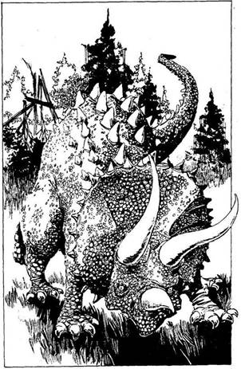
4.
A Pteranodon halálos sebet kap, s a bozótba zuhan. Továbbvonszolod magad; a hőség szinte elviselhetetlen, s ráadásul a magas trópusi fák közt rajzó legyek is kínoznak. Az ágakról kúszónövények csüngenek alá, a talajt pedig mindenfelé hatalmas páfrányok borítják. A levegő különös zajokkal van teli, s óriási, színes szárnyú szitakötők szállnak virágról virágra. Az egyik fa törzse hatalmas zajjal hirtelen szétroppan. Megremeg a föld, amint rád ront egy óriási őskori szörnyeteg. Három hosszú szarv mered előre nyakát védő csontos páncéljából. Harcolnod kell…
Triceratops ÜGYESSÉG 8 ÉLETERŐ 30
Három Forduló után velőtrázó ordítást hallasz. Most egy másik fenevad viharzik feléd. Tedd próbára a SZERENCSÉDET!
Ha SZERENCSÉD van - lapozz a 40-re. Ha nincs SZERENCSÉD - lapozz a 25-re.
5.
Rárohansz a Pajzsos lányra. Ő hidegvérrel céloz és rád lő az íjpuskájával. A nyílvessző kardforgató karodba mélyed. Izzó fájdalom bénít meg. Vesztesz 1 ÜGYESSÉG és 2 ÉLETERŐ pontot! Amikor összerogysz, a lány a torkodnak szegezi a kardját. - Ne moccanj, ha kedves az életed - szól rád. Lapozz a 75-re.
6.
- Ó, igen, már vártuk önt, Kerüljön beljebb - mondja a szolga. Követed a fogadószobába. Az asztal
három személyre van megterítve. Apothecus feláll, hogy üdvözöljön és bemutatja a barátját, Diodorust, a Tudóst, a lét síkjai közti utazások szakértőjét. Elmondja neked, hogy létezik néhány kapu vagy átjáró, amelyek lehetővé teszik az utazást Orb és az egyéb világok között. Véleménye szerint téged is egy hasonló kapun át hoztak el a Földről. - „Amint visszaszerzed a Talizmánt - folytatja -‚ el kell hagynod Szürkecéheket. Menj délkeletnek míg csak el nem éred a Nagy Fennsíkot. A Fennsík legmagasabb hegye az Égigérő hegy. Annak a csúcsán találod meg az egyik ilyen kaput, amelyen át visszajuthatsz a Földre.”
- És most ejtsünk szót a sokkal sürgetőbb kérdésekről - szól Apothecus. - A várost a temető mögötti kiskapun hagyhatod el. Ha komoly bajba kerülsz, fohászkodj Mindenek Anyjához segítségért. Csak azt kell kiáltanod: „Mindenek Anyja, természet, ments meg!” Elismételteti veled a szavakat, melyeket jól az agyadba vésel. Jegyezd fel a Kalandlapodra! Elmagyarázza, hogy Mindenek Anyja az Élet Szökőkútja, a Halál ellensége. Valószínűleg segíteni fog neked, de csak egyetlenegyszer, amikor a legnagyobb szükséged lesz rá. - De vigyázz! Egyetlen istenség sem lépheti át a másik templomának küszöbét! - Megköszönöd mindkettőjüknek és leültök vacsorázni. Pompás ételeket tálalnak fel. Pávát Rá-pálinka mártásban és egyéb különlegességeket. Vacsora urán hamar aludni térsz. Frissen ébredsz - nyersz 4 ÉLETERŐ pontot! Istenhozzádot mondasz Apothecusnak, megköszönve a segítséget és reménykedve, hogy nem fogod cserben hagyni. Elindulsz, hogy megkeresd a Tolvajok Klánját. Lapozz a 64-re.
7.
Fáklyát gyújtasz és belépsz a barlangba, amelynek a vége a sötétbe vész. Előrebotorkálsz, mígnem egy sima falú, keskeny folyosóhoz érsz, amely a barlangból ágazik el. Mindenütt átható kénszag terjeng. Ha továbbmész a széles, sziklás főalagúton - lapozz a 378-ra. Ha megvizsgálod a keskeny folyosót - lapozz a 48-ra.

8.
Néhány mérfölddel magad mögött hagyod Szürkecéheket és az éjszakát egy szénaboglyában töltöd. Pihenten ébredsz. Nyersz 2 ÉLETERŐ pontot! Melyik irányban indulsz a fennsík felé? Mehetsz egyenesen délkeletnek, az ingoványon át. Mehetsz a régi kereskedelmi úton - egy ideig délnek, majd keletnek. De elindulhatsz keletnek is a pusztán át a dombok felé, hogy majd ott fordulj délnek. Merre mész?
Délkeletnek? Lapozz a 287-re.
Délnek majd keletnek? Lapozz a 300-ra.
Keletnek, majd délnek? Lapozz a 313-ra.
9.
Mozdulatlanul fekszel az Ölyv karmai között, míg a hatalmas madár nehézkesen repül veled a bíbor hegyek felé. Egyre feljebb száll, és csakhamar a fészke fölött kezd körözni. Ott aztán elenged, és lezuhansz puha tollfészkébe. Ekkor az Ölyv nekiveselkedik, hogy ízekre szaggasson, mielőtt két hatalmas fiókáját megetetné. Meg kell küzdened vele! Minden sikeres támadás után dobj egy kockával! Ha 1-et dobsz - lapozz az 55-re.
Ölyv ÜGYESSÉG 10 ÉLETERŐ 16
Ha legyőzted - lapozz a 84-re.

10.
Megtámadod a Sárkányt! - Ízekre szaggatlak! - bömböli. Hatalmas karmaival feléd sújt, és óriási állkapcsaival megpróbálja szétroppantani a fejedet.
Vörös Sárkány ÜGYESSÉG 12 ÉLETERŐ 20
Ha a Sárkánynak csak 5 vagy ennél kevesebb ÉLETERŐ pontja marad - lapozz a 29-re.
11.
Megállsz a söntéspult előtt és már épp megkérdeznéd a csaposról, hogy mit lehet itt inni, amikor meglepetten hallod a saját hangodat. - Tölts valamit, te hájas disznó, mielőtt elhányom magam attól az ocsmány gennyes pofádtól! - A csapos keze a döbbenettől és a haragtól megáll a levegőben. Dühében elfojtott kiáltást hallat, majd megragadja a bunkósbotját, és átveti magát a pulton. Kardot rántva hátralépsz. Szemed már hozzászokott a sötéthez és látod, amint néhány vendég feláll. Még soha nem láttál ilyen gyanús kinézetű gyilkos bandát. Az egyiknek az arcán hosszú forradásnyom húzódik a fülétől az álláig. Meg kell verekedned a csapossal és az egyik gonosztevővel!
ÜGYESSÉG ÉLETERŐ
Csapos 7 8
Orgyilkos 8 9
Ha a csapos ÉLETEREJÉT 4-re, vagy még kevesebbre csökkented, az visszamenekül a pult mögé. Ha sikerül az orgyilkos ÉLETEREJÉT 5-re vagy 5-nél kevesebbre csökkentened - Tedd próbára a SZERENCSÉDET! Ha SZERENCSÉD van - lapozz a 200-ra. Ha nincs SZERENCSÉD - lapozz a 181-re.
12.
Első csapásod végzetes. Vér bugyog a tátongó sebből, az Öreg a földre rogy. Hátralépsz, amint újra felölti eredeti Vörös Sárkány alakját. A Kapukat Őrző Sárkány halott. Elindulsz a csillogó ezüstkapu felé. Lapozz a 400-ra.
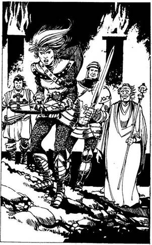
13.
Páncélingbe öltözött nőt pillantasz meg a fáklyák fényében, kezében felhúzott íjpuska. Amint észrevesz, feléd irányítja a fegyverét. Három libegő férfi tűnik fel mögötte. Az első magas és jó kiállású; csillogó páncélt visel, kétkezes kardjának pengéje halványfehér fényt áraszt. A következőn bő, aranyszínű köpeny és mosolygó aranyálarc van. Kezében elefántcsont botot tart. Az utolsó egy köpcös kis ember, aki páncélinge fölött fehér köpenyt visel, melyet vörös kereszt díszit. Oldalán szöges buzogány lóg. Mindhárman megtorpannak. Újra hallani az üvöltést, hangosabban, mint előbb. - A sarkunkban vannak! - kiáltja a fénylő kardú harcos. A Pajzsos lány megszólal: - Ki vagy te, és mi dolgod itt, a Hasadékban, minden gonoszok bölcsőjében? - Mit válaszolsz?
Azt mondod, hogy egy másik világról
érkeztél? Lapozz a 247-re.
Azt mondod, hogy a gonoszt akarod
legyőzni? Lapozz a 60-ra.
Próbálod húzni az időt? Lapozz a 75-re.
Megtámadod a lányt? Lapozz az 5-re.
14.
Letáborozol éjszakára, de néhány nagy légy, amelyeket eddig csak kellemetlennek tartottál, most igen félelmetesnek bizonyul. Petéik kikeltek, és most a lárvák belőled táplálkoznak. Szemhunyásnyit sem alszol, ezért nem nyersz vissza egyetlen ÉLETERŐ pontot sem. Hajnalban belegázolsz egy alga borította tóba, hogy lerázd magadról a lárvákat. Most már jobban érzed magad, és elindulsz az
Égigérő hegy lábához. Hamarosan már a hegyen mászol felfelé az elsatnyult bokrokba kapaszkodva. Feltűnik, hogy a levegő egyre ritkább, s már nehezen lélegzel, amikor egy széles barlangnyíláshoz érsz, melyből enyhe kénszag árad.
Kíváncsian lépsz be. Lapozz a 7-re.
15.
A fogadó söntése üres. Meleg ételt és szállást kérsz éjszakára. A fogadós közli, hogy három arany lesz, de mivel nincs segítsége, ingyen is itt maradhatsz, ha elmosogatsz helyette. Rajtad áll, mit választasz. Finom, roston sült hipogriffet kapsz, tejszínes mártással. Vacsora után úgy alszol el, mint akit letaglóztak. Reggel frissen ébredsz. Nyersz 4 ÉLETERŐ pontot! Elindulsz, hogy felkutasd a Tolvajok Klánját. Lapozz a 64-re.
16.
Az ajtók könnyen kinyílnak. Most, hogy Hawkana meghalt, a varázs valószínűleg szertefoszlott. A tolvajok a kulcslyukon át lesnek. - Zárva volt az ajtó, ezért nem tudunk bejutni - szólal meg a Sebhelyes. Elindultok kifelé, a tetőablak felé. Ha még mindig viseled Hawkana gyűrűjét, észreveszed, hogy az kihűlt, és matt fémmé változott. Mágikus
ereje csupán a Belső Szentélyben működött. Hirtelen megkondulnak a vészharangok. Ahogy eléritek a lépcső tetejét, egy csapat harcosnőt pillantasz meg magad mögött, akik vadul üldöznek. Mindnyájan a tetőablakból lógó kötél felé rohantok. Ahogy odaérsz a szemed sarkából mozgást veszel észre, és még időben lehajolsz Véresszívű halálos tőrdöfése elől. Mielőtt újra szúrhatna, a harcosnők nyílzáport zúdítanak rá íjpuskáikból. Véresszívű nyílvesszőktől átjárt teste fedezi meneküléseteket. A sebesültet sorsára hagyva a többi tolvaj átugrik a szomszéd ház tetejére. Neked is ugranod kell! Dobi két kockával! Ha a kapott összeg kevesebb, vagy ugyanannyi, mint ÜGYESSÉG pontjaid száma - lapozz a 163-ra. Ha nagyobb, lapozz az 56-ra.
17.
Amint a boltíves folyosó vészjósló sötétje felé rohansz, egy kattanást hallasz, amit félelmetes robaj követ. A lábad alatt megremeg a föld. Ha a boltíven át beleveted magad a sötétbe - lapozz a 41-re. Ha megtorpansz - lapozz a 21-re.
18.
Az Ölyv szinte észre sem veszi sikertelen táradásodat, ahogy magával ragad és elszáll a bíborszínű hegyek felé. Túl magasan vagy ahhoz, hogy megkockáztasd a harcot. Lapozz a 9-re.
19.
A fogatlan öregember motyog valamit. Figyelmeztet, hogy ez a kocsma igen veszélyes hely. Aztán félénken elcsoszog. Ha visszamész a söntéspulthoz - lapozz a 88-ra. Ha odatelepszel a hat mogorva, tolvajképű fickó asztalához - lapozz a 280-ra.
20.
Végre odaérsz a fennsíkot övező, föléd tornyosuló sziklákhoz. A vöröses sziklaoldalba lépcsőket vágtak, és úgy döntesz, ezeken indulsz el fölfelé. Déltájban már rettentően fájnak a lábaid, ezért igencsak megörülsz, amikor egy platóhoz érsz, ahol egy vízesés hűvös permete vár. A fennsíkra lezúduló szivárványszínű permetet árasztó vízesés robaja szinte megsüketít. Ha továbbmászol a lépcsőkön - lapozz a 328-ra. Ha közelebb mész a vízeséshez - lapozz a 33-ra.

21.
Épp időben állsz meg - egy óriási kőtábla zuhan le előtted hatalmas robajjal, amely még sokáig visszhangzik a barlangban. A tábla teljesen elzárja a kijáratot. A másik folyosó ugyanígy el van zárva. Belátod, hogy nincs más választásod, szembe kell nézned azzal, akinek a közelgő lépteit hallod és kardot rántasz. Lapozz a 13-ra.
22.
Egy darabig a kanyargós alagúton mész. Az enyhén balra visz, majd lefelé, míg végül egy barlangban ér véget. A sárkány ott fekszik előtted, de ezúttal a háta mögött bukkantál ki. Néhány levedlett pikkely hever körülötte szétszórva. Mit teszel?
Lándzsádat - ha van nálad - a sárkány
hátába döföd? Lapozz a 285-re.
Megpróbálsz fölkapni néhány
pikkelyt? Lapozz a 269-re.
Elveszel néhány maréknyi
kincset? Lapozz a 38-ra.
Kimész a barlangból? Lapozz a 369-re.
23.
Miután utoljára rád sújt, fölsegít, és együtt indultok a Halál Völgye felé, ahol lelked örök bolyongásra lesz ítélve.
24.
Lemész a lépcsőkön és egy hosszú, alacsony pincehelyiségbe jutsz. Mindenfelé székek és asztalok. Az egyetlen megvilágított rész a söntéspult, mely mögött a kocsma terebélyes tulajdonosa áll. Lapozz a 3-ra.
25.
Előretépsz, kardod már szúrásra lendül, amikor egy hatalmas ragadozót pillantasz meg a Triceratops mögött. Bizonyára ő is ez elől menekült. Most megfordul, hogy szembenézzen a Tyrannosaurusszal. Ez a vérengző őslény akkora, mint egy ház, és félelmetes állkapcsa van. Gigászi küzdelem bontakozik ki. Végül a több sebből vérző Triceratops szétszaggatott teste a földre zuhan. A végkifejlet gyors, látod, amint a Tyrannosaurus áldozata torkába mélyeszti öles metszőfogait. A győztes fenevad üveges szemeivel rád tekint és felszegi a fejét. Új prédáját kiszemelve rád veti magát, hagy felfaljon. Harcolnod kell ellene.
Tyrannosaurus ÜGYESSÉG 11 ÉLETERŐ 18
Ha legyőzted - lapozz a 14-re.

26.
Kardod egyetlen hatalmas sújtásával kettévágod a Fűz egyik ágát, amelyből a fa nedve a karodra csöppen. A Fűz halk nyögéssel abbahagyja a támadást, és visszahúzza az ágait. Ha belemártod a karodat a tóba - lapozz a 161-re. Ha gyorsan visszavonulsz - lapozz a 39-re.
27.
Az Ölyv célt téveszt és felszáll a magasba. Szerencsédre egy nálad nagyobb préda elterelte rólad a figyelmét. Az Ölyv ismét lecsap, szárnyai vihart kavarnak. Egy vadlovat ejt zsákmányul. Hálát adsz a jószerencsédnek és továbbsietsz a fennsík felé. Lapozz a 20-ra.
28.
Befordulsz a Kocsi utcába és egy cégért veszel észre: Fogadó az Ezüst Mütyürhöz. Közvetlenül egy nagy istálló és egy szegényház mellett áll. Sokkal kellemesebb helynek látszik, mint a Vörös Sárkány Fogadó. Már erősen sötétedik, ezért úgy döntesz, hogy betérsz. Lapozz a 15-re.

29.
Hirtelen észreveszed, hogy fegyvereddel csak a puszta levegőt ütöd. A Sárkány ősz, fehér ruhás öregemberré változott. - Könyörülj rajtam, kérve kérlek! - esedezik vékony magas hangján. - Végre feloldottad az átkot, amely engem sújtott. Ezt csak egy ilyen erős harcos tehette meg. Mikor évszázadokkal ezelőtt átléptem e kaput, megátkoztak, hogy addig viseljem a sárkány alakot, míg egyszer le nem győz valaki. Most, hogy újra visszanyertem
régi formámat, végre visszatérhetek a saját világomba. Belépsz-e velem a kapun? - Ha belépsz vele a csillogó ezüstkapun - lapozz a 77-re. Ha megtámadod az öreget - lapozz a 12-re.

30.
A lépések egyre közelednek. Hirtelen mennydörgéshez hasonló hang visszhangzik végig a barlangon. Körülnézve látod, hogy mindkét boltíves kijáratot hatalmas kőtáblák zárják le. Csapdába kerültél. Lapozz a 13-ra.
31.
Az ajtókat még mindig valamilyen mágikus erő tartja zárva. Betörni sem tudod őket. Megfordulsz és látod, hogy Hawkana fölkelt és ismét kardot ragadott. Szeme szikrázik a gyűlölettől. - Nem tudsz megölni! Most pedig kivájom a lépedet! - Lassabban mozog, mint az előbb, de újra meg kell küzdened vele.
Hawkana ÜGYESSÉG 9 ÉLETERŐ 6
Ha legyőzted - lapozz az 54-re.
32.
A réztigris pofáján gonosz vigyor ül. A nyakadba akasztod, remélve, hogy majd védelmet nyújt és szerencsét hoz. Lapozz a 156-ra.
33.
Közelebb mész a vízeséshez és pillanatok alatt bőrig ázol. Alaposabban megvizsgálod és egy száraz foltot veszel észre mögötte egy kiszögellő szikla alatt. Mikor odaugrasz, egy barlangnyílás tárul fel előtted. Ha belépsz a barlangba - lapozz a 42-re. Ha inkább továbbmászol a lépcsőkön - lapozz a 328-ra.

34.
Ügyesen elkerülöd a feléd sújtó mancsot, és támadásba lendülsz. Van nálad lándzsa? Ha igen - lapozz az 51-re. Ha nincs - lapozz a 10-re.
35.
Értelmetlenül motyogsz összevissza, miközben a szádra és a füledre mutogatsz. Először azt hiszik, valamiféle varázsigét mormolsz, de aztán az egyik megszólal. - Egy süket harcos - no, akkor itt kell elkanyarodni! - A Kapitány felültet az egyik fiatalabb nő mögé a nyeregbe. Elvirán látszik, nem örül
neki, hogy lovát egy idegennel kell megosztania. Lovagoltok egy ideig, majd a nők beszélgetni kezdenek. Rájössz, hogy ők az Őrség tagjai, vagy az Ingoványi Szürkecéhek rendfenntartói lehetnek. Azt is megtudod, hogy a városban nagy az ellenségeskedés köztük és Mindenek Anyjának Papnői között. Úgy veszed ki szavaikból, hogy Papnők szelídsége ingerli őket. Lapozz a 197-re.

36.
Küszködsz, hogy legyőzd az álmosságot, és a varázs végül megtörik. Fölnézel és a fűz törzséről két zöld szem tekint vissza rád. Mielőtt meghátrálnál, a haragos fa az ágaival támad rád. Meg kell küzdened a Gyilkos Fűzzel
Gyilkos Fűz ÜGYESSÉG 8 ÉLETERŐ 20
Négy sikeres Forduló után lapozz a 26-ra.
37.
Az Ölyv szeme éles, akár a sasoké. Úgy kap fel a földtől, mint egy mezei pockot. Magával ragad és elszáll veled a bíborszínű hegyek felé. Túl magasan vagy ahhoz, hogy harcolni próbálj ellene. Lapozz a 9-re.
38.
Felkapsz egy drágakő berakásos sisakot, de a nagy sietségben megbotlasz egy fekete gyöngyökkel teli aranyládában. A Sárkány ezt meghallja, megfordul és ahogy megpróbálsz talpra állni, rád fújja halálos tüzét. A lángnyelvek körbenyalnak, és csak egy kupac elszenesedett hamu marad belőled. Lapozz a 43-ra.
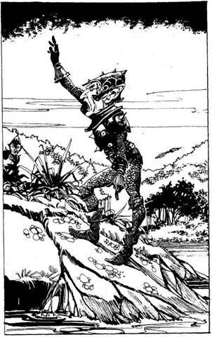
39.
A folyó partján mész tovább nyugatnak, és hamarosan magad mögött hagyod a páfrányokat. A vidék erre valamivel lankásabb. Hátrapillantasz és nagyot dobban a szíved, amikor észreveszed az egyik Sötét Elfet, aki a nyomaidat szaglássza. Ruganyos fürgeséggel mozog, ami igen felemelő látvány lenne, ha nem viselné szöges fekete vértjét és nem ilyen gyilkos kifejezés ülne az arcán. Miközben figyeled, fölegyenesedik és feléd mutat; nem lehetnek túl messze mögötted. Gyorsan kell döntened, mit cselekszel.
Végigrohansz a folyóparton? Lapozz a 359-re.
Belegázolsz a folyóba, és ott rohansz egy
darabig, mielőtt fölkapaszkodsz a
partra? Lapozz a 253-ra.
Elbújsz egy nagy bokorban? Lapozz a 307-re.
40.
Előrelépsz, kardod ismét szúrásra lendül, hogy végezz a megvadult szörnnyel, amikor egy hatalmas ragadozót pillantasz meg a Triceratops mögött. Az is bizonyára ezelől a fenevad elöl menekült. Most megfordul, hogy szembenézzen a Tyrannosaurusszal. Gigászi küzdelem bontakozik ki, míg végül a véres, sebesült Triceratops egy utolsót döf szarvával és a Tyrannosaurus élettelenül terül el a földön. A Triceratops elvánszorog, te pedig megkönnyebbülten folytatod az utadat a hegy felé. Lapozz a 14-re.
41.
Mielőtt berohanhatnál a folyosóra a boltíves nyíláson át hatalmas robajjal egy óriási kőtábla zuhan le előtted. Csak úgy visszhangzik tőle a barlang. A kőtömb teljesen elzárja a kijáratot. Sajnos már nem tudsz megállni ugrás közben) és iszonyú fájdalmat érzel, amikor nekimész a kőnek. Csontjaid majd széttörnek. Vesztesz 2 ÉLETERŐ pontot! Tántorogva fölkelsz és látod, hogy a másik boltíves kijárat is el van zárva. Belátod, nincs más választásod, meg kell várnod azt, akinek a közelgő lépteit hallod. Előhúzod a kardodat. Lapozz a 13-ra.
42.
Sikerül meggyújtanod egy nyirkos fáklyát. A fényben felfedezel egy ajtót, mely a barlang végéből nyílik. Az ajtó fekete fából készült, benne alabástrom berakás. A középső rész díszítése egy tüzet okádó vörös sárkányt és egy elefántcsont lándzsát ábrázol. Ahogy óvatosan benyitsz, az ajtó megnyikordul. Egy útjáróba lépsz. A levegő dohos és rothadás szaga terjeng mindenfelé. Nemsokára elérsz egy útkereszteződéshez, ahol négy alagút találkozik.
Egyenesen továbbmész? Lapozz a 71-re.
Balra fordulsz? Lapozz az 53-ra.
Jobbra fordulsz? Lapozz a 80-ra.
43.
Lelked lágyan lebeg a Halál Völgye felé. Alant, ameddig a szem ellát, szélfútta, jellegtelen síkság terül el. A holtak lelkei itt bolyonganak céltalanul, magányosan. Már éppen elérnéd a Völgy szélét, amikor az éteri szél hirtelen felkapja a lelkedet és tovaröppenti. Hamarosan két alak társaságában találod magad, akik megidéztek ebbe a fantasztikus, mágikus világba. A színes ruhás, szem nélküli szólal meg: - Még nincs minden veszve! - Megérted a szavait anélkül, hogy hallanád őket. - Ha a lelked hajlandó rá, újra testet ölthetsz, és mi visszafordítjuk az idő kerekét. - Ekkor a másik lény szólal meg: - Ha kívánod, visszaküldelek az időben oda, amikor épp elindultál Szürkecéhekből. - Visszamész az időben és megpróbálod újra véghezvinni a küldetésedet? Ha igen, a lény a válladra teszi a kezét. Mindketten eltűnnek. Újra élsz! 15 ÉLETERŐ pontod van és hátizsákodban megtalálod az összes felszerelési tárgyat, ami a halálod előtt nálad volt. De a következő tárgyak, amennyiben szert tettél rájuk, nincsenek benne: A Borostyánfenyő Gyantája, az Ölyv Tolla, a Lándzsa, vagy a Sárkánypikkelyek. Húzd le ezeket a Kalandlapodról! A Szürkecéhek városa előtt vagy. Lapozz a 8-ra.
44.
Hawkana élettelenül rogy a földre. Az oltárhoz lépsz és elveszed a Halál Talizmánt. Hideg és nehéz. Végre visszaszerezted! Nyersz 1 SZERENCSE pontot! Hawkanára pillantasz és égnek áll a hajad. A sebei gyógyulnak. Ahogy meredten bámulsz rá, megpróbál felkelni a vértócsából, amelyben eddig feküdt. Ha visszamész Hawkanához - lapozz az 54-re. Ha odarohansz a kétszárnyú ajtóhoz - lapozz a 31-re.

45.
Harggal küzdesz meg. Ütéseid nyomán fekete vér buggyan ki a testéből, de amilyen gyorsan megsebezted, olyan gyorsan be is gyógyulnak a sebei. Harg kalapácsa a válladat éri - vesztesz 2 ÉLETERŐ pontot! Ekkor Thaum csettint egyet és Harg, mely csak illúzió volt, eltűnik. Lapozza 171-re.
46.
A fejed fölé emeled a Talizmánt. Az fénylik, ahogy elkiáltod magad: - Távozzatok! Ne háborgassatok többé! - Megigézve próbálnak közelebb kerülni a Talizmánhoz, de szavaid megállítják őket. Egyikük rád kiált: - Majd mások veszik el tőled a Talizmánt
és mi, az Arcnélküliek, úrként térünk vissza Istenünk, a Halál uralma alatt! - Szavai elhalnak, ahogy elnyeli őket a sötétség. A Talizmán most könnyebb, és fénye is mintha elhalványodna. Mélyen alszol - nyersz 2 ÉLETERŐ Pontot! Másnap reménykedve indulsz útnak, hisz elűzted a Halál szolgáit. A fennsík a távolban dereng. Lapozz a 20-ra.
47.
A dühös ifjú feléd fordul, arcán zavart kifejezés ül. Köszöni, hogy visszaadtad az amulettjét. - Tulajdonképpen nem tudom, min is vesztünk össze - mondja. A szerencse rád fog mosolyogni, amiért ilyen becsületes voltál! Nyersz 1 SZERENCSE pontot. Kisvártatva hallod, amint újra parázs veszekedésbe kezdenek. - Mindig csak bajt keversz! - ordítja az egyik ifjú. - Inkább magukra hagyod őket. Lapozz a 156-ra.
48.
Egy darabig a kanyargó alagútban mész, mely egy nagy barlangba vezet. Előtted egy hatalmas Sárkány tarajos háta magasodik. Körülbelül tizennyolc méter hosszú a teste és vörös pikkelyek borítják. Hosszú, összetekeredett farka hatalmas
kincshalom tetején pihen - drágakövek, aranytárgyak, serlegek és vázák hevernek szanaszét lomha teste alatt. Néhány levedlett pikkelyét is ott látod körülötte. Mit teszel?
Lándzsádat - ha van nálad - a Sárkány
pikkelyes hátába döföd? Lapozz a 285-re.
Megpróbálsz felkapni néhány
pikkelyt? Lapozz a 269-re.
Magadhoz veszel egy keveset a Sárkány
kincséből? Lapozz a 38-ra.
Kimész a barlangból? Lapozz a 369-re.

49.
Belépsz a dértől csillogó ajtón. Hosszú dérnyom vezet az ajtótól a szoba közepén lévő, krétával rajzolt ötszögig. Egy kevés homokot szórtak oda, ahol a dér vonala keresztezi az ötszög szélét. Az asztalon mindenféle furcsa tárgy hever. Mellette, a földön, egy Amulett fekszik, melyet egy Egyszarvú Szarva hegyéből készítettek. Az Amulettet különös ékírás díszíti. Ha akarod, magaddal viheted. Úgy látod, nincs itt semmi más, aminek hasznát vehetnéd, így hát kimész. Lapozz a 28-ra.
50.
Hawkana kardot ránt, és egy vérszomjas tigris mohóságával veti rád magát. Meg kell küzdened a Főpapnővel!
Hawkana ÜGYESSÉG 12 ÉLETERŐ 14
Ha legyőzted - lapozz a 44-re.
51.
Megtámadod a sárkányt. - Ízekre téplek! - bömböli. Hatalmas karmaival feléd sújt, és megpróbálja összezúzni a koponyádat. Ügyesen elugrasz előle, és a lándzsádat puha hasába mélyeszted.
Vörös Sárkány ÜGYESSÉG 12 ÉLETERŐ 20
Minden sikeres támadásod után 5 ÉLETERŐ pontot vonj le tőle, mert a mágikus lándzsa mélyen a testébe fúródik. Ha a Sárkánynak csak 5 vagy kevesebb ÉLETERŐ pontja maradt, lapozz a 29-re.
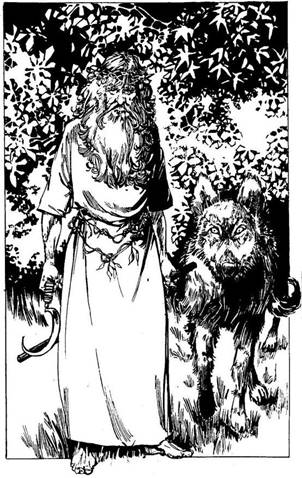
52.
Húzd ki az egyik adag élelmiszert a Kalandlapodról! Fél térdre ereszkedve a farkas felé nyújtod a húst, és közben megpróbálod lecsitítani. A farkas elfogadja ajándékodat. Ekkor egy zöld ruhás alak lép a tisztásra. Egyik kezében tölgyfa botot, a másikban ezüstsarlót tart. Fején fagyöngy koszorú pihen. Rád mosolyog és bemutatkozik: A nevem Wodeman, a Szent Ligetet őrző Druida vagyok. A barátom, Hósörény, köszöni az ajándékot. Az ilyen kedves nagylelkűség jutalmat érdemel! A Druidák áldása kísérjen utadon! Sok szerencsét! - Nyersz 1 SZERENCSE pontot a Druidák jókívánságáért. - Kimerültnek látszol - mondja. - Fogd ezt. - Egy almát vesz elő köntöséből és feléd nyújtja. Jegyezd fel Kalandlapodon! Az ilyen almák csodálatosan felfrissítenek, és 4 ÉLETERŐ pontot nyersz, ha egy ilyen almát megeszel. Megköszönöd az ajándékot, de tudod, hogy küldetésedet folytatnod kell, így fájó szívvel elindulsz a Szent Ligetből. Lapozz a 159-re.
53.
A bal oldali alagútban folytatod az utadat, mely hamarosan jobbra kanyarodik, és egy kopár kőszobába torkollik, amelynek a közepén kis téglalap alakú kőpillért látsz. Az alagút a szoba túlsó végében tovább folytatódik. Mit teszel?
Megvizsgálod a kőpillért? Lapozz a 136-ra.
Egyenesen átmész a szobán és továbbmész
az alagúton? Lapozz a 89-re.
Visszamész a kereszteződéshez és egy másik
alagúton indulsz tovább? Lapozz a 42-re.
54.
Észreveszed, hogy Hawkana egyik ujján egy gyűrű zöldes fénnyel világít, miközben sebei összeforrnak. Gyorsan lehúzod, mielőtt még teljesen felgyógyulna. Felhúzod az ujjadra a gyűrűt. Ez egy varázslatos Gyógyító Gyűrű. Nyersz 6 ÉLETERŐ pontot! Ha megpróbálsz kimenni a kettős ajtón - lapozz a 16-ra. Ha átkutatod a Belső Szentélyt - lapozz a 137-re.
55.
Sikerül kardodat az Ölyv egyik hatalmas szemébe mélyesztened. Az fájdalmában felsikolt, és elszáll a fészkéről. Itt az alkalom, hogy elmenekülj! Lapozz a 84-re.
56.
Elugrasz, de nem elég messzire. Iszonyatos erővel csapódsz a szomszéd ház falához, és lezuhansz az utcára. A szerencse azonban nem hagy el teljesen, mert egy bűzölgő szemétkupacon kötsz ki, így nem esel olyan nagyot. Vesztesz 3 ÉLETERŐ pontot! Ha még életben vagy, végigvonszolod magad a sikátoron a házig, ahol végre már biztonságban érzed magad. A háztól nem messze megállsz, hogy kipihend magad, mielőtt elindulnál a városból. Lapozz a 235-re.
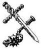
57.
Lekanyarodsz egy mellékutcába, mely a Hét Bűn utcája felé visz. Útközben két kéktógás diák majdnem fellök. Veszekszenek és kisvártatva ölre mennek. Úgy látszik, egyikük nem ért egyet azzal, amit a másik mondott. Viaskodás közben a dühös fiatalember elejt egy apró réztigris amulettet. Mit teszel?
Félbeszakítod a vitájukat, és visszaadod az
amulettet? Lapozz a 47-re
Ügyet sem vetve rájuk
továbbmész? Lapozz a 156-ra.
Fölveszed az amulettet? Lapozz a 32-re.
58.
A guruló pajzs után veted magadat, és az utolsó pillanatban sikerül elkapnod a szélét. Amint Ott fekszel, magad fölé rántod. A Sárkány újra tüzet okád rúd. Sajnos az egyik lábad védelem nélkül marad, és súlyosan megég - vesztesz 4 ÉLETERŐ pontot! Ha még mindig életben vagy, újra a sárkányra támadsz. Ha van nálad lándzsa, lapozz az 51-re. Ha nincs, lapozz a 10-re.

59.
Ezután az erőfitogtatás után sebesen előkapod a Gyötrelmes Végzet Tekercsét és felolvasod. Hawkana kardot ránt, és egy vérszomjas tigris mohóságával veti rád magát A varázs azonban hatni kezd: szikrázó kék fény veszi körül. Hátraszegett fejjel felüvölt a fájdalomtól. Súlyosan megsérült, tántorog, de erőt vesz magán. Meg kell küzdened a Főpapnővel!
Hawkana ÜGYESSÉG 12 ÉLETERŐ 6
Ha legyőzöd - lapozz a 44-re.
60.
- Egyedül? - kérdi a Pajzsos lány hitetlenkedve. Az aranyruhás a paphoz fordul. - Igaz ez? - kérdi. Tudod, hogy a meséd nem igaz, ezért idegesen várod, míg a Pap befejezi a varázslást. - Hazugság! - szólal meg végül. A Pajzsos lány vádlón fordul feléd. - Miért hazudsz nekünk? Újra megkérdem: ki vagy te és mi keresnivalód van itt? - Ha elmondod az igazat - lapozz a 70-re. Ha megkérded, mi közük hozzá - lapozz a 75-re.

61.
Most, hogy harcban legyőzted a jégdémont, száműzted arra a síkra, amelyikről jött. Üvegszilánkok ropognak a lábad alatt. Ha belépsz a házba, amelyikből kijött - lapozz a 49-re. Ha továbbmész a Macskakő Sétányon - lapozz a 28-ra.

62.
A Halállovag, hangos páncélcsörömpöléssel térdre rogy, majd eltűnik. A Keresztes Lovag képe jelenik meg előtted. - Ez derék dolog volt! Vitéz harcos vagy, érdemes a küldetésre. Fogd Szent Kardomat, ez majd megsegít, mert én már többé nem tudlak segíteni! - Átadja neked csillogó kardját, és a látomás szertefoszlik. A kard eléggé valódinak látszik, fénye beragyogja az egész istállót. Ahogy megérinted a Lovag ajándékát, sebeid, mintegy varázsütésre, begyógyulnak. Nyersz 6 ÉLETERŐ pontot! Ha majd a Szent Kardod használod, mindig adj hozzá 1-et ÜGYESSÉG pontjaidhoz. Lapozz a 121-re.

63.
Futsz, amilyen gyorsan csak tudsz a sziklás terepen. Majd kiszakad a tüdőd a nagy erőfeszítéstől. Mikor eléred a dombokat, hátrapillantasz és látod, hogy mindkét üldöző csapat egyenlő távolságra van mögötted. Az Elfek északról közelednek egy csapatban, míg az Orkok szétszóródva délről támadnak. Mit teszel?
Északnak fordulsz, hogy szembenézz az
Elfekkel? Lapozz a 214-re.
Délnek mész és felmászol egy dombra, hogy
találkozz az Orkokkal? Lapozz a 282-re.
Továbbfutsz? Lapozz a 227-re.

64.
Amikor elindulsz, egy kis csoportot veszel észre: egy szürke köpenyes férfit vesznek körül. A férfi, akinek arany fülbevaló lóg a füléből, virágcsokrokat varázsol és tüntet el a közönség legnagyobb örömére és ámulatára. Mit teszel?
Megpróbálod felkutatni a Tolvajok
Klánját? Lapozz a 83-ra.
Egyedül próbálod visszaszerezni a
Talizmánt? Lapozz a 383-ra.
Maradsz még és te is nézed a
varázslást? Lapozz a 106-ra.
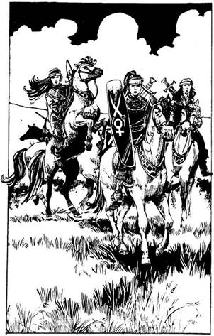
65.
A lombok közül végül egy kietlen szürke ingoványhoz érsz‚ mely hosszan lenyúlik nyugatra. Úgy félóra múltán porfelhőt pillantasz meg a távolban. Hamarosan húsz lovas alakja bontakozik ki előtted. Feléd vágtatnak, a szél idáig hozza a paták dübörgését. Amint közelebb érnek, látod, hogy ezek harcosnők, akik gazdagon díszített bőr mellvértet és alatta páncélruhát viselnek. Köréd gyűlnek; arcuk komor, tekintetük nem sok jót ígér. Kapitányuk előreléptet a lovával, és kurtán megkérdi, mit keresel itt az ingoványnál. Mit felelsz?
Elmondod, hogy küldetést
teljesítesz? Lapozz a 101-re.
Azt mondod, hogy egy másik világból
csöppentél ide? Lapozz a 73-ra.
Azt hazudod nekik, hogy egy megtámadott
karaván utolsó túlélője vagy? Lapozz a 322-re.
Süketnémának tetteted
magad? Lapozz a 35-re.
Követeled, hogy vigyenek az Ingoványi
Szürkecéhekbe? Lapozz a 95-re.

66.
Itt a részed a zsákmányból, te arcátlan kutya! - üvölti a legnagyobb orgyilkos és megpróbál hasba döfni. Félrerúgsz, de a másik két gazfickó is rád támad. Közben a sunyi képű tolvaj kegyetlenül meggyilkolja az ékszerészt. Mindkét tolvajjal meg kell verekedned!

ÜGYESSÉG ÉLETERŐ
Első tolvaj 6 7
Második tolvaj 5 6
Ha az elsőt megölted - lapozz a 320-ra.
67.
A guruló pajzs kicsúszik a kezedből. A Sárkány felnevet és hatalmasat fúj feléd. Terjedelmes tüdejéből lángnyelvek csapnak ki. Pusztító erejű tűz ölel körül - szénné égsz. Lapozz a 43-ra.

68.
Kardot rántasz és az Orkok felé rohansz a hepehupás terepen. Mielőtt azonban a közelükbe érnél, a Kapitányuk, egy hatalmas otromba Ork, sárgás agyaraival rád ront. Megragadod az agyaránál fogva, de elveszted az egyensúlyodat és mindketten a szakadékba zuhantok. A zuhanás egy örökkévalóságnak tűnik, de legalább nem egyedül halsz meg…
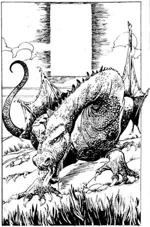
69.
Továbbmászol, lihegve a ritka levegőtől. Végül fölérsz a hegytetőre. Leírhatatlanul szép kilátás tárul eléd. A fennsík óriási terepasztalként terül el a lábad alatt: trópusi erdők, hegyek és hatalmas tavak csillognak a napfényben. Harminc méterre tőled egy ragyogó ezüst téglalap lebeg a levegőben, de semmi sem tartja. Felismered: ez a kapu. Amint közelítesz felé, szélzúgásra leszel figyelmes. Felnézel, és az ősöreg Vörös Sárkányt látod, amint leszállni készül a kapu mellé. Így, a szabadban még félelmetesebbnek és hatalmasabbnak látszik: testéből, mely iszonyatos meleget áraszt, erő sugárzik. - Az Istenek bíztak meg, hogy a Kaput őrizzem! - szólal meg vidám zengő hangon. Mit teszel?
Megtámadod? Lapozz a 382-re.
Elmondod neki, hogy a Halál fenyegeti
a világot? Lapozz a 358-ra.
Ráijesztesz? Lapozz a 275-re.
70.
A lány csodálkozva vonja fel a szemöldökét. Mind a négyen kételkedve szemlélnek. A Pap kisvártatva megszólal: - Ez az igazság: őszintén szívből beszéltél! .- A Pajzsos lány leereszti íjpuskáját és védekezésképpen a barlang bejárata felé fordítja. - Most, mit tegyünk? - kérdi az aranyba öltözött alak. - A kijáratokat eltorlaszolták, nekem pedig csak annyi varázserőm maradt, amennyivel közülünk csak egyvalakit juttathatok ki innen teleportálással. - Akkor együtt halunk meg, Varázsló - szólal meg a csillogó kardú Lovag komoran. - De ők is drágán megfizetnek! - A Pap ekkor felteszi a kérdést: - Hát
a Talizmán? Ezt a harcost talán az Istenek küldték, hogy folytassa a küldetésünket! - Érzed a belőlük áradó jóakaratot, ezért csendben várod, hogy mikor segíthetnél nekik. Lapozz a 100-ra.
71.
Végigmész az alagúton, amely hamarosan egy kopár, kerek szobába torkollik. A kopár szobában középen egy kőpillért látsz. Az alagút a szoba túloldalán folytatódik. Mit teszel?
Megvizsgálod a pillért? Lapozz a 184-re.
Egyenesen átmész a következő
alagútba? Lapozz a 204-re.
Visszamész a kereszteződéshez, és egy másik
alagutat választasz? Lapozz a 42-re.

72.
Mély, kiszáradt árok és hegyes cölöpkerítés vesz körül néhány előkelő vályogházat. Keresztülvezetnek a falun egy zöld homokkőből épült kétszintes házhoz, mely bizonyára a Disznófő lakhelye. Nem messze egy nagy, sáros pocsolya látszik. A Disznófő faragott kőtrónuson ül; kékesfekete bőre alatt csak úgy dagadoznak az izmok. Vörös köpenyt
visel, amelyet borostyán nyaklánc fog össze vaskos nyakán. Úgy mutatkozik be, mint a fennsík ura, és te örömmel tapasztalod, hogy meglehetősen könnyen megérted ezt a különös, torokhangokból álló nyelvet. Elégedettnek látszik, megköszöni a rubinkövet és megkérdezi, van-e valami, amit a fennsíkról tudni akarsz. Az Égigérő hegy kapuiról kezd faggatni. Lapozz a 110-re.

73.
A Kapitány történeted hallatán összeráncolja a szemöldökét. Társai morgolódni kezdenek, de egy kézmozdulattal csendre inti őket. - El kell vinnünk téged Szürkecéhekbe, Hawkanához! Beszélni akar veled! Ülj fel ide Elvira mögé - mondja az egyik fiatalabb asszonyra mutatva-, és add ide nekem a kardodat! Ha felülsz a lóra és átadod neki a kardodat - lapozz a 155-re. Ha nemet mondasz és közlöd, hogy inkább a magad útját járod - lapozz a 142-re.

74.
Tovább botorkálsz a sötétben, alkalmas helyet keresve, ahol éjszakára lehajtanád a fejedet. Végül rátalálsz egy üres istállóra és leheveredsz a szénába. Lapozz a 91-re.

75.
- Nem vesztegethetjük az időnket a hozzád hasonlókra! - mondja az aranyruhás, majd a társaihoz fordulva így szól: - Most mit tegyünk? Minden kijáratot elzártak és nekem csak annyi varázserőm maradt, amennyivel csak egyvalakit tudok kijuttatni innen teleportálással. - A csillogó kardú Lovag hangja komoran cseng, amikor azt mondja: - Akkor együtt halunk meg Varázsló, de ők is drágán megfizetnek! - És a Talizmán? - szól közbe a Pap. - Talán ez a harcos folytathatná a küldetést. - Eléd lép és mielőtt bármit is tehetnél, varázslatot bocsát rád. Érzed, ahogy lassan transzba esel - hipnotizáltak - és mindent elmondasz nekik. Vesztesz 1 SZERENCSE pontot! Lapozz a 114-re.

76.
Hawkana kardot ránt és egy vérszomjas tigris mohóságával veti rád magát. Éppen csak annyi időd van, hogy előkapd a Gyorsaság Gőzeit tartalmazó fioládat, és mélyet szippants belőle. Semmi sem történik - az alkimista egyszerű levegőt adott el neked! Hawkana egy kobra fürgeségével támad rád, és amikor kardja a kezedbe vág, elejted az üres fiolát. Vesztesz 2 ÉLETERŐ pontot! Ha még életben vagy, harcolnod kell a Főpapnővel!
Hawkana ÜGYESSÉG 12 ÉLETERŐ 14
Ha legyőzted - lapozz a 44-re.

77.
Elindultok a kapu felé. Az Öreg hirtelen megragad és mielőtt rájönnél, mi történik, felölti valódi, Vörös Sárkány alakját. Szorosan tart hatalmas karmai között. - Ostoba halandó, sose bízz meg egy Sárkányban! - szól és leharapja a fejedet, majd testedet lehajítja a hegyről. Lapozz a 43-ra.
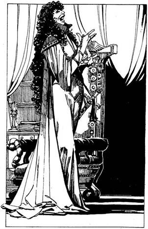
78.
Kisvártatva egy tágas helyiségbe visznek. Bent egy feltűnő szépségű, hollófekete hajú nőt látsz. Hosszú, fekete köntöst visel, amely alól csillogó kardmarkolat villan elő. Tartása erős egyéniségről árulkodik. Feláll és üdvözöl. - Hawkana vagyok, Fell-Kyrinla templomának Főpapnője és az Őrség Parancsnoka. Különös történetet adtál elő. - Bólint, mire az őrök megmotoznak. Megpróbálsz ellenállni, de szorosan fognak. Megtalálják az elrejtett Talizmánt, leszakítják a nyakadból és átadják a Főpapnőnek. Azonnal felismeri és boldogan felnevet. Elfordul és megszólal: - Most a templomba megyek! Ezt bolondot meg dobjátok ki az utcára! - Kilökdösnek, s az őrház ajtaja becsapódik mögötted. Elvesztetted a Talizmánt! Most mihez kezdesz?
Visszamész az Őr utcán a Raktár
utcába? Lapozz a 357-re.
Befordulsz a Kovács utcába. Lapozz a 303-ra.
Elindulsz lefelé a Hét Bűn
utcáján? Lapozz a 264-re.

79.
A pajzs kihullik a kezedből. Rájössz, hogy nélküle semmi esélyed, és elkeseredetten veted utána magad, ahogy a sziklák között gurul. Tedd próbára a SZERENCSÉDET! Ha SZERENCSÉD van - lapozz az 58-ra. Ha nincs SZERENCSÉD - lapozz a 67-re.
80.
A jobb oldali alagúton indulsz el, mely hamarosan balra kanyarodik és egy kopár, kőfalú szobába torkollik. A szoba közepén egy kis kőpillért látsz. Az alagút a szoba túloldalán folytatódik. Mit teszel?
Megvizsgálod a kőpillért? Lapozz a 302-re.
Egyenesen átmész a szemközti
alagútba? Lapozz a 260-ra.
Visszatérsz a kereszteződéshez és egy másik
irányba folytatod az utadat? Lapozz a 42-re.
81.
- Hazudsz! - sziszegi és mielőtt megmoccannál, beléd mélyeszti a karmait. Jeges zsibbadás árad szét a testedben és úgy érzed, mintha összes erődet elszívták volna. Vesztesz 1 ÜGYESSÉG és 2 ÉLETERŐ pontot! Most meg kell küzdened a Halál Szolgájával! Ha eltalál, minden alkalommal 2 ÉLETERŐ pontot és 1 ÜGYESSÉG pontot vesztesz!
Halál Szolgája ÜGYESSÉG 7 ÉLETERŐ 7
Ha legyőzted - lapozz a 175-re.

82.
Hátrafeszíted karodat és teljes erővel elhajítod lándzsádat, a Sárkányölőt. Fegyvered azonban lepattan a Sárkány vastag pikkelypáncéljáról. A Sárkány felébred és rád néz keskeny, sárgás szemével. - Ki vagy te? - kérdi. - Félelem szorítja össze a torkodat. Miközben valami válaszfélét hebegsz, a Sárkány mély lélegzetet vesz. Lapozz a 146-ra.
83.
Hallottál a csatornanyílásról? Ha igen, lapozz a 183-ra. Ha nem, lapozz a 149-re.
84.
Kiválasztod a lehető legkisebb tollat, és elteszed ennek a küzdelemnek az emlékére. Aztán sietve leereszkedsz a hegyoldalon. Néhány órával később eléred a hegy lábát, és elindulsz a távolban derengő fennsík felé. Az éjszakát egy berkenyebokorban töltöd, és másnap, ébredés után nekivágsz a Fennsíknak. Nyersz 2 ÉLETERŐ pontot. Lapozz a 20-ra.
85.
Amikor befordulsz az Ezüst utca sarkán, rémülten torpansz meg. A közelből suttogó hangokat hallasz. Hamarosan rájössz, hogy ez csak a szél
csalóka játéka. A szavak egy törött csőből hallatszanak, mely az egyik düledező házat köti össze a csatornával. Három ember beszélget. Beszélgetésükből az derül ki, hogy az Ezüst utcai ékszerészt akarják kirabolni. A boltját innen is tisztán látod. Odaosonsz a házba vezető ócska lépcsőhöz. Mit teszel?
Felmész a lépcsőn? Lapozz a 245-re.
Figyelmezteted az ékszerészt? Lapozz a 278-ra.
Ügyet sem vetsz rájuk, és befordulsz a
Raktár utcába? Lapozz a 243-ra.

86.
Felpattansz a Griff hátára. Az elrugaszkodik és elröpül a fennsík felé. Egyre magasabbra és magasabbra száll. A szél csak úgy süvít a füled mellett - igen élvezed a repülést. Néhány óra múlva hatalmas őskori esőerdőt veszel észre a fennsíkon. A Griff hirtelen figyelmeztető rikoltást hallat. Egy repülő óriáshüllő száll felétek, hogy megtámadjon. Nekirepül a Griffnek és te leesel. Úgy tizenkét méternyi zuhanás után szerencsére fennakadsz egy jókora páfrányon. Derékig ér a víz, mely a páfrány óriási leveleiben gyűlt össze. A
repülő őshüllő, mely nem más, mint egy Pteranodon, magára hagyja a griffet és feléd repül. Meg kell küzdened vele.
Pteranodon ÜGYESSÉG 7 ÉLETERŐ 15
Ha megölted, lapozz a 4-re.
87.
Megérinted az Amulettet, miközben Hawkana egy vérszomjas tigris mohóságával veti rád magát. Ez az Amulett erőt ad a Gonosz ellen, és e harc időtartamára növeli ÜGYESSÉG pontjaidat! Hawkana egy kobra fürgeségével támad. Meg kell küzdened a Főpapnővel!
Hawkana ÜGYESSÉG 12 ÉLETERŐ 14
Ha te győzöl, lapozz a 44-re.
88.
Te más vagy, mint a szokásos vendégek - mondja a Csapos. - Sokan járnak ide, de azoknak van mit a tejbe aprítaniuk. - Ha megpróbálsz barátkozni vele és megkérded, hogyan tart rendet - lapozz a 119-re. Ha megkérded, hogy szerezték a pénzüket - lapozz a 102-re.
89.
Végigmész az alagúton, mely ismét jobbra kanyarodik, és ekkor baljós zajra leszel figyelmes. A zaj abból a szobából jön, amelyet csak az imént hagytál el. Visszaszaladsz, hogy megnézd, mi történik.
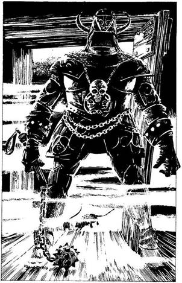
A szobát homok árasztja el, és egy kőlap ereszkedik a bejárat elé. Hatalmas dörrenéssel csapódik az ajtónak, aztán minden elcsendesedik. Most már csak előre mehetsz! Lapozz a 120-ra.
90.
Rád parancsol, hogy hagyd el a falut és soha többé ne térj vissza. Útbaigazít észak felé, Semmi Istenének régi templomához. Ez az az Isten, aki a világra szabadította szörnyű ivadékait, a Semmi Fiait, avagy az Üresség Fiait. Megköszönöd neki és sietve távozol. Miután mögött hagytad a falut, elindulsz az Égigérő felé. Lapozza 14-re.
91.
Mélyen alszol és álmot látsz. A Keresztes Lovag jelenik meg előtted, akivel a Hasadékban találkoztál. Mintha tanácsot akarna adni. A ragyogás, amit a kardján láttál, most őt övezi glóriaként. Arra buzdít, hogy keresd a Tolvajok Klánjának a segítségét, de ugyanakkor megjegyzi: - Bánt, hogy azt kell tanácsolnom, hogy ilyen alakokkal állj össze. A Vörös Sárkány Fogadóban találod őket. Mindenesetre ők segíthetnek visszaszerezni a Talizmánt, Fell-Kyrinla templomából, ahol most van. - Hirtelen az álom már szinte valóságnak tűnik, és a Lovag felkiált: - Ébredj! Ébredj! Komoly veszélyben van az életed! - Felébredsz, körülötted minden csendes. A hold fényében látod, amint párafoszlányok kúsznak be az ajtórésen. Egyszer csak kivágódik az ajtó. Ködtakaró lepi el az istállót és egy nehézpáncélos lovag lép be. Páncélja éjfekete, kezében szöges buzogány. Felcsapja sisakrostélyát, és a hajad égnek áll, mert a sisakban semmit sem látsz. Mintha a poklok tüzét látnád. Kétségbeesetten
figyeled, amint fekete buzogányát a magasba emelve rád támad. Meg kell küzdened a Halállovaggal!
Halállovag ÜGYESSÉG 10 ÉLETERŐ 15
Ha az ÉLETERŐD 6-ra, vagy az alá csökken - lapozz a 193-ra. Ha legyőzted - lapozz a 62-re.
92.
- Ha nem bízol bennem, a magad útját kell járnod - mondja gorombán. - Ha elvesztettél valamit és azt vissza akarod szerezni, keresd meg a Tolvajok Klánját. Azok a jómadarak gyakran ülnek a Vörös Sárkány Fogadóban, a Hét Bűn utcájában. - Megköszönöd a tanácsát és összeszeded a holmidat. Ahogy elindulsz, még utánad szól: - És többé ne gyere vissza, mert csak bajt hozol rám. - Továbbmész, és azon töprengsz, vajon nem követtél-e el hibát, hisz talán a segítségedre lehetett volna. Átnézed a felszerelésedet és meglepetten veszel észre egy soha nem látott erszényt, amelyben Öt aranyat találsz. Ha a Vörös Sárkány Fogadó felé veszed az utadat - lapozz az 57-re. Ha Fell-Kyrinla temploma felé mész - lapozz a 221-re.
93.
A szél a pajzsod alá fúj, és épp hogy csak sikerül megragadnod a szélét. Rárontasz a Sárkányra, mielőtt az újra varázsolhatna. Lapozz a 382-re.
94.
Legyőzted a Griffet. Az mélyen meghajol előtted, és legnagyobb meglepetésedre megszólal - Kegyelmezz, és én cserébe oda viszlek, ahová csak akarod. - Azt mondod, hogy vigyen a fennsíkra - lapozz a 86-ra. Ha ott hagyod és elindulsz gyalog délkeletnek - lapozz a 287-re.
95.
A Kapitány gúnyosan rád mosolyog és megszólal - Rendben van, hős harcos, boldogan teljesítjük a kérésedet! Ma este a vezérünkkel, Hawkanával vacsorázhatsz. Ülj föl Elvira mögé! - mondja és az egyik fiatalabb nőre mutat. A többiek halkan kuncognak, aztán a Kapitány megszólal: - Először azonban add át a fegyveredet! - Lapozz a 142-re.
96.
Támadása meglep, és hatalmasat sújtasz rá. A dühtől és a fájdalomtól sziszegve támad rád félelmetes karmaival. Meg kell küzdened a Halál Szolgájával! Amikor eltalál, minden alkalommal elszív egy keveset az életerődből, ezért a szokásos 2 ÉLETERŐ ponton túl még 1 ÜGYESSÉG pontot is veszítesz!
Halál Szolgája ÜGYESSÉG 7 ÉLETERŐ 5
Ha legyőzted - lapozz a 175-re.
97.
Abba a gótikus épületbe jutottál, amelyet az útról láttál. Ez a Halál temploma és most épp egy hatalmas gyülekezet tart vallásos szertartást. Több száz fekete csuklyás alak térdel imádkozva a sötét boltívek alatt. A fekete gyertyák fényében látod, hogy nem egy közülük már találkozott a Halállal. Gyorsan magadra teríted az egyik köpenyt, amit a bejáratnál találsz. Az orgona hangos, gyászos dallamára Somnus, a főpap elkezdi a szertartást. Kezelt a magasba emeli és gyászos könyörgésbe kezd. Hangját csak úgy visszhangozzák a csarnok falai. Az oltárt vörös fény árasztja el, és fortyogó vérrel teli fantom-tó jelenik meg. A tóból hat kísértet emelkedik ki, mindegyik lovon, hátukon a gonosz palástja. Csak úgy csorog a vér róluk, amikor fekete pokolparipáikon a padsorok közé léptetnek. - Megbízlak benneteket, Halál Eszközei, hogy szerezzétek vissza a Talizmánt! - kiáltja Somnus. A rég elhalálozott lovagok egyszerre felelnek, hangjuk évszázadok gyűlöletétől érdes. - Úgy legyen! - A gyülekezeten félelemmel vegyes tisztelet moraja fut végig. Észreveszed, amint az egyik lovag a templom végébe megy, s ott, miután egy sisakot tesz a fejére, nyomban eltűnik. Mit teszel?
A gyülekezet közé vegyülsz és
letérdelsz? Lapozz a 157-re.
Kirohansz az ajtón? Lapozz a 188-ra.
A fejedre teszed az egyik
sisakot? Lapozz a 165-re.
98.
Mindent elmondasz neki, ő pedig egyre jobban elcsodálkozik. Bemutatkozik, a neve Apothecus, a történelem tudományának mestere. - Hallottam már a Haláltalizmánról. Mindenáron vissza kell szerezned! - mondja és azt javasolja, hogy a Tolvajok Klánjához fordulj segítségért, mert egyedül nincs sok esélyed. - Most Fell-Kyrinla templomában van, erre mérget veszek. Hawkana, a Főpapnő minden bizonnyal ott rejtegeti. Menj a Vörös Sárkány Fogadóba. A Hét Bűn utcájában találod. Elég veszélyes hely, de ott találkozhatsz a tolvajokkal. - Finom palacsintával kínál reggelire és meghív, hagy vacsorára is tarts vele. Akkorra talán már többet is tud segíteni. - Fogd ezeket - mondja és átnyújt öt aranytallért és egy aranygyűrűt. - Ez a gyűrű mágikus erejű, ha az ujjadra húzod, sokkal ügyesebb leszel. - Amíg a gyűrűt viseled, adj 1-et ÜGYESSÉG pontjaidhoz! Mikor elindulsz, egy nefrit rózsát ad neked és így szól: - Este amikor visszajössz, hozzám, mutasd fel ezt a rózsát és én tudni fogom, hogy te vagy az, s nem valami alakváltoztató. - Megköszönöd a segítségét és utadra indulsz. Ha a Vörös Sárkány Fogadóba mész - lapozz az 57-re. Ha a templom felé veszed az utadat - lapozz a 221-re.

99.
Továbbmész a fal mentén, és legnagyobb megkönnyebbülésedre megtalálod a hátsó kiskaput. Kibújsz rajta az éjszaka sötétjébe. Nyersz 1 SZERENCSE pontot, mert sikerült kijutnod a városból. Lapozz a 8-ra.
100.
A Pap eléd lép és a következő történetet meséli el neked. - A Talizmánt a Halál istenének szolgái készítették réges-rég, a Végzet Rúnáinak városában, hogy ha majd eljön az idő, megidézhessék Istenüket erre a világra. Ez az Idő most jött el! Ha a Halál megjelenik itt, az élet megszűnik. Csak a Halál Szolgái maradnak meg undorító félholt állapotukban. A Halál szürke árnyként fog Orbra telepedni. Minden porrá válik, és a természet rendje felborul. Serakub Bölcsei, akik szent életű emberek, azon igyekeznek, hogy megállítsák a szörnyű pusztítást. Elküldtek egy csapatnyi Keresztest, hogy megszerezzék a Talizmánt, de csak mi négyen maradtunk életben. A Halál Szolgáinak Csontváz Királya a Hasadék mélyén rejtette el a Talizmánt. Mi azonban behatoltunk ide, a gonoszok fészkébe, és megszereztük. - Ekkor egy
nyakláncot húz elő a köpenye alól. A láncon obszidián korong függ, a közepén rubinkoponyával - a Haláltalizmán! Feléd nyújtja és így szól: - Tessék! Orbra kértek, fogd azt a Talizmánt és folytasd a küldetésünket! Megsemmisíteni nem lehet, de ha sikerül elvinned a saját világodba, akkor a Csontváz Király többé nem szerezheti meg!
Meghat ezeknek az embereknek a bátorsága és önzetlen állhatatossága, ezért megfogadod, hogy folytatod a küldetést. Átveszed tőlük a Talizmánt, és a nyakadba akasztod. Hideg és nehéz. A Varázsló feléd fordul, majd így szól: - Most varázshatalmammal kijuttatlak a felszínre. Indulj nyugatnak és menj, míg el nem éred az Ingoványi Szürkecéheket, a tudás városát. Ott majd megtudod, miként juthatsz vissza a saját világodba. Kérlek, ne hagyj cserben minket! Fogd ezt az aranyat, lehet, hogy még hasznát veszed! - Egy pénzeszacskót nyújt át neked, melyben 10 aranytallér van. Miközben a Varázsló a varázsigére összpontosít, különböző lények özönlenek be a barlangba. Lapozz a 125-re.
101.
A Kapitány és a csapat többi tagja nevetni kezd rajtad. Aztán a Kapitány fejét hátraszegve, csípőre tett kézzel feléd fordul és így szól: - Add ide a kardod és ülj föl Elvira mögé a lóra! El kell vinnünk téged Szürkecéhekbe! - Ha átadod a kardodat - lapozz a 155-re. Ha nem vagy hajlandó lemondani a fegyveredről - lapozz a 142-re.

102.
A pincében összegyűlt kétes külsejű alakok mogorva tekintete szegeződik rád. - Én aztán igazán nem tudhatom. Miért nem őket kérded? - mondja a csapos, aztán nem szól többet hozzád. - Na, gyerünk, kérdezz meg minket! - mondja fenyegetően az asztalnál ülők egyike. Lapozz a 280-ra.

103.
Az utolsó pillanatban gurulsz át, mögötted egy hatalmas szikla zuhan le. Robaja még sokáig visszhangzik. Egy hajszálon múlt, hogy nem kerültél alá. Tovább indulsz a folyosón, és nemsokára egy sötét vasajtóhoz érsz. Halványan foszforeszkáló betűkkel egy üzenetet festettek rá: - „Csak egyet olvashatsz el!“ - Kitárod az ajtót, amely egy háromszögletű szobába nyílik. A szoba minden falában egy-egy vasajtó van, a szoba közepén pedig három kőpillér áll. Az egyik háromszög, a másik henger, a harmadik négyzet alakú. Mit teszel?
Kimész az egyik ajtón a
szobából? Lapozz a 339-re.
Megvizsgálod a háromszög alakú
kőpillért? Lapozz a 290-re.
Megvizsgálod a henger alakú
pillért? Lapozz a 321-re.
Megvizsgálod a négyzet alakú
pillért? Lapozz a 345-re.

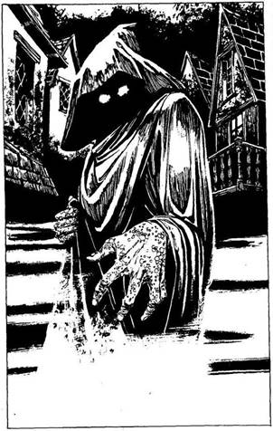
104.
Folytatod az utad a Kovács után. Errefelé nincsenek üzletek, az utca néptelen, csupán egy görnyedt, csuklyás, koldus kinézetű alakot látsz. Odamegy hozzád és kiegyenesedik. A csuklyája alatt semmi sincs - arc helyett csupán két izzó széndarabot látsz a sötétben. Ijedtséged rémületbe csap át, amint a kísérteties alak halk, sziszegő hangon megszólal: - Azt hiszed, el tudsz szaladni a Halál elől? Add ide a Talizmánt! - mondja, feléd nyújtja fekete kesztyűs kezét. Ha azt feleled, hogy a Talizmán már nincs nálad - lapozz a 81-re. Ha azonnal megtámadod ezt a borzalmas alakot - lapozz a 96-ra.

105.
Az utolsó pillanatban sikerül elugranod, de még így is megcsap a forró levegő. Vesztesz 3 ÉLETERŐ pontot! Ha még életben vagy, az alábbiak közül a következő Felszerelési Tárgyak egyikét használhatod, ha bármelyik nálad van.
Egy fiolát a Gyorsaság
Gőzeivel. Lapozz a 76-ra.
Az Egyszarvú szarvából készült
Amulettet. Lapozz a 87-re.
A Gyötrelmes Végzet
Tekercsét. Lapozz az 59 - re.
Ezek közül egyiket sem. Lapozz az 50-re.
106.
A varázsló kék, zöld és rózsaszín füstfelhőt varázsol, amely beborítja a közönséget. Míg az előadást nézed, Tyucsev, akit a Vörös Sárkány Fogadóból ismersz, kilép az árnyékból és eltűnik a füstben. Mire a füst eloszlik, sem őt, Sem a szürke ruhás varázsiót nem látod sehol, az emberek pedig hangos köhögések közepette lopással vádolják egymást. Rögtön rájössz, hogy a varázsló Tyucsev cinkosa. Amikor megfordulsz, hogy elindulj, egy szolgába botlasz, aki ezüsttálcát dug az orrod alá. A tálcán aranyozott névkártyát látsz, amelyen az áll, hogy Mortphilio meghív egy italra. - Erre parancsoljon - mondja a szolga. Megkérdezed, ki az a Mortphilio. - A város egyik elöljárója - válaszolja, de többet nem hajlandó mondani. Ha vele mész - lapozz a 144-re. Ha elutasítod a meghívást - lapozz a 83-ra.
107.
Az ellenkező irányba indulsz tovább. A lábad igencsak fáj, ahol a csapda megsebezte, de fogadót sehol sem látsz. Képtelen vagy rá, hogy továbbvonszold magad. Bár hideg van, lekuporodsz a földre egy sikátorban, és elalszol. Ébredésed nem mondható igazán kellemesnek, ugyanis egy hatalmas Ogre kezében találod magad, aki az orra előtt lóbál a levegőben. Gonoszul rád mordul, fejedet a falhoz vágja és ledob. Vesztesz 2 ÉLETERŐ pontot! Ha még életben vagy, meg kell küzdened vele.
Ogre ÜGYESSÉG 8 ÉLETERŐ 10
Ha legyőzted - lapozz a 74-re.
108.
Felriadsz álmodból. Hajnalodik. Visszanyersz minden ÉLETERŐ pontot, amit a szellemek világában vesztettél, miközben Hawkanával harcoltál. Mivel azonban úgy érzed, mintha végigharcoltad volna az éjszakát, álmod nem gyógyító erejű. Összeszeded a holmidat és továbbmész. Lapozz a 326-ra.

109.
Lelked lágyan lebeg a Halál Völgye felé. Alant, ameddig a szem ellát, szélfútta, jellegtelen síkság terül el.
A holtak lelkei itt bolyonganak céltalanul, magányosan. Már éppen elérnéd a Völgy szélét, amikor az éteri szél hirtelen felkapja a lelkedet és tovaröppenti. Hamarosan két alak társaságában találod magad, akik megidéztek ebbe a fantasztikus, mágikus világba. A színes ruhás, szem nélküli szólal meg: - Még nincs minden veszve! - Megérted a szavait anélkül, hogy hallanád őket. - Ha a lelked hajlandó rá, újra testet ölthetsz, és mi visszafordítjuk az idő kerekét. Ekkor egy másik lény szólal meg: - Ha kívánod, visszaküldelek az időben, és újra ott lehetsz a Hasadék kijáratánál. - Visszamész az időben és megpróbálod újra teljesíteni a küldetésedet? Ha igen, a lény a válladra teszi a kezét. Mindketten eltűnnek. Újra élsz! Sebeid
begyógyultak, hátizsákodban 10 adag Élelem van. Csak azok a Felszerelési Tárgyak vannak nálad, amelyekkel az utadat elkezdted, meg a Halál Talizmán, ha előzőleg elvesztetted is. Minden egyéb, amit utad során szereztél, elveszett, ezért húzd ki a Kalandlapról! ÜGYESSÉGED, ÉLETERŐD és SZERENCSÉD visszaállt a Kezdeti értékre. Hirtelen újra Orb felszínén vagy! Lapozz a 125-re.

110.
- Segítek neked, ember, mert te is segíthetsz nekem - szólal meg a Disznófő. - Az Égigérő hegyen egy ősöreg Vörös Sárkány tanyázik. Ő a kapuk őrzője. Legutóbb, mikor felébredt - még gyermekeim születése előtt - romba döntötte a falvainkat. El kell pusztítanod, még mielőtt átléphetnél a kapun. A Sárkány tüzet okád, amit senki nem bír ki, hacsak nem sárkánypikkelyekből készült pajzs védi. - Búcsúzóul átnyújt neked egy bedugaszolt fiolát. A fiolában a Borostyánfenyő Gyantája van, amellyel összeragaszthatod a pajzsot. Meg- hívnak vacsorára, ahol mangót, diót és különféle déligyümölcsöt esztek. Nyersz 2 ÉLETERŐ pontot! Aztán köszönetet mondasz és elindulsz. Hosszú mászás után egy kénbűzös barlangnyíláshoz érsz - ez a Sárkány tanyája! Úgy döntesz, bemész. Lapozz a 7-re.
111.
Az Orkok, amikor látják, hogy egymagad legyőzted a vezérüket, hanyatt-homlok menekülni kezdenek. Te a domb túlsó oldalán futsz le. Alattad mély, páfrányok borította völgy terül el. Úgy döntesz, hogy arra mész tovább, hátha elkerülöd az Elfeket. Lapozz a 203-ra.
112.
A szél a pajzsod alá fúj, kirántja a kezedből, és legnagyobb rémületedre a szakadékba sodorja. A Sárkány felnevet és nagyot fúj rád. Terjedelmes tüdejéből hatalmas lángok csapnak ki. Pusztító erejű tűz vesz körül és szénné égsz! Lapozz a 43-ra.
113.
Átlépsz a földön fekvő őrön, kinyitod a nagy, kétszárnyú ajtót és belépsz a templom Belső Szentélyébe. Egy magas, hollófekete hajú nő, Hawkana, a Főpapnő imádkozik az oltárnál, amelyen ott fekszik a Haláltalizmán. Az oltár mögött az istennő óriási méretű, páncélinget viselő márványszobra áll. Arcán gonoszság és kegyetlenség tükröződik. Hawkana feláll és feléd fordul. Hasonlít a szoborra, rajta is fekete páncéling van. Lapozz a 222-re.
114.
A Pap odalép hozzád és a következő történetet meséli el neked:
- A Talizmánt a Halál Istenének szolgái készítették, réges-régen, a Végzet Rúnáinak városában, hogy ha majd eljön az idő gonosz terveik megvalósítására, megidézhessék Istenüket erre a világra.
Ez az idő most jött el! Ha a Halál megjelenik itt, az élet megszűnik! Csak a Halál Szolgái maradnak meg undorító félholt állapotukban. A Halál szürke árnyként fog Orbra telepedni. Minden porrá válik, és a természet rendje felborul. Serakub Bölcsei, akik szent életű emberek, azon igyekeznek, hogy megállítsák a szörnyű pusztítást. Elküldtek egy csapatnyi Keresztest, hogy megszerezzék a Talizmánt, de csak mi négyen maradtunk életben. A Halál Szolgáinak Csontváz Királya a Hasadék mélyén rejtette el a Talizmánt. Mi azonban behatoltunk ide, a gonosz fészkébe, és megszereztük. - Ekkor egy nyakláncot húz elő a köpenye alól. A láncon egy obszidiánkorong függ, a közepén rubinkoponyával - a Haláltalizmán! Feléd nyújtja és így szál: - Tessék! Orbra kérlek, fogd ezt a Talizmánt és folytasd a küldetésünket! Megsemmisíteni nem lehet, de ha sikerül elvinned a saját világodba, akkor a Csontváz Király többé nem szerezheti meg!
A hipnotikus varázs kötelez: minden porcikáddal a küldetésre koncentrálsz. A Talizmánt a nyakadba akasztod. Hideg és nehéz. A Varázsló feléd fordul és így szól: - Most varázshatalmammal kijuttatlak a felszínre. Indulj nyugatnak, míg el nem éred az Ingoványi Szürkecéheket, a tudás városát. Ott majd megtudod, miként juthatsz vissza a saját világodba. Kérlek, ne hagyj cserben minket! Fogd ezt az aranyat, lehet, hogy még hasznát veszed! - Egy pénzeszacskót nyújt át neked, melyben 10 aranytallér van. Miközben a Varázsló a varázsigére összpontosít, különböző lények özönlenek be a barlangba. Lapozz a 125-re.
115.
Lábujjhegyen lopakodsz a Sárkány felé. Orrlikai kitágulnak, hatalmas, sárga szeme felpattan és mereven rád bámul. Mit teszel?
Kirohansz a barlangból, és amilyen gyorsan csak
tudsz, felszaladsz a hegyre? Lapozz a 335-re.
Ottmaradsz? Lapozz a 170-re.
Visszarohansz és földeríted a szűk
oldalfolyosót? Lapozz a 22-re.
116.
Tovább vánszorogsz, miközben rád nehezedik a súlyos, szürke égbolt. A Talizmán úgy húzza a nyakadat, mintegy malomkő. Végre megpillantod a fennsík körvonalait, de ez sem űzi el idegességedet. Szürkületkor tábort versz és az éjszaka sötét leple borul rád. A kimerültségtől mély álomba zuhansz. Álmodban újra Hawkana jelenik meg előtted, de körvonalai ködösek és elmosódottak. Megint hív: az űr, amely elválaszt tőled, sem nem tér, sem nem idő. Érzed, amint elindulsz felé és körülötted minden ködössé, éterivé válik. A Halottak Völgyének szélére csábított. Meg kell küzdened vele.
Hawkana lelke ÜGYESSÉG 10 ÉLETERŐ 12
Ha legyőzted, lapozz a 108-ra. Ha elveszted ezt a harcot a szellemek világában - lapozz a 23-ra.
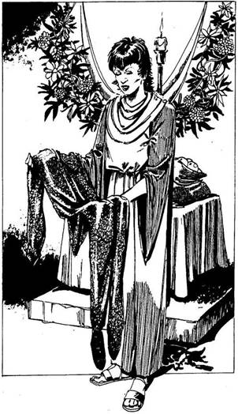
117.
Kis füves téren vágtok át a Papnővel. A tér túloldalán gyönyörű, emeletes templom áll, tetején csodás függőkert. Miközben beléptek a széles, zöld ajtón a két őr között, fejetek felett tarka tollú madársereg húz el. Virágokkal díszített, hosszú csarnokba értek. Mindketten letérdeltek a gabonával és gyümölcsökkel megrakott oltár előtt. A nő minden élőlényért imádkozik. Néhány percnyi elmélkedés után kézen fog és a csarnok végében lévő kis szobába vezet. Kis asztalán ezüstös páncélinget pillantasz meg. - Mindenek Anyja beszélt nekem a küldetésedről - mondja Lillantha. - Azt kívánja, hogy ezt vidd magaddal. Segítségedre lehet. - Megköszönöd neki és felöltöd a csodálatosan könnyű páncélinget. Nyilvánvaló, hogy mágikus erejű - nyersz 1 ÜGYESSÉG pontot! - Még valami - teszi hozzá Sietve Lillantha. - Minden vasárnap este, és az azt követő három napon át Mindenek Anyja követői őrzik a kapukat. Ha úgy akarsz elmenni a városból, hogy azt mások ne tudják meg, ezeken a napokon menj. - Köszönetet mondasz neki és a templom békéjét elhagyva visszatérsz a Raktár utca forgatagába. Lapozz a 130-ra.
118.
A Sárkány varázslatának hatalma alá kerültél. Kényszerít, hogy indulj el a kapu felé. Ahogy közelebb érsz, megszólal: - Ti közönséges halandók, olyan hiszékenyek vagytok! - Rád ugrik és cafatokra tép. Lapozz a 43-ra.

119.
- Általában sikerül - mondja - , bár legutóbb is sok fejtörést okozott, hogy miként ragadjam a kezembe a gyeplőt. - Elmond neked egy történetet Heimdolról, a Hatalmasról. Szavaiból úgy tűnik, hogy Heimdol volt az egyik Legerősebb és legkellemetlenebb alak, aki valaha is sört vedelt a Vörös Sárkányban. Egy napon megjelent egy Tyucsev nevű idegen, és elfogadta a kihívást egy szkander-mérkőzésre. Heimdol életében először veszített. Dúlt-fúlt, és szörnyű bosszút esküdött. Néhány napra rá Tyucsev visszatért, szándékosan belekötött Heimdolba és két barátjába. A harc elkerülhetetlen volt. Tyucsev mindannyiukat megölte, és monogramját Heimdol homlokára karcolta. - Anarchilban, az őrült káosz Istenében hisz. Azóta senki sem mert kikezdeni vele, pedig ide csupa tolvaj és gyilkos jár. - Úgy döntesz, ideje, hogy bemutatkozz a tolvajoknak, és elindulsz az asztaluk felé. Lapozz a 280-ra.

120.
Továbbindulsz a folyosón és nemsokára egy sötét vasajtóhoz érsz. Halványan foszforeszkáló betűkkel egy üzenetet festettek rá: „Csak egyet olvashatsz el!” Kinyitod az ajtót, és egy jókora, háromszög alakú szobába lépsz be. A szoba minden falán egy-egy vasajtót látsz, középen pedig három
kőpillért. Az egyik háromszög, a másik henger, a harmadik négyzet alakú. Mit teszel?
Kimész az egyik ajtón? Lapozz a 339-re.
Megvizsgálod a háromszög alakú
pillért? Lapozz a 290-re.
Megvizsgálod a henger alakú
pillért? Lapozz a 321-re.
Megvizsgálod a négyzet alakú
pillért? Lapozz a 345-re.

121.
Újra elalszol, és csak az istállóba betűző késő délelőtti napsugár ébreszt fel. Nyújtózol egyet és ekkora szalma közt hirtelen valami hideg tárgy akad a kezedbe. Egy aranypénzt találtál, amit zsebre is teszel, mielőtt elindulnál. Ha most befordulsz az egyik mellékutcába, amely a Hét Bűn utcájához vezet, és a Vörös Sárkány Fogadó felé veszed az utadat - lapozz az 57-re. Ha nem akarsz tolvajok közé keveredni, és megpróbálod egymagad visszaszerezni a Talizmánt a templomból - lapozz a 221-re.
122.
Elfogadják a rubinkövet és hangos horkantások közepette hajlongva mutatják ki nagyrabecsülésüket. Barátságosan taszigálnak a falujuk felé. Ha megköszönöd, de elhárítod a szíves invitálást - lapozz a 14-re. Ha elkíséred őket a faluba - lapozz a 72-re.
123.
A Végzet Rúnái városának említésére a harcosnők fennhéjázása alábbhagy. A Kapitány összevonja a szemöldökét és elgondolkodik. Néhány fiatalabb nő szemében félelem csillan. Aztán a Kapitány megköszörüli a torkát és megszólal: - El kell vinnünk téged Szürkecéhekbe, Hawkanához, az őrség Főparancsnokához. Lapozz a 152-re.

124.
Az őrök visszajönnek és minden irányból megtámadnak. Hősiesen küzdesz, de nagyon nagy a túlerő. Nemsokára legyőznek és megölnek. Lapozz a 109-re.
125.
Sötét Elfek és Barlangi Trollok törnek be a terembe, és megtámadják a lányt. A Lovag és a Pap rögtön a segítségére sietnek. Ezzel egyidőben a háttérben az Elfek és Trollok özöne fölött egy hatalmas árnyalakot fedezel fel. A lovag csillogó kardja rendet vág az ellenség soraiban, de a Sötét Elfek varázslathoz folyamodnak, és a Pajzsos lány képtelen visszaverni a támadásukat. Holtan rogy össze az előrenyomuló ellenség rohama alatt. Mielőtt a varázsló befejezné a varázslást, még hallod, amint a hatalmas szörnyeteg diadalittasan felüvölt. Lapozz a 185-re.

126.
Az est leszálltával elindulsz az Ingoványi kapu felé, abban reménykedve, hogy azt most Mindenek Anyjának követői őrzik. Amint kiérsz a Raktár utcából, egy alak lép ki eléd az árnyékból. Arcát csuklya fedi, de a díszes, tüskés páncélról és a kezében tartott fekete pengéjű [kardról azonnal rájössz, hogy ez egy Sötét Elf. Talán azok közül való, akik megtámadták a Hasadékban Kereszteseket, és most valahogy beosont a városba. Némán odalép hozzád és megsuhintja a kardját. Meg kell küzdened vele!
Sötét Elf ÜGYESSÉG 8 ÉLETERŐ 8
Ha legyőzted, lapozz a 249-re.
127.
Továbbvonszolod magad a vadonban. De most a madarak éneke üresnek hat és a halál előérzete kísért, amint Ott botorkálsz, mintha ébren álmodnál. Mikor leszáll az est, tüzet raksz és fáklyákkal veszed körül magad. Képtelen vagy elaludni, csendben vársz és hallgatózol. A Talizmán egyre nehezebb tesz. Nemsokára ismét felhangzik a nyerítés, amely tegnap is megzavarta az álmodat, és megtöri az éjszaka csendjét. Újra és újra hallod a vérfagyasztó hangot. Legnagyobb rémületedre kisvártatva hat izzó szemű, lángoló orrlikú, rémálomszerű ló jelenik meg, hátukon egy-egy életgyűlölő gonosz kísértettel. Félkörbe állnak és mereven rád bámulnak. Egyszerre szólalnak meg érdes hangjukon. - Mi a Halál eszközei vagyunk. Azért jöttünk, hogy elvigyünk urunkhoz és visszaszerezzük neki a Talizmánt. - A tábortűz túlsó oldalán állnak, de lovukkal átugratják a tüzet. Megtámadnak és érzed, amint életerőd elhagy. Olyanná válsz, mint ők, árnyéka leszel csak az életnek, és mindörökre gyűlölni és irigyelni fogod az élőket.

128.
Magadra hagynak. Csodálkozol, hogy a város őrei hogyan tehetnek olyan kegyetlenek, hogy egy ártatlant ilyen kellemetlen helyzetben hagyjanak. Lázasan nekiesel a csapdának, mielőtt még valami gonosztevő csak úgy szórakozásból elvágná a torkodat. Halk léptek közelednek. Hátranézel a vállad fölött, és látod, hogy egy ember közeleg. - Várj - szólal meg - , majd én segítek neked kiszabadulni a csapdából. - Rálép a nyitó kallantyúra, amit te nem értél el, és a csapda kinyílik. Kiszabadulsz és együtt indultok tovább. - Van már szállásod éjszakára? - kérdezi, és oldalról rád sandít. - Talán felajánlhatnám szerény lakomat? - Kíváncsi vagy, vajon miért járkál ez az ember éjszaka egyedül az utcán, de túl fáradt vagy ahhoz, hogy kérdezősködj. Ha elfogadod a meghívást és elmész hozzá - lapozz a 143-ra. Ha visszautasítod az ajánlatát - lapozz a 107-re.
129.
Hamarosan rájössz, hogy a Sárkány el akar bájolni, és már tudod, hogy egy Sárkánnyal sosem szabad beszélgetni. Rárohansz, hogy megtámadd. Lapozz a 382-re.
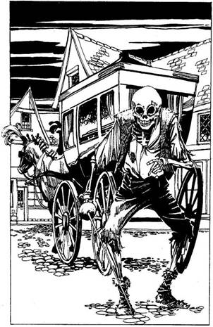
130.
Ismét a Raktár utcában sétálsz és látod, hogy az üzletek már zárnak. A hazafelé tartó tömeg hirtelen szétválnak, hogy utat engedjen egy nagy fekete hintónak, amit két fekete kanca húz. A lovak fejét fekete tollbokréta díszíti. A csuklyás kocsis mereven maga elé néz. Oldala lépsz a csatornába, hogy utat adj, de a kocsis megrántja a gyeplőt. A hintó belsejében egy üres fekete koporsót látsz, de a fedelén ezüstös betűkkel a te neved olvasható. A halottaskocsi ajtaja kinyílik és egy elegáns férfi lép ki belőle, kezében ezüst sétapálca. Ruhája a legfinomabb ezüstszaténból készült, vállára cobolyrém simul. Az egyik árus üdvözli, s ő mosolyogva biccent feléje. - Én a Halál követe vagyok, és a Talizmánért jöttem - mondja vészterhes hangon. Miközben védekezni próbálsz, a férfi riasztó átalakuláson megy át, de az emberek ügyet se vetnek rá. Drága szőrméi rongyokká válnak. Megnyerő, kék szemű arca fekete, repedezett koponyává változik, melyből sötét, üres szemgödrök tekintenek rád. Csontvázkezében fényevesztett vívótőrt tart. Rádöbbensz, hogy senki más nem látja ezt az átalakulást, csak te. - Add ide - mondja. Mit teszel?
Odaadod a Talizmánt (ha nálad
van)? Lapozz a 179-re.
Azonnal megtámadod? Lapozz a 271-re.
Letagadod, hogy nálad van? Lapozz a 220-ra.
131.
Rájössz, hogy nem maradhatsz a Tudóssal, és elindulsz, hogy szállást keress éjszakára. Lapozz a 28-ra.
132.
Lángok ölelnek körül. Szörnyű fájdalmat érzel, alig látsz valamit. Vesztesz 6 ÉLETERŐ pontot! Ha még életben vagy, felhasználhatod az alább felsorolt tárgyak egyikét, ha rendelkezel vele.
A Gyorsaság Gőzei. Lapozz a 76-ra.
Az Egyszarvú Amulett. Lapozz a 87-re.
A Gyötrelmes Végzet Tekercse. Lapozz az 59-re.
Ezek közül egyik sem. Lapozz az 50-re.
133.
Húzz ki egy adag Élelmiszert a Kalandlapodról. Amikor észreveszed, hogy sózott disznóhúst adtál nekik, már késő. A Disznóemberek megsértődnek. Röfögve követelik, hogy menj velük a falujukba. Ha elmész velük - lapozz a 365-re. Ha nem - lapozz a 172-re.

134.
Elindulsz a sziklás terepen át a dombok felé. Kisvártatva két feléd tartó fegyveres csapatot veszel észre. Délről egy csapat Ork üget feléd vicsorogva - legalább húszan vannak. Púposak, torzak, zsíros, elfeketedett bőröket viselnek, kezükben tűhegyes handzsárokat lengetnek. Pajzsukat egy-egy bíbor karom ékesíti. Északról egy kis csapat Sötét Elf
közeleg, olyasfélék, mint akik a Pajzsos lányt megölték. Magas, karcsú termetűek, díszes, tüskés páncélruhát viselnek, kezükben hosszú, fénytelen fekete pengéjű kard. Még elég messze vannak, de igen gyorsan közelednek. Mit teszel?
Az Orkok felé indulsz? Lapozz a 68-ra.
Az Elfek felé indulsz? Lapozz a 214-re.
A dombok közé rohansz? Lapozz a 63-ra.
Elbújsz? Lapozz a 148-ra.
135.
Ahogy mész az avarban, megreccsen egy gally a talpad alatt. A Sárkánygyík ekkor feléd fordítja a tekintetét, s a tested elnehezül. A bozótba veted magad, ahogy a bőröd kezd hamuszürkévé válni. Szerencséd volt, mert sikerült elkerülnöd a hatalmas hüllő kővé változtató tekintetét, de így is megsérült egy-két izmod. Vesztesz 1 ÜGYESSÉG pontot! Gyorsan utat vágsz a bozótban és magad mögött hagyod a lomha, ám mégis életveszélyes hüllőt. Nemsokára visszaérsz az ösvényre. Lapozz a 270-re.
136.
A háromszög alakú kőpilléren a felirat így szól:
Foglald el a majom helyét,
Balra veszély; a bálvány életre kel.
Amíg a különös üzeneten töprengsz, egy kis homok hullik a fejedre. Felpillantasz és látod, hogy a mennyezet megrepedt és óriási homoklavina indul meg. Visszhangzó csikorgással egy hatalmas kőtábla ereszkedik a kijárat elé. Egyetlen reményed,
hogy átugrasz az egyre szűkülő résen. Dobj két kockával! Ha a kapott összeg ugyanannyi vagy kevesebb, mint ÜGYESSÉG pontjaid száma - lapozz a 103-ra. Ha a kapott összeg nagyobb, mint ÜGYESSÉG pontjaid száma - lapozz a 215-re.

137.
Elkezded átkutatni a templomterem díszruháit. Hirtelen valami bizsergést érzel az ujjadon, majd éles fájdalmat. A kezedre nézel és látod, hogy Hawkana gyűrűje egyre kisebb lesz. Megpróbálod lehúzni, de már késő. A gyűrű golyóvá zsugorodik, és levágja az ujjadat. Vesztesz 1 ÜGYESSÉG és 2 ÉLETERŐ pontot! Érzed, hogy ez az Istennő bosszúja volt, ezért inkább úgy döntesz, hogy megpróbálod kinyitni az ajtót. Lapozz a 16-ra.

138.
Előveszed a Talizmánt és alaposan megvizsgálod. Derengő szöveget fedezel fel rajta, mintha csak a Halál szolgáinak közelségét jelezné: - „Én a Haláltalizmán vagyok. Az Arcnélküliek védelmeznek, akik viselőmet szolgálják.” Mikor leszáll az est, tábortüzet raksz, köré pedig fáklyákat állítasz. Nem tudsz aludni, csöndben fekszel és hallgatózol. A Talizmán egyre nehezebb lesz. A vad nyerítés, amely tegnap is megzavarta az álmodat, hamarosan újra felhangzik, megtörve az éjszaka csendjét. A távolban újra meg újra felhangzik a dermesztő hang. Kisvártatva rémülten veszed észre, hogy hat rémálomszerű ló jelenik meg, szemükből és orrlikaikból lángok csapnak ki, hátukon pedig egy-egy életgyűlölő, gonosz kísértet ül. Félkör alakban körülvesznek, és meredten bámulnak, majd rekedt hangon egyszerre szólalnak meg: - Mi a Halál eszközei vagyunk. Azért jöttünk, hogy elvigyünk urunkhoz és visszaszerezzük a Talizmánt! Mit teszel?
Megfenyegeted őket, hogy a tűzbe veted
a Talizmánt? Lapozz a 388-ra.
Megpróbálsz áttörni a gyűrűn? Lapozz a 164-re.
Megpróbálod a Talizmán hatalmát
használni? Lapozz a 46-ra.

139.
Odabent egy izmos ember dolgozik az üllőnél, a hátán verejték csillog. Éppen egy kardmarkolatot készít. Az egyik oldalon, a fal mellett lévő polcon sorakoznak a kész kardok. - Válassz egyet! Hét arany lesz - szólal meg anélkül, hogy felnézne. Ha akarsz, vehetsz egyet - lapozz a 160-ra. Ha akarod, megköszönöd az ajánlatot és továbbmész - lapozz a 104-re.

140.
Hallod a páncélok csörgését, ahogy egy csapatnyi őr elfut a függöny előtt, és felrohan a lépcsőn. Továbbmész lefelé, míg egy nagy, kétszárnyú ajtóhoz nem érsz. Egy őr ottmaradt. Elkiáltja magát és rád támad. Meg kell küzdened vele!
Templom őr ÜGYESSÉG 7 ÉLETERŐ 8
Ha öt Forduló után még él - lapozz a 124-re. Ha őt Forduló alatt legyőzöd - lapozz a 113-ra.

141.
Harg eltűnik, mielőtt a kalapács célba érne. - Nagyon ügyes! - szólal meg Thaum. - És ehhez mit szólsz? - Lapozz a 171-re.
142.
A Kapitány parancsára bezárul körülötted a lovasok gyűrűje. Kardot rántasz és sikerül egy nőt megsebesítened, még mielőtt minden oldalról megtámadnának. Kemény harcosok ezek, addig forgatják a kardjukat, amíg el nem kábítanak. Elejted a kardodat és a földre rogysz. Vesztesz 2 ÜGYESSÉG pontot! Ha szert teszel egy másik kardra, visszanyered ezeket a pontokat. Túl sokan vannak ahhoz, hogy ellenállj, ezért úgy döntesz, hogy azt teszed, amit mondanak, és felülsz Elvira mögé a lóra. Nem látszik túl boldognak, hogy egész úton Szürkecéhek felé ott fogsz ülni mögötte. Azzal vigasztalod magad, hogy így legalább biztosan jófelé mész. Lapozz a 257-re.

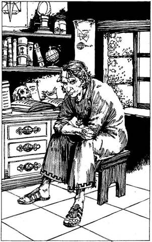
143.
Kis kőházhoz értek. A férfi betessékel a hálószobájába s egy szalmazsákra mutat, az egyik függöny alatt. Hálás vagy, hogy végre megpihenhetsz, így minden további kérdezősködés nélkül aludni térsz. Mély álomba merülsz, és visszanyersz 4 ÉLETERŐ pontot! Mikor felébredsz, látod, hogy vendéglátód ott ülés téged figyel.
- Remélem, kipihented magad. Beszéltél álmodban. - Rád mosolyog és megkérdi: - Talán segítségre szorulsz? Ellopott tőled valaki valamit? Hogy estél csapdába az utcán egyedül, éjszaka? - Ha elmondod neki a történetedet, és tanácsot kérsz tőle - lapozz a 98-ra. Ha inkább azt mondod, hogy nem válaszolhatsz - lapozz a 92-re.

144.
Fasorokon vezet végig a város ismeretlen részeibe. Előtted hatalmas, gótikus építmény, hegyes csúcsokkal, melyek körül denevérszerű szörnyek szobrai gubbasztanak. Mielőtt odaérnétek, a szolga egy közeli házba kalauzol. Követed a sötét előszobán keresztül a házba. A falak bambuszból vannak. Az egyik homályos sarokban egy embert veszel észre, tolókocsiban ül, teste nagy részét takarók fedik. A szolga meggyújt négy nagy fekete
gyertyát, aztán magadra hagy Mortphilióval. - Köszönöm, hogy eljöttél. Ritka eset, hogy olyasvalakit lássak vendégül, aki ennyire tele van életerővel.
- A hangja rekedt és nehezére esik a beszéd. A gyertyákból áradó füst elálmosít, de rögtön visszatér az éberséged, amint a kandallópárkányon megszólal egy emberi koponya: - Ez a bizonyos ember, mesterem! Mortphilio parancsára a koponya felemelkedik és árnyszerű szárnyain feléd lebeg! - Öld meg! - szól a halottidéző és a koponya állkapcsát csattogtatva rád támad. Meg kell küzdened a Szárnyas Koponyával!
Szárnyas Koponya ÜGYESSÉG 7 ÉLETERŐ 6
Ha legyőzted, lapozz a 396-ra.
145.
- Ezt meg hogy érted? Talán azt akarod mondani, hogy mi tolvajok vagyunk? - szólal meg a Sebhelyes. Különös él van a hangjában, társai közt is nagy a feszültség. Ketten a tőrükre csúsztatták a kezüket. Mit teszel?
Buzgón tagadod? Lapozz a 272-re.
Azt mondod, tolvajok? Lapozz a 281-re.
Tudomást sem veszel a kijelentéséről, és azt
mondod, hogy értékes információd van a
számukra? Lapozz a 246-ra.
146.
A Sárkány tüzet okád rád. Hatalmas tüdejéből csak úgy áradnak a lángok. Pillanatokon belül szénné égsz. Lapozz a 43-ra.
147.
Elbújsz egy bokorban, és onnan figyeled a tisztást. A Druida kisvártatva újra megjelenik előtted. - Mivel Úgy döntöttél, hogy jelenléteddel tovább gyalázod a Szent Ligetet, arra kell gondolnom, hogy nem is akarsz elmenni. - Mielőtt megmoccanhatnál, néhány különös szót mormol és a bokrok elkezdenek nőni körülötted. Indáik, melyekkel körülfonnak, meglepően kemények. Szilárdan tartanak. Könyörögsz a Druidának, hogy engedjen szabadon, de hasztalan minden szó. Három nap múltán a szomjúságtól kómába esel és soha többé nem ébredsz fel.
148.
Leugrasz a vízmosásba és elrejtőzöl egy kénes szagot árasztó sziklahasadékban, reménykedve, hogy a kavicsok, melyeket lábaddal elmozdítottál, nem fognak elárulni. Nemsokára meghallod a jellegzetes zihálást: az Orkok közelítenek, szimatolnak utánad. Az egyik hirtelen felkiált. Felfedeztek! Kikászálódsz a búvóhelyedről és kardot rántasz, de a rohamuk elsöpör. Egyikük leszakítja a pénzeszacskódat. Az érmék szanaszét repülnek. Az Orkok azonnal elkezdenek az aranyon veszekedni, és nem veszik észre, amint a vízmosás tetején megjelenik egy csapat Elf. Egyetlen szó nélkül őt Elf ront az Orkokra, és hála mágikus erőiknek, hamarosan végeznek velük. A lehetőséget kihasználva, felkapod a zacskódat, és a dombok közé menekülsz. Lapozz a 203-ra.
149.
Befordulsz balra, a Gyertyánfa utcába, a szenesvermet keresve. Egy rozoga raktár mögött megpillantasz egy szenespincét. Bebújsz és a szénkupac mögött egy lejáratot fedezel fel. Lemászol és rábukkansz a város alatt kanyargó keskeny átjáróra. Nemsokára egy ajtóhoz érsz; belököd. Fényűzően berendezett szobába lépsz - nyilvánvaló, hogy a Tolvajok Klánja nem szegény. Kisebb csoport várt már rád, a kanapékon heverve. Néhányukra ráismersz a Vörös Sárkány fogadóból, különösen arra, akinek a fülétől az álláig sebhely húzódik. Lapozz a 209-re.
150.
- Mi a Halál papjai vagyunk - mondja az egyik alak. - Azért jöttünk, ami a miénk. - Lefognak és megmotoznak. Miután rádöbbennek, hogy nincs nálad a Talizmán, hátrahőkölnek. Az egyik pofon vág. - Hova dugtad, te féreg? - Hirtelen paták csattogása zavarja meg a fenyegetőző papokat. Nagy csapat lovas közeleg fáklyákkal. A papok csendben beleolvadnak a sötétbe. Az őrség lovasai megállnak előtted. - Na, te jól benne vagy a pácban. De ez nem a mi gondunk, ugye lányok? - nagy nevetés tör ki, de te csöppet sem találod viccesnek, hogy ellovagolnak és téged itt hagynak a csapdában. Lapozz a 128-ra.
151.
Bámulnak rád, és nem tudhatod, hogy reagálnak majd mutogatásodra, sőt az sem biztos, hogy egyáltalán megértenek. Mit teszel?
Adsz nekik egy kis szárított húst, ha van még
nálad? Lapozz a 133-ra.
Odaadod a rubinkövet, ha nálad
van? Lapozz a 122-re.
Megtámadod őket? Lapozz a 172-re.
152.
Az őrjárat Kapitánya rád parancsol, hogy add át a kardodat, és ülj fel Elvira mögé a lóra. Az egyik fiatalabb nőre mutat. Ha engedelmeskedsz neki - lapozz a 155- re, ha nem - lapozz a 142-re.
153.
Rémülten veszed észre, hogy a lábad kilóg a függöny mögül. Amilyen gyorsan csak tudod, visszahúzod, de a léptek zaja épp előtted hal el. Női hang szólal meg: - Á! A patkány, egy ezüstért hal meg! - A függönyön keresztül a hasadba döfi a kardját. Pillanatokon belül meghalsz. Lapozz a 109-re.
154.
Napkeletkor újra nekiindulsz a síkságnak. A Talizmán óráról órára nehezebb. Rádöbbensz, hogy ez nem jelenthet mást, csak a Halál szolgálnak jelenlétét. Ha újból megvizsgálod - lapozz a 138-ra. Ha inkább rejtve tartod, nehogy az csalja ide őket - lapozz a 127-re.
155.
Elvira segít felülni. Egyáltalán nem látszik boldognak, hogy meg kell osztania veled a lovát. Csöndben lovagoltok keresztül a síkságon. Vesztesz 2 ÜGYESSÉG pontot, amíg nem teszel szert egy másik kardra. Lapozz a 257-re.
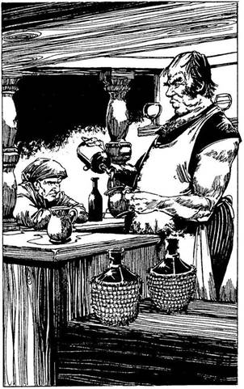
156.
Kiérsz a Hét Bűn utcájára és nemsokára megtalálod a Vörös Sárkány Fogadót. Lépcső vezet lefelé, és a füstös homályból rekedt nevetés hallatszik. Lemész és elindulsz arra, ahol egy kevéske fényt látsz. A székeket és asztalokat kikerülve a söntéspulthoz mész, amely mögött a jól megtermett fogadás áll. Nálad van a réztigris amulett? Ha igen, lapozz a 11-re. Ha nincs, lapozz a 3-ra.

157.
Letérdelsz a hívők közé. Egy aranyserleget adnak körbe, és a gyülekezet minden tagja iszik belőle. A szomszédod is jóízűt húz belőle, majd hozzád fordul. Az arca viaszfehér, de a szeme karmazsinvörös a vértől. Hosszú, hegyes szemfogairól vér csöpög. Feléd nyújtja a kupát, és neked is innod kell belőle. Emberi vér van benne, amit a Halál megátkozott. Megalvad a gyomrodban és ettől émelygés fog el. Vesztesz 4 ÉLETERŐ pontot. Ha még életben vagy, látod, hogy a kísértetek Somnusszal elindulnak a belső szentélybe, és a gyülekezet szétszéled. Sikerül észrevétlenül kijutnod az utcára, és a fekete köpenyt elhajítva nekiindulsz, hogy megkeresd a Tolvajok Klánját. Lapozz a 83-ra.
158.
Megkéred a tudósokat, hogy használják a varázserejüket. - Úgy látszik, itt valami nincs rendben - morogja Moreau bűntudattal. A varázslat nem működik. Szemed sarkából Ugyan látod, amint különböző mozdulatokat tesz, mintha varázsolna, de nem tud hatni a fenevadra. Meg kell küzdened vele életre-halálra. Lapozz vissza arra a pontra, amelyikről jöttél. Többször nem kérhetsz segítséget!
159.
Átvágsz a sűrű bozóton, áttörsz a dombon a másik oldalon elterülő sűrű erdő felé, ahol egy nyugatra vezető ösvényre találsz. Elég gyorsan haladsz, míg az egyik kanyar után meg nem pillantasz egy hatalmas, barna pikkelyes, nyolclábú hüllőt, amint épp a napon sütkérezik. Állkapcsa tele van tűhegyes fogakkal. Alszik. Ha el akarsz osonni mellette anélkül, hogy felébresztenéd: Tedd próbára a SZERENCSÉDET! Ha SZERENCSÉD van - lapozz a 267-re. Ha nincs SZERENCSÉD - lapozz a 135-re. Ha inkább nem kockáztatsz és átvágsz a sűrű bozóton, hogy kikerüld - lapozz a 384-re.

160.
Olyan kardot választasz, amelyik jól áll a kezedben. Szépen megmunkált fegyver, hasonló azokhoz, amilyeneket a harcosnők viselnek. Ha elvették a kardodat, visszakapsz 2 ÜGYESSÉG pontot. Fizetsz és távozol. Lapozz a 104-re.

161.
Mielőtt a vízbe mártanád a karodat, észreveszed, hogy a fűzről lecsöpögő nedv begyógyított egy kis karcolást a csuklódon. Rájössz, hogy gyógyító ereje van és úgy határozol, hogy gyűjtesz még belőle. Egy alkalommal, amikor úgy gondolod, hogy a legnagyobb szükséged van rá, felhasználhatod a Fűz Nedvét, és az 4 ÉLETERŐ pontot fog visszaadni neked. Elindulsz és úgy döntesz, hogy követed a kis folyót nyugat felé, a völgyön át. Lapozz a 39-re.

162.
- Mi a Halál papjai vagyunk - szól az egyik alak. - Azért jöttünk, ami a miénk! - Lefogják a kezedet és megmotoznak. A vezérük leszakítja a nyakadból a Talizmánt. - Megvan, testvéreim, megvan! - kiáltja diadalmasan. - Most már Urunk elfoglalhatja királyságát! - Hangosan örvendeznek, s nem veszik észre a közelgő lovascsapatot. - Állj, senki ne mozduljon! - hallatszik egy női hang. Az Őrség az. Az egyik pap gonosz kántálásba kezd. Látod, amint félelem söpör végig a nőkön és lovaikon. Némelyek nem tudják irányítani a lovukat, mások menekülnek, de a legbátrabbak hangos csatakiáltással a papokra rontanak. A támadás váratlanul éri őket. Néhányan a földre rogynak, másoknak sikerül olyan csendben elmenekülni, ahogy jöttek. A Talizmán a földre hullik, viselője menekülne, de hátulról halálos csapás éri - lefejezték. Az egyik őr veszi fel a Talizmánt és közli, hogy elviszi Fell-Kyrinla templomába. Megsarkantyúzzák lovaikat és elvágtatnak. Elvesztetted a Talizmánt! Keserűen szitkozódva fogadkozol: hogy ha innen kiszabadulsz, addig nem nyugszol, míg vissza nem szerezted. Lapozz a 128-ra.

163.
Biztonságban földet érsz a tolvajok mellett. A Sebhelyes meglepetten néz rád. - Véresszívű? - kérdezi. - Elesett, ti hitszegő kutyák! - válaszolod kardot rántva. Jemmy, a Patkány elmenekül a
háztetőkön át. Lord Min a Sebhelyesre néz és vállat von. - Én nem küzdök meg Hawkana legyőzőjével - mondja. Belendülnek az eresz alá és bemásznak egy nyitott ablakon, mint a pókok. Nem kívánod utánuk csinálni ezt a mutatványt, inkább visszamész a biztonságos házhoz a tetőkön át, s ott mászol le az utcára. Egy kicsit megállsz, hogy kifújd magad, mielőtt magad mögött hagynád a várost. Lapozz a 235-re.
164.
Az egyik rémálomszerű ló fejére sújtasz a fáklyával. A láng megremeg, de ezeket a közönséges tűz nem zavarja. A lovasok megsarkantyúzzák lovaikat, és rád támadnak. Csapásaik alatt úgy érzed, mintha életerődet szívnák el. Te is olyanná válsz, mint ők, örök árnyéklétre vagy kárhoztatva.
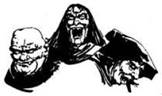
165.
Ahogy a sisak felé mész, a hivők utat adnak. Arcodat elrejted a fekete köpeny csuklyájában. A sisak, amely összefont ezüstpántokból készült, egy kis asztalkán hever. A fejedre teszed, és máris az utcán találod magad. A sisaktól gyorsabbak lettek a gondolataid és a reakcióid. Nyersz 1 ÜGYESSÉG pontot. A Halál Papjai valószínűleg azért használják a sisakot, hogy észrevétlenül tudjanak ki-be járni a templomból. Szerencsésnek érzed magad, hogy ezt is túlélted. A Tolvajok Klánjának keresésére indulsz. Lapozz a 83-ra.
166.
Vidáman mosolyogva érdeklődik Wodeman felől. Elmeséled neki, mi történt a Szent Ligetben. - Akkor téged szívesen látunk a templomban. Én Lillantha vagyok, Mindenek Anyjának, az Élet Forrásának Papnője. Éppen imádkozni indultam. Elkísérnél? Ha elkíséred - lapozz a 117-re. Ha elutasítod és azt mondod, hogy neked a magad útját kell járnod - lapozz a 130-ra.
167.
A szemük összeszűkül és hirtelen szörnyű fájdalom nyilall a vesédbe. Az egyik tolvaj mögéd lopózott és hátulról megkéselt. Veszítesz 6 ÉLETERŐ pontot! Ha még életben vagy, megperdülsz és a söntéspulthoz hátrálsz. Egy inas, fiatal tolvajt látsz, kezében a te véredtől csöpögő tőrrel. A tolvajok közelebb jönnek, de te hátadat a söntéspultnak veted, így csak hárman támadhatnak rád. Mindhármukkal egyszerre kell megküzdened.
ÜGYESSÉG ÉLETERŐ
Orvtámadó 6 6
Sebhelyes 7 9
Második Orgyilkos 7 8
Ha megölted az Orvtámadót, és a Sebhelyes ÉLETEREJÉT 5-re vagy az alá csökkentetted - lapozz a 259-re!
168.
Amint megérinted az ajtót, a Kígyó életre kel. Villámgyorsan támad, méregfogát a nyakadba mélyeszti. A mérge halálos. Küszködsz, a véred forr, de megbénulsz, még lélegezni sem tudsz. Megfulladsz. Lapozz a 43-ra.
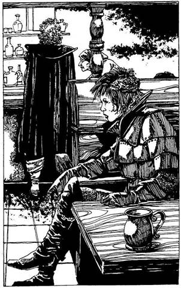
169.
Az újonnan jövők belépnek a Vörös Sárkány fogadóba. Az egyik egy nagyon magas, inas férfi, hátán fekete köpeny. Az egyetlen színfolt rajta a göndör, szalmaszőke haja. A másik egy csinos fiatal nő, aki furcsa vértezetet visel. A csapos morog valamit a bajsza alatt, aztán mosolyt erőket az arcára. - Tyucsev, Kasszandra! Isten hozott benneteket! - kiáltja alázatosan. A tolvajok átülnek az asztalodtól egy másikhoz. Tyucsev a söntéspulthoz lép és italt rendel. Kasszandra leül veled szemben az asztalodhoz. Figyelemre sem méltat; Tyucsev mellételepszik az itallal. Mit teszel?
Nem szólsz semmit? Lapozz a 2-re.
Felállsz és kimész? Lapozz a 363-ra.
Bemutatkozol? Lapozz a 374-re.
170.
A Sárkány fölemeli a fejét. - Üdvözöllek, halandó. - Beszél! A hangja lágy és selymes, minta méz. Úgy tűnik, mintha mosolyogna és úgy érzed, barátságos hozzád. - Isten hozott a barlangomban! Keresel valamit? Segíthetek? - Ha barátkozni próbálsz a Sárkánnyal - lapozz a 317-re. Ha közlöd vele, hogy nálad van a Talizmán és át kell jutnod vele a kapun - lapozz a 356-ra.
171.
Míg Tyucsev kardot ránt, Thaum rád mutat. Ujjából színes tűzgolyó száll feléd. Ha megpróbálod elkerülni a tűzgolyót és ráveted magad Tyucsevre - lapozz a 244-re. Ha nem mozdulsz - lapozz a 225-re.
172.
Leszegik a fejüket és rád rontanak. Kettőt megsebzel közülük, de aztán egyikük felöklel az agyaraival. Hatalmas lendülete ledönt a lábadról, és hanyatt esel. Vesztesz 2 ÉLETERŐ pontot! Ha még élsz, lefognak és a falujukba hurcolnak. Lapozz a 365-re.
173.
- Lehetetlen! - csattan fel a Kapitány. - Az Ormok Szürkecéhektől nyugatra fekszenek, tehát te feléjük mész és nem felőlük jössz. Le vagy tartóztatva! Lapozz a 152-re.

174.
A Kísértet és pokoli hátaslova eltűnnek a szélben. Lehet, hogy csak a szél játéka, de mintha kísérteties, suttogó hangot hallanál. - Még visszatérünk! A Talizmánt újra könnyűnek érzed. Megkönnyebbülten térsz nyugovóra. Mikor felébredsz, sokkal jobban érzed magad. Nyersz 2 ÉLETERŐ pontot és egy híján visszakapod az összes ÜGYESSÉG pontodat, amelyeket a Kísértettel folytatott harc közben vesztettél el. Lapozz a 154-re.
175.
Utolsó csapásod nem ütközik ellenállásba. A szürke köpeny a földre hullik. Minden csendes, csak a szél süvít. Megpihensz és lassan kihevered a megrázkódtatást. Ha vesztettél ÜGYESSÉG pontot, egy híján mindet visszakapod. Óvatosan továbbindulsz az Ezüst utca felé. Lapozz a 85-re.
176.
A vérszomjas szörny a földre zuhan, vér és zöldes nyálka szivárog belőle. Kiontott beleinek bűze émelyítő. A tudósokat lesújtja teremtményük halála, de segítenek neked kimászni a veremből. - Sajnálom - mondja Moreau -‚ a varázslatom nem sikerült. Milyen kár, hogy meg kellett ölnöd. - Megcsóválod a fejedet, hogy milyen bolondok, és
kéred az aranyat. Poloniusz elkezd kutatni a ruhája zsebeiben és redőiben, majd arcán aggódó kifejezés jelenik meg. Már éppen mentegetőzne, de meglátja egyre növő haragodat, és végül fizetségként egy tekercset kínál fel. A tekercsen a Gyötrelmes Végzet Varázslata van, amit egyszer használhatsz fel. Elfogadod és a Tudós háza felé indulsz. Lapozz a 273-ra.
177.
Magasba emelt karddal rohansz a Druidára. Mielőtt megtámadnád, leesik az állad a csodálkozástól. Ahol az előbb még egy ember állt tölgybottal a kezében, most egy pacsirtát látsz. Élesen csipogva köröz a fejed fölött, aztán elszáll. Néhány perc múlva újra fölötted van, mintha a figyelmet akarná felhívni rád, de az is lehet, hogy mindjárt rád támad. Ha elmész, lapozz a 187-re. Ha inkább elbújsz, lapozz a 147-re.
178.
- Hinned kell nekem - szól a Sárkány. - Ha nem hiszel, meghalsz, amikor megpróbálsz átlépni a kapun, és én nem vihetem át a Talizmánt. - Mézédes hangja egyre jobban elbájol. Tedd próbára a SZERENCSÉDET! Ha SZERENCSÉD van - lapozz a 129-re. Ha nincs SZERENCSÉD - lapozz a 118-ra.
179.
Gyorsan átadod a Talizmánt a Halál csontváz követének. Ahogy megkapja, látod, hogy átkozott erőt ment belőle. - Te ostoba - mondja gúnyosan. Mély hangja gyűlölettől zeng. Bámulatos gyorsasággal hozzád érinti a Talizmánt. Mintha csak maga a Halál érintett volna meg, a szíved nem ver
többé. Semmi sem menthet meg. Küldetésednek itt vége!
180.
Négyesével szeded a lépcsőket. Mikor egy újabb fordulóhoz érsz, lentről léptek zaját hallod. Hirtelen ötlettel egy függöny mögé bújsz. Tedd próbára a SZERENCSÉDET. Ha SZERENCSÉD van - lapozz a 140-re. Ha nincs SZERENCSÉD - lapozz a 153-ra.
181.
A gyilkos megadja magát. Most már bizonyos tisztelettel és csodálattal néznek rád. A csapos igyekszik, hogy ne csináljon nagy ügyet a dologból és így szól: - Igazán nagy harcos vagy, még Tyucsev is emberére akadna benned! - Elmond neked egy történetet Heimdolról, a Hatalmasról. Szavaiból úgy tűnik, hogy Heimdol volt az egyik legerősebb és legkellemetlenebb alak, aki valaha is sört vedelt a Vörös Sárkányban. Egy napon jött egy Tyucsev nevű idegen és elfogadta a kihívást egy szkandermérkőzésre. Heimdol életében először veszített. Dúlt-fúlt és szörnyű bosszút esküdött. Néhány nap múlva Tyucsev visszatért, szándékosan belekötött Heimdolba és két barátjába. A harc elkerülhetetlen volt. Tyucsev mindannyiukat megölte és monogramját Heimdol homlokába karcolta. - Anarchilban, az őrült káosz Istenében hisz. Azóta senki sem mert kikezdeni vele, pedig ide csupa tolvaj és gyilkos jár. Ha rá akarsz kérdezni, hol van a Tolvajok Klánja - lapozz a 210-re. Ha inkább a gyilkosok segítségét kéred valamilyen megoldásra váró ügyedben - lapozz a 223-ra.
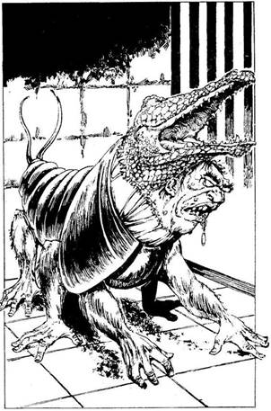
182.
- Mi tudósok vagyunk - mondja Moreau izgatottan. - Kutatási területünk a bonctan. Sebészet és mágia segítségével új életformákat hozunk létre. Várj csak, azonnal meglátod a teremtményünket. - Egy melegházba visznek, amelynek a közepén mély gödröt látsz. A verem tetején körben lefelé mutató hegyes végű karók sorakoznak. Leeresztenek egy létrát és mindnyájan lemásztok. A gödör oldalában, egy rácsos ketrecben szörnyű látvány fogad. A tudósok teremtménye egy hatalmas fenevad. A teste olyan, mint egy óriási svábbogáré, melyből hat kéz nyúlik ki láb gyanánt. A teremtménynek két feje van, egyik a másik alatt. A fölső egy krokodilfej, az alsó egy ogre bibircsókos feje . - Hát nem gyönyörű a kislány? - kérdi Moreau. - Egy bátor harcosra lenne szükségünk, aki kipróbálná - szólal meg Poloniusz. - Ugyanis harci állatként akarjuk használni. De ne aggódj, abban a pillanatban, ahogy bántani próbál, Poloniusz egy különleges varázslattal elaltatja. Az ogre fej, amely határozottan hímneműnek látszik, felordít és nyáladzani kezd. Ha azt mondód: - Köszönöm, de én ezzel nem harcolok - és otthagyod őket - lapozz a 201-re. Ha azt válaszolod: - Ez érdekesnek ígérkezik - és fölkészülsz a harcra - lapozz a 189-re.

183.
A Kereskedő soron jobbra fordulsz és továbbmész egy ideig, míg megtalálod a csatornanyílást. Mikor odaérsz, körülnézel, nem figyel-e valaki, és leugrasz. Bokáig állsz a sárban. Elindulsz a széles csatornában, míg végül egy kerek ajtót pillantasz meg a baloldali falban. Tedd próbára a SZERENCSÉDET! Ha SZERENCSÉD van-lapozz a 238-ra. Ha nincs SZERENCSÉD - lapozz a 205-re.
184.
A kör alakú kőpilléren a következő felirat olvasható:
Az első ajtón a kép mögött
vár az, amiért az életedet kockáztatod.
Ahogy megpróbálod kibogarászni, vajon mit is jelenthet ez, egy kis víztócsa gyűlik Össze a lábadnál. Épp akkor nézel fel, amikor a mennyezet kettéhasad és hatalmas víztömeg zúdul rád. Előreugrasz, mert egy kőtábla nagy csikorgások közepette kezdi elzárni a kijáratot. Egyetlen reményed, hogy sikerül kiugranod az egyre keskenyedő résen át. Dobi két kockával! Ha a kapott összeg kevesebb vagy ugyanannyi, mint ÜGYESSÉG pontjaid száma - lapozz a 103-ra. Ha a kapott összeg nagyobb, mint az ÜGYESSÉG pontjaid száma - lapozz a 215-re.

185.
Hirtelen vakító napfényben állsz, egy hatalmas szakadék szélén. Rájössz, hogy biztos ez az a Hasadék, amelyről a Keresztesek beszéltek neked. A sziklás talaj megfeketedett és megrepedezett, tele van gödrökkel és vermekkel. A szakadékból bűzös párák szállnak fel. Nyugatra sűrű, zöld erdővel borított dombokat látsz! Néhány száz méterre jobbra kezdődik az erdő sávja. Rájössz, hogy Szürkecéhekbe a dombokon át kell menned - de melyik utat választod? Ha keresztülmész az erdőn - lapozz a 256-ra. Ha inkább egyenesen nekivágsz a nyílt vidéknek, lapozz a 134-re.

186.
Kilépsz az épületből és továbbmész a Könyves sétányon. Az utcák kihaltak, a városnak ezen a felén kevés a fény. Egy fogadó hívogató lámpája után kutatsz. Hirtelen egy csapda acéltüskéi csattannak a lábadon és a húsodba marnak. Veszítesz 2 ÉLETERŐ pontot! Mindenfelől homályos árnyalakok lépnek melléd. Arcuk beteges sápadtsággal világit a hold fényében. Fekete köpenyt viselnek, amit a nyakukon zsugorított emberi koponyák fognak össze. Nálad van a Haláltalizmán? Ha igen, lapozz a 162-re. Ha nincs - lapozz a 150-re.
187.
Dühöngve mész el a tisztásról, mert nem kellett volna a Druidát megharagítanod azzal, hogy továbbra is a Szent Ligetben maradsz. Lapozz a 159-re.
188.
A templom végében lévő utcai ajtó felé rohansz. Somnus meglát és rád mutat. - Halj meg - suttogja. - Hatalmas, sötét alak jelenik meg előtted; kezében nagy, fekete kard. Fekete árnyékszárnyai vannak, és sisakján, amely elrejti a vonásait, fehér taréjt visel. A szíved vadul kalapálni kezd, aztán megáll. A Halál Angyalának puszta látványa is elég volt, hogy elpusztulj. A Halál Völgyének sivár tájain fogsz vándorolni az idők végezetéig.
189.
- Kitűnő, kitűnő - lelkendezik Moreau. - Felmásznak a létrán és felhúzzák maguk mögött. A ketrec rácsai hatalmas csattanással vágódnak a padlóhoz. A fenevad feléd indul, hogy elfogyasszon vacsorára. Meg kell küzdened a Szörnyszülöttel. A tudások viasztáblákat vesznek elő és jegyzeteket készítenek.
Szörnyszülött ÜGYESSÉG 12 ÉLETERŐ 8
Bármikor segítséget kérhetsz. Ha kérsz, jegyezd meg ennek a lépésnek a számát és lapozz a 158-ra. Ha segítség nélkül legyőzöd, lapozz a 176-ra.

190.
Miután letetted a fegyvereidet, a Sárkány a kapuhoz kísér. A kapu előtt megszólal. - Ti emberek olyan hiszékenyek vagytok. - Azzal rád veti magát és cafatokra tép. Lapozz a 43-ra.

191.
A Kapitány bólint és azt mondja: - Mi elviszünk Szürkecéhekbe, biztonságban leszel. Itt az ingoványon sok az útonálló. Talán ülj föl ide Elvira mögé. - Az egyik fiatalabb nőre mutat. Megköszönöd, felsegítenek a lóra és örülsz, hogy végre nem kell gyalogolnod. Elvira nem látszik túl boldognak, hogy meg kell osztania veled a lovát. Csendben lovagoltok Szürkecéhek felé. Lapozz a 268-ra.

192.
Végre eléred a fennsík tetejét. Fájós lábaid már-már elfelejtettek vízszintes talajon járni. A növényzet buja, mintha csak trópusi esőerdőben járnál, a ruháid a verejtéktől nedvesen tapadnak rád. Megállsz, s egy skarlátvörös papagáj rikácsolását hallgatod, amikor egy csapat Disznóember lép ki eléd a sűrűből. Szőrösek, a színük kékeszöld, fejük akár egy vaddisznóé. Ha szólsz nekik, hogy nem bántod őket - lapozz a 151-re. Ha rájuk támadsz - lapozz a 172-re.

193.
Egyre gyengébb vagy. Rájössz, hogy közel a vég. Hirtelen vakító fényesség állítja meg a Halállovas támadását. Legnagyobb meglepetésedre a Keresztes Lovag áll előtted, ezüstösen csillogó glória övezi. A Halállovag hátrahőköl, arcát eltakarja a kezével. A Lovag Szent Kardja egyetlen suhintásával kettészeli a Halállovagot. Amilyen hirtelen jött, a Keresztes Lovag olyan gyorsan el is tűnik. Támadódnak nyoma sincs, de a Szent Kard itt maradt, halványan dereng a szalma közt. Fölemeled és rádöbbensz, hogy ezt neked szánták a Halál elleni küzdelemhez. Amint megérinted, sebeid varázslatosan begyógyulnak. Nyersz 6 ÉLETERŐ pontot! Amikor a Szent Kardot használod, mindig kapsz 1 ÜGYESSÉG pontot is. Lapozz a 121-re.

194.
Kardodat a hátába mélyeszted. Halála előtt egy utolsó sikolyt hallat. Lord Min, egy apró termetű, fürge fiatalember szólal meg mögötted: - Ez meggondolatlanság volt. Ezért mindnyájan rajtaveszthetünk. Most aztán futás! - Lapozz a 283-ra.
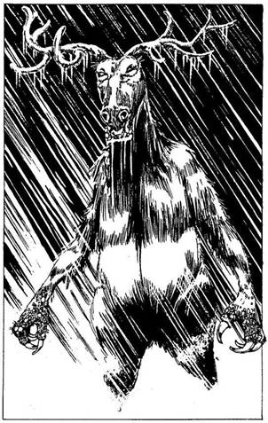
195.
Folytatod az utat a Macskakő sétányon, majd befordulsz egy-két mellékutcán. Egy közeli ablakból hirtelen egy test repül az utcára. Üvegszilánkok záporoznak mindenfelé, de te sértetlen maradsz. Ahogy közelebb lépsz, egy ember megcsonkított hulláját látod: fekete köntös van rajta, amelyet különös minták díszítenek. Felpattan a ház ajtaja és egy ezüstruhás ember kiáltozva rohan az utcára, az ő köntösét fekete furcsa minták ékesítik. - Menekülj! Fuss, ha kedves az életed! - ordítja, aztán eltűnik a szemed elől. - A nyitott ajtóban egy szörnyalak jelenik meg. Démoni üvöltéssel indul feléd. Három méter magas, a feje és a hátsó lábai olyanok, mint a rénszarvaséi. Puffadt, emberszerű testét kék és szürke foltok borítják. A lélegzete jégkristályokká dermed. Rád mutat, ujja nyomán jeges zuhany borít el. A hideg majdnem megbénít - vesztesz 3 ÉLETERŐ pontot. Ha még élsz, a Démon erős mancsaival rád támad. Meg kell küzdened vele!
Jégdémon ÜGYESSÉG 8 ÉLETERŐ 10
Ha legyőzted, lapozz a 61-re.
196.
A Tudós egy kis különszobát mutat, amely olvasóasztalokkal van tele. Néhánynál ülnek is; öregek, fiatalok, mindannyian történelem szakos hallgatók. Széles gesztussal az egyik falra mutat, amelynél könyvespolcok sorakoznak; mindegyik tele van tekercsekkel és agyagtáblákkal. Egy több tekercsből álló művet választasz: Nyleve művét, a címe
Szürkecéhekbeli látogatások. A történet egy könnyelmű ifjú nemesről szól, aki nem használta ki a Tudás Céhei által kínált tanulmányi lehetőségeket. Sok érdekes dolgot megtudsz a városról. Minden hatalom a vallásos rendek kezében van. Meglepődsz, amikor azt olvasod, hogy Vagarnak, a tolvajok, hitszegők és gyilkosok Istenének van a legtöbb híve a városban. De a Halálnak is van itt temploma. Szürkecéhek már nem az a nyugodt hely, ami valaha volt. A várost védő fegyveres erőknek két csoportja van; az egyik a harcosnőké, akik a gonosz istennő, Fell-Kyrinla követői, a másik Minden Anyjának híveiből kerül ki. Szürkecéhek a Járóföld nevű nagy síkság szélén fekszik. Ez csak egy város a sok közül, amelyek a világnak ezen a táján találhatók. Miközben azon meditálsz, vajon eljutsz-e valaha is Végzetvégbe vagy a Felsejlő Ormokhoz, a többi tanuló egymás után távozik. Mikor felnézel, látod, hogy odakint már besötétedett. Gyorsan felállsz és elindulsz, hogy éjszakára szállást keress. Lapozz a 186-ra.
197.
Hirtelen a Kapitány hangja harsan fel mögötted; - Vigyázzatok! Rajtaütés! Hasra! - Nyílvessző süvítését hallod. Elvira lebukik előtted. Ha te is lehasalsz - lapozz a 240-re. Ha vársz, mi történik, lapozz a 224-re.

198.
- A vadonon át jöttél? Nem találkoztál véletlenül egy emberrel, aki az enyémhez hasonló zöld köntöst visel? A kezében tölgyfa bot van, a fején fagyöngy koszorú. Nem mondta meg a nevét? Mit válaszolsz?
Nem találkoztam vele Lapozz a 226-ra.
A neve Dwithian Lapozz a 212-re.
A neve Wodeman Lapozz a 166-ra.
199.
Amikor körülnézel, hogy megbizonyosodj róla, vajon nem volt-e társa, aki a halálát megbosszulná, egy zöld- ruhás alak jelenik meg a tisztás közepén, mintha csak odavarázsolták volna. Egyik kezében tölgyfa bot, a másikban ezüstsarló, a fején fagyöngy koszorú. A botjával koppant egyet és megszólal; - Én a Szent Ligetet őrző Druida vagyok, te pedig megölted a társamat. Hósörényt, akinek a kölykei most árván maradtak. Átkozott legyen a kéz, mely megölte őt! - Érzed, amint kardforgató kezeden remegés fut végig - reszket, mint a nyárfalevél. Vesztesz 1 ÜGYESSÉG pontot a Druida átka miatt. Ha megtámadod a Druidát, hogy ezzel arra kényszerítsd, hogy oldozza fel az átkot - lapozz a 177- re. Ha inkább nem kockáztatsz és elmész a tisztásról - lapozz a 159-re.
200.
Harc közben a réztigris amulett a földre hullik. Most, hogy már nem viseled, rájössz, hogy meg volt átkozva és ezért kötöttél bele a csaposba. Nem is próbálod meg fölvenni. A gyilkos megadja magát. Most már bizonyos tisztelettel és csodálattal néznek rád. A csapos igyekszik, hogyne csináljon túl nagy ügyet a dologból, és így szól: - Igazán nagy harcos vagy, még Tyucsev is emberére akadna benned! - Elmond neked egy történetet Heimdolról, a Hatalmasról. Szavaiból úgy veszed ki, Heimdol volt az egyik legerősebb és legkellemetlenebb alak, aki valaha is sört vedelt a Vörös Sárkányban. Egy napon jött egy Tyucsev nevű idegen, és elfogadta a kihívását egy szkandermérkőzésre. Heimdol életében először veszített. Dúlt-fúlt és szörnyű bosszút esküdött. Néhány nap múlva Tyucsev visszatért, szándékosan belekötött Heimdolba és két barátjába. A harc elkerülhetetlen volt. Tyucsev mindannyiukat megölte és monogramját Heimdol homlokába karcolta. - Anarchilban, az őrült káosz Istenében hisz. Azóta senki sem mert kikezdeni vele, pedig ide csupa tolvaj és gyilkos jár. - Ha meg akarod kérdezni, hol van a Tolvajok Klánja - lapozz a 236-ra. Ha inkább a gyilkosok segítségét kéred egy megoldásra váró ügyben - lapozz a 246-ra.
201.
- Hát, ez nagy kár - szól Poloniusz, és a verem túlsó oldala felé indul. Hatalmas dörrenéssel rácsok emelkednek közéd és a két tudós közé. Legnagyobb rémületedre látod, amint a rács, amely eddig elválasztott a rettenetes teremtménytől, a földbe süllyed. Az óriási fenevad megindul feléd,
hogy felfaljon. Meg kell küzdened vele! A tudósok viasztáblákat vesznek elő és jegyzeteket készítenek.
Szörnyszülött ÜGYESSÉG 8 ÉLETERŐ 12
Bármikor segítséget kérhetsz. Ha kérsz, jegyezd meg ennek a lépésnek a számát és lapozz a 158-ra. Hanem kérsz segítséget és győzöl, lapozz a 176-ra.

202.
Az őr behív a templomba. Ahogy belépsz, majdnem belebotlasz Hawkanába, a magas, hollófekete hajú Főpapnőbe. - Ki ez? - kérdi. Az őr elmondja, hogy titkos küldöncnek adtad ki magad, de nem mondtad meg a jelszót. - Ez az ember nem küldönc! - szól Hawkana. - Halj meg, szentségtörő! Átkozod a balszerencsédet, hogy rögtön Hawkanába botlottál, majd megfordulsz és futni kezdesz. Hawkana varázsigéket sikolt, megidézve ezzel Istennőjének hatalmát. Fell-Kyrinla erejével egy tűzoszlopot zúdít rád. Hamuvá égsz. Lapozz a 109-re.
203.
Mikor a völgy aljára érsz, kis tavacskát találsz, amelybe egy forrás vize ömlik. A hosszú út után igencsak megszomjaztál. Odamész a tóhoz, amely fölé egy göcsörtös, öreg fűz ágai hajolnak. Szinte azonnal furcsa álmosság vesz rajtad erőt, szédülsz, mindjárt a vízbe esel. Tedd próbára a SZERENCSÉDET! Ha SZERENCSÉD van - lapozz a 36-ra. Ha nincs SZERENCSÉD - lapozz a 319-re.

204.
Éppen eléred az ajtót, amikor hatalmas reccsenést és vízzubogást hallasz a hátad mögött. Egy kőtábla ereszkedik lassan a szoba ajtaja elé, ahonnan éppen kiléptél. Hirtelen nagy dörrenéssel a földre zuhansz, még mielőtt a szobát elöntő víz kifolyhatna a folyosóra. Most már csak előre mehetsz. Lapozz a 120-ra.
205.
Már éppen kinyitnád az ajtót, amikor egy kattanást hallasz és valami megüti a hátadat. Lepillantasz: egy szigony véres hegye áll ki a hasadból. Kezeddel görcsösen markolod a tátongó sebet. Nem szenvedsz sokáig, a halál hamar utolér. Lapozz a 109-re.
206.
Kardod markolatával tarkón vágod az öreg templomszolgát. Némán rogy a földre. Megkötöződ. - Szép munka - szól Lord Min, egy apró termetű, fürge fiatalember. - Majd én végzek vele. - Tőrrel a kezében az öreghez lép. Ha megállítod - lapon a 251-re. Ha hagyod, hogy megölje az öreget - lapozz a 239-re.
207.
A szurkos fáklyák lobogó lánggal égnek. A Kísértet megzabolázza a lovát előtted. Félelmetes látvány, de te kihívóan nézel üres fekete arcába. Sziszeg a tehetetlenségtől, ahogy megszólal ősöreg, rekedtes hangján: - A halál majd elveszi azt, ami az övé, és te is csak olyan leszel, mint mi. Mert erőnk teljében visszatérünk - mi, a Halál eszközei! - Rémálomszerű lován megfordul és belevész az éj sötétjébe. Megzavarta a pihenésedet, ezért csak 1 ÉLETERŐ pontot kapsz vissza. Lapozz a 154-re.
208.
A léptek egyre közelednek és a fejed fölött, a levegőben megszólal egy hang; - Én egy halott lelke vagyok, és mi megszámlálhatatlanul sokan vagyunk. - Hirtelen szörnyű ütés taszít hátra. Vesztesz 2 ÉLETERŐ pontot! Meg kell küzdened a Láthatatlan Támadóval. Vakon csapkodsz, abban bízva, hogy döféseid sebet ejtenek rajta.
Láthatatlan Támadó ÜGYESSÉG 9 ÉLETERŐ 8
Ha legyőzted, lapozz a 250-re.
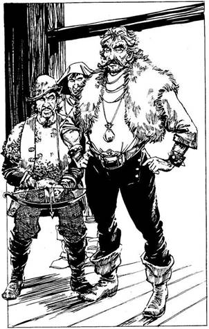
209.
A Sebhelyes végigmér, azután megszólal: - Rendben van, előkerítem a Klánfőnököt. Majd meglátjuk, van-e mondanivalója a számodra, - Kellemetlen csend nehezedik a társaságra, míg a Sebhelyes vissza nem tér egy másik emberrel. - Ez itt Vagrant, a Tolvajok Klánfőnöke. - Vagrant jó megjelenésű, középkorú férfi. Hermelinmellényt visel. Megpödri a bajszát, és megkérdezi, mi járatban vagy. Mit mondasz neki?
Segítség kell, hogy ellopj
valamit? Lapozz a 315-re.
El akarod lopni a
Haláltalizmánt? Lapozz a 276-ra.
Azt mondod, hogy egy halom felbecsülhetetlen
értékű ékszerhez juttatod őket? Lapozz a 291-re.
210.
Hangos és tömören megfogalmazott kérésed inkább követelésnek hangzik, de azért az egyikük elmondja, hogy a bejárat egy csatornanyílás, amely a Kereskedő soron található és a csatornába vezet. Mogorván közlöd velük, hogy találkozzatok ott holnap délben. Úgy döntesz, hogy rögtön el is mész, még mielőtt valaki másba is belekötsz. Ahogy az ajtó felé indulsz, a helyiségben sötétebb lesz; két ember jön lefelé a lépcsőn. Az elsőnek le kell hajolnia, hogy be ne verje a fejét. Magas, vézna testét fekete köpeny borítja, amely még sötétebbé teszi körülötte a félhomályt. Az egyetlen színfolt rajta szalmaszőke, göndör haja. A második egy csinos, fiatal nő, aki különös vértezetet visel. - Tyucsev, Kasszandra! Isten hozott benneteket! - kiáltja a csapos alázatosan. Várnak, hogy félreállj
az útból. - Takarodj az utamból, Ork fattya! - mondod, mielőtt még meggondolhatnád. Egy pillanat alatt rádöbbensz, hogy a réztigris amulett meg volt átkozva. Tyucsev elmosolyodik. Két oldalról közrefognak és kardot rántanak. Egyszerre sújtanak le egy párduc gyorsaságával és méltóságával. Tyucsev kardja akkora, mint te magad, de csak lazán, fél kézzel fogja. Kasszandráé hideg fénnyel világít. Amikor eltalál, minden alkalommal 3 ÉLETERŐ pontot vonj le magadtól!
ÜGYESSÉG ÉLETERŐ
Tyucsev 10 12
Kasszandra 9 10
Ha Kasszandra ÉLETEREJÉT 4-re vagy az alá csökkented, akkor hátratántorodik és Tyucsev a helyére lép, hogy fedezze. Ha Tyucsev ÉLETEREJE 4-re vagy az alá csökken, lapozz a 355-re.
211.
- Ez valóban komoly dolog - szólal meg a Sárkány. - A Talizmánnak át kell jutnia a kapun. De el kell mondanom valamit: én nem léphetek át a kapun, túl szűk az én terjedelmes testemnek. Te átléphetsz, de csakis akkor, ha minden fémtárgyat itthagysz. Az istenek erős varázst bocsátottak a kapura, hogy ne lehessen fegyvert átvinni egyik oldalról a másikra. Én átengedlek, de saját érdekedben úgy kell cselekedned, ahogy tanácsoltam. - Ha leteszed a fegyvereidet, mielőtt átlépsz - lapozz a 190-re. Ha megkérdezed, hogy miért néz bolondnak - lapozz a 178-ra.
212.
- Értem - mondja röviden, megfordul és elmegy. Hamarosan szem elől téveszted a tömegben. Vállat vonsz és továbbmész. Lapozz a 130-ra.
213.
Visszarohansz a szobába, ahol a tetőablak volt, de semmit sem találsz. A kötél eltűnt, az ablak bezárva. Léptek zaját hallod közeledni, valaki felfelé jön a lépcsőn. Kétségbeesetten nézel körül, de sehol sem látsz búvóhelyet. Tíz harcosnő ront be a szobába. Hősiesen harcolsz, de nem bírsz a túlerővel. Hamarosan felülkerekednek és megölnek. Lapozz a 109-re.
214.
Ahogy közeledsz az Elfekhez, egyikük különös mozdulatokat tesz. Rémülten döbbensz rá, hogy varázsol. Álmos bénaság keríti hatalmába a végtagjaidat. Mozdulni sem tudsz. Gonoszul nevetve kezed-lábad megkötözik. Elhurcolnak a Hasadékba, és soha többé nem látod meg újra a napvilágot.
215.
Túl késő. A süllyedő kő csapdába ejt, és a bordáid, mint a harmonika, egymásba csúsznak. Lapozz a 43-ra.
216.
A fiú a Tanulás Céheihez vezet. Átvágtok egy kerengőn, amely magas fűvel benőtt, pipacsokkal tarkított udvart zár körül és egy hatalmas, kátránnyal bevont és üvegből épült melegházhoz értek. Két tudós jön eléd, hagyományos halványkék köntösben, hogy üdvözöljön. Az egyik sovány és kopasz, a másik pufók, orrán csíptetős okulárét visel. Szemmel láthatóan örülnek, hogy eljöttél. Bemutatkoznak: a nevük Poloniusz és Moreau. A kövérebbik, Poloniusz megkér, hogy fáradj be, ha húszpercnyi munkával húsz aranyat akarsz keresni. Ha bemész velük a melegházba - lapozz a 182- re. Ha udvariasan elutasítod az ajánlatukat és visszamész a Tudós házába - lapozz a 273-ra.
217.
Az öreg mögé osonsz, aki ott csoszog a folyosón. Ha megpróbálod leütni kardod markolatával - lapozz a 206-ra. Ha leszúrod - lapozz a 194-re.
218.
Gyorsan elhagyod a tisztást. Szerencsére csak a kölykeit védte. A tisztást megkerülve továbbmész az erdőn keresztül a dombok felé. Lapozz a 159-re.
219.
Ahogy rohansz a sötétben, a Talizmán egyre nehezebb lesz, lefelé húz. Nem bírod tartania távolságot az üldöződ előtt. Egy lángoló pata leterít. Veszítesz 2 ÉLETERŐ pontot! Ha még életben vagy, meg kell küzdened a szörnyű Kísértettel. Valahányszor eltalál, fagyos hideget és zsibbadást
érzel, mert elszívja az életerődet. Amikor megüt, mindig vesztesz 1 ÜGYESSÉG pontot is.
Kísértet ÜGYESSÉG 9 ÉLETERŐ 10
Ha legyőzted, lapozz a 174-re.
220.
- Hazudsz! - sziszegi és beléd mártja a kardját, mielőtt megmozdulhatnál. A sebből dermesztő zsibbadás terjed szét a testedben, úgy érzed, mintha életerődet szívná el. Vesztesz 1 ÜGYESSÉG S 2 ÉLETERŐ pontot! Most meg kell küzdened a Halál Követével. Valahányszor eltalál, 1 ÜGYESSÉG pontot is vesztesz az ÉLETERŐ pont veszteség mellett.
Halál Követe ÜGYESSÉG 8 ÉLETERŐ 6
Ha legyőzted, lapozz a 254-re.
221.
Észreveszed az egyik harcosnőt, akiről tudod, hogy Fell-Kyrinla követője. Azt reméled, hogy a templomba igyekszik, ezért a nyomába eredsz és távolról követed. Végül egy nagy, fehér kőépület elé érsz, amelyet szürke oszlopok szegélyeznek. Lépcsők vezetnek a bejárathoz, ahol két oszlop között egy őr áll. Mit teszel?
Megtámadod az őrt? Lapozz a 234-re.
Azt mondod, hogy fontos üzenetet hoztál a
Főpapnőnek? Lapozz a 202-re.
Föladod és elmész a Vörös Sárkány
Fogadóba? Lapozz a 24-re.
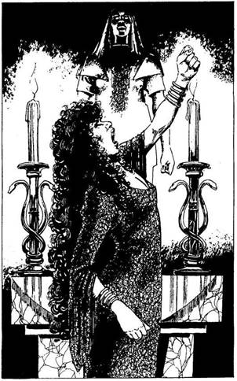
222.
- Hogy mered megszentségteleníteni a templomot? Hogy mersz megzavarni, mikor épp az Istennővel tárgyalok? - mondja fojtott hangon, a dühtől elfehéredve. - Felajánlom a lelkedet az istennőnek! - Az égnek emeli karját, majd lesújt. A bolthajtásos mennyezetből lángoszlop csap le. Dobj egy kockával! Ha 1-4-ig dobsz - lapozz a 105-re. Ha 5-öt vagy 6-ot dobsz, lapozz a 132-re.

223.
Úgy látod, érdekli őket a dolog, meghívnak egy sörre. Elfogadod, de nem iszol. Közlöd velük, ha segítenek, nagy üzletet csinálhatnak. Megegyeztek, hogy holnap délben találkoztok a Tolvajok Klánjában, ahova az álcázott szenesvermen át juthatsz be a Gyertyánfa utcából. Csevegni kezdtek, amikor két Új vendég lép a borospincébe. - Á, Tyucsev, Kasszandra! - szólal meg a csapos alázatosan. A tolvajok, akik eddig az asztalnál ültek, most egy másik asztalhoz húzódnak. Az első idegen egy magas, vézna férfi, akinek a testét fekete köpeny borítja, amely még sötétebbé teszi körülötte a félhomályt. Az egyetlen színfolt rajta szalmaszőke, göndör haja. A második egy csinos, fiatal nő, aki különös vértezetet visel. A férfi, aki a
Tyucsev névre hallgat, a söntéspulthoz lép, de a Kasszandra nevű nő az asztalodhoz telepszik és egyszerűen keresztülnéz rajtad. - Keress magadnak egy másik asztalt, ráncos banya! - mondod gondolkodás nélkül. Hirtelen rádöbbensz, hogy a réztigris amulett biztosan meg van átkozva. Kasszandra arcul köp és egy párduc gyorsaságával és méltóságával kardot ránt. Pengéje hidegen csillog, az élét dér lepi. Valahányszor eltalál, 3 ÉLETERŐ pontot vesztesz, mert a dermesztő hideg marja a sebedet. Tyucsev vigyorogva figyel.
Kasszandra ÜGYESSÉG 9 ÉLETERŐ 10
Ha Kasszandra ÉLETEREJÉT 4-re vagy az alá csökkentetted, lapozz a 342-re.
224.
Rájössz, hogy az egész csak azért van, hogy téged próbára tegyenek és az a nyílvessző, amit az egyik nő lőtt ki, ártalmatlanul csapódik egy fába. Most már elhiszik, hogy tényleg süketnéma vagy. Egész délután lovagoltok a néptelen szürke ingoványon. Elöl egy város magas falait látod. Az őrök tisztelegnek, amikor a hatalmas boltíves városkapuhoz értek. A kapitány int, hogy szállj le a lóról, és beküld Szürkecéhekbe. Hálás vagy, hogy elhoztak, búcsút intesz nekik, és elindulsz kideríteni, van-e visszaút a Földre. Lapozz á 296-ra.
225.
A tűzgolyó felrobban melletted. A kínzó fájdalom és az égett hús szaga rádöbbent, hogy ez valódi volt. Vesztesz 6 ÉLETERŐ pontot! Ha még élsz, hallod, amint Thaum gonoszul felnevet, míg Tyucsev támadásra lendül. Lapozz a 265-re.
226.
- Ó, rég nem kaptunk már hírt felőlük. Én Mindenek Anyjának, az Élet Forrásának Papnője vagyok. A Druidák a barátaink. Remélem, jól érzed majd magad Szürkecéhekben. Viszontlátásra, idegen. - Továbbmegy, hamarosan szem elől téveszted a tömegben. Te is folytatod az utat a Raktár utcán. Lapozz a 130-ra.
227.
A lábad elnehezül, mire két domb között elérsz egy völgyet. Egyre lassabban mész, és nem tudod, meddig bírod még. Hátranézel. Megelégedve látod, hogy az Orkok és az Elfek véres harcban csapnak össze. Az Elfek rövid úton elintézik az Orkokat - különös szikrák pattognak a kezükről, amelyekkel azonnal megölik ellenfeleiket. Rájössz, hogy az előny, amelyre szert tettél, rövid életű, továbbmész hát. Átvágsz a dombon, és egy zöldellő, páfrányokkal teli völgybe érsz. Lapozz a 203-ra.

228.
Lerohantok a lépcsőn, de az öreg meglátott. Lapozz a 283-ra.
229.
Amint a tudós háza felé mész, az úton egy kisfiú szalad oda hozzád, és megkérdi, nem akarsz-e segíteni egy nagyon okos tudósnak; egy kis pénzt is kereshetsz vele. - Nem fog sokáig tartani - teszi még hozzá a ruhád ujját ráncigálva. Ha megköszönöd, de elutasítod - lapozz a 273-ra. Ha elmész a fiúval - lapozz a 216-ra.
230.
Óvatosan mész a fodrozódó tóba, és a kezed nyújtod az öregasszonynak. Hirtelen tajtékot vet a víz, és nyálkás csápok tekerednek a combjaid köré. Az öregasszony hátraszegi a fejét, a mellkasa helyén hatalmas előremeredő szarucsőr nő ki, puffadt testéből hat csáp kanyarog feléd. Meg kell küzdened a Grendellel.
Grendel ÜGYESSÉG 8 ÉLETERŐ 9
Ha legyőzted, lapozz a 65-re.
231.
Ahelyett, hogy azonnal lezuhannál a fennsíkra, az Ölyv mágikus tolla fenntart, így lassan lebegve ereszkedsz lefelé. Tizenhét méterrel lejjebb, a lépcsőn érsz földet. Újra elindulsz, de most már sokkal óvatosabban. Lapozz a 192-re.
232.
Kardot rántva előrerohansz, hogy megtámadd.
Fehér Nőstényfarkas ÜGYESSÉG 8 ÉLETERŐ 9
Ha legyőzted, lapozz a 199-re.
233.
Az alkimista az aranyadért átnyújtja neked a Gyorsaság Gőzeinek fioláját. Ha gyorsítani akarsz, csak be kell lélegezned. Ha maradt még pénzed, kipróbálhatod a többi portékáját is, ha még nem tetted volna.
Kéregbőr - 7 arany Lapozz a 306-ra.
Szerencse Köve - 10 arany Lapozz a 266-ra.
Élet Vize - 12 arany Lapozz a 360-ra.
Ha tovább akarsz menni, lapozz a 28-ra.
234.
Amint felrohansz a lépcsőn, az őr megkondít egy rejtett harangot és rád támad. Meg kell küzdened vele.
Templom Őre ÜGYESSÉG 6 ÉLETERŐ 8
Ha legyőzted, lapozz a 255-re.

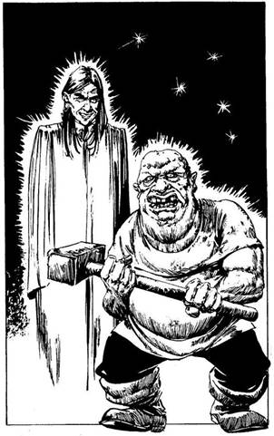
235.
Amikor végre levegőhöz jutsz, három árnyék jelenik meg előtted az úton. Fölpillantasz, és Tyucsevet meg Kasszandrát látod magad előtt, közöttük pedig egy tintahal-szerű lény lebeg, egyik csápját Kasszandra dereka köré kuksolva. - Újra találkoztunk hát! - szólal meg Tyucsev. - Az ifjú Lord Min elmondta, hogy sikerrel jártál. Gratulálok, nagy szívességet tettél nekünk. Örülhetsz; elmúlt a fejed fölül a veszély! Elvisszük a Talizmánt! - Mogorván előhúzod a kardodat. - Értem - mondja Tyucsev. - Akkor hadd mutassam be Thaumot - folytatja a tintahal-szerű szörnyre mutatva. Az átváltozik az arany fülbevalós, szürke ruhás varázslóvá, aki a virágokat varázsolta a tömegnek. Ő az Illúziók Mestere. Ebben a pillanatban egy Troll jelenik meg a biztonságos ház ajtajában. - Ez itt Harg - szól Thaum. Harg fölemeli hatalmas kalapácsát, készen rá, hogy rád sújtson. Vajon ő valódi, vagy csak Thaum egyik illúziója? Ha megtámadod a Trollt - lapozz a 45-re. Ha hagyod, hogy kalapácsa eltaláljon - lapozz a 141-re.
236.
Meghívnak egy italra, amit el is fogadsz. Egyikük elmondja, hogy a Tolvajok Klánjának bejárata egy csatornanyílás, amely a Kereskedő sorról a csatornába vezet. Ott várnak rád holnap délben. Lapozz a 169-re.

237.
Amikor az Ingoványi kapuhoz érsz, azt tapasztalod, hogy Hawkana halála óta megkettőzték az őrséget. Rémülten Látod, hogy egy lovas őrjárat közeledik a kapu felé a Kovács utcáról. Csapdába kerültél az őrök és a lovasok között. Mikor kiosonsz a kapun, az egyik harcosnő felismer. A fejedet követelik. Kimenekülsz a pusztába, de a lovasok gyorsabbak és itt nem tudsz elbújni. Szembefordulsz velük. Harcolsz, de túl sokan vannak és bosszút szomjaznak. Nem szenvedsz sokat, mielőtt kileheled a lelkedet. Lapozz a 109-re.
238.
Mikor kinyitod az ajtót, elcsúszol a nyálkán. Hirtelen ütés ér hátulról, és egy szigony csapódik az ajtóba. Vesztesz 2 ÉLETERŐ pontot! Ha még életben vagy, hátranézel, és egy csapda kilövőszerkezetét látod. Kinyitod az ajtót, és egy fényűzően berendezett szobába lépsz. A Tolvajok Klánja szemmel láthatóan semmiben sem szenved hiányt. Néhány férfi, akit a Vörös Sárkány Fogadóból ismersz, kanapékon heverészik. Meglepetten ugranak talpra, s a kardjuk után nyúlnak. Ha hátadat a falnak vetve kardot rántasz - lapozz a 242-re. Ha nyugodtan azt mondod, hogy meg vagy híva - lapozz a 252-re.
239.
Az öreg halkan felhördül és meghal. Lord Min gonoszul elmosolyodik. Vesztesz 1 SZERENCSE pontot a kegyetlenségedért. Tovább siettek, leszaladtok a lépcsőkön, majd egy nagy, kétszárnyú ajtóhoz értek. Őr áll előtte, de végeztek vele, mielőtt egy szót szólhatna. A Belső Szentélyben egy
hollófekete hajú nő imádkozik az oltárnál, amelyen ott fekszik a Haláltalizmán. Az oltár mögött az istennő nagyméretű márványszobra áll, a szobor testét páncéling bontja, gyönyörű arcán gőg és kegyetlenség tükröződik. A magas nő feláll és felétek fordul. - A Pokolba is! Ez Hawkana, a Főpapnő! - suttogja Jemmy, a Patkány. - Már itt sem vagyok! - Körülnézel, de a tolvajok mind eltűntek. Mielőtt követhetnéd őket, Hawkana egy röpke varázslattal bezárja az ajtót. Lapozz a 222-re.
240.
Lehajolsz. Hallod, amint a nyíl egy közeli fába csapódik. - Nocsak! - szólal meg a kapitány. - Hirtelen visszanyertük a hallásunkat, mi? Igazán csodás gyógyulás! - Egy parancsszót rikolt, erre Elvira megfordul a nyeregben és a földre lök. Rád ugrik, a lelket is kiszorítja belőled. A kezeidet hátra kötik, a kardodat elveszik. Mostantól a tőröddel kell harcolnod. Vesztesz 2 ÜGYESSÉG pontot! Ha szert teszel egy másik kardra, visszakapod a pontjaidat. Lapozz a 257-re.
241.
A Sebhelyes sötét sikátorok útvesztőjén át egy épülethez visz, amely Jemmy, a Patkány szerint biztonságos ház. Felmásztok a tetőre és házról házra folytatjátok utatokat. Nemsokára egy magas épület tetejére értek, amely Fell-Kyrinla templomának a szomszédságában áll. Véresszívű, ez a csöndes, nehézkes fickó, leveszi a kötelet és a mászóhorgot a válláról. Könnyedén a templom egyik oszlopára hajítja. Az innenső végét egy kéményhez erősíti, és nyugodtan átsétál a feszes
kötélen. Lajhármászásban követitek és csatlakoztok hozzá a templom tetején. Jemmy, a Patkány, akinek az ujjai póklábhoz hasonlítanak, talál egy világítóablakot. Nevéhez hűen szétfeszíti a rácsokat és kinyitja a zárat. Benyúl, leszerel egy csapdát, amelyen mérgezett tű volt. Csak csodálni tudod, milyen ügyesek az ujjai. Leeresztenek egy kötelet, és mindnyájan lemásztok egy lépcső tetejére. A lépcsőfordulóban, az ajtónál egy öreg szolgát pillantasz meg, amint éppen távozik. A többiek nem vették észre. Ha elhallgattatod, mert hátba meglátott benneteket - lapon a 217-re. Ha figyelemre sem méltatod, remélve, hogy nem látott meg - lapozz a 228-ra.

242.
Feléd indulnak. Az egyik íjpuskát vesz elő és lő. Lebuksz előle, de a lábadra célzott, a nyílvessző a combodba fúródik, s az oldaladra dőlsz. Úgy érzed, mintha lángolna a véred. A nyílvessző mérgezett volt. Hamarosan meghalsz. Lapozz a 109-re.

243.
Továbbmész a Raktár utcán, aztán ráfordulsz a Könyves sétány nevű fasorra. Két hatalmas, szürke kőépület áll az út két oldalán. Egy csoport kék tógás fiatalember megy be a szemközti házba. Egy ősz öregember vezeti őket, aki halványkék köntöst visel. A közelebbi épületen zászló leng, rajta könyvek és papírtekercsek rajza. Ez csak a könyvtár lehet. Ha megnézed, milyen információt találhatsz a könyvtárban - lapozz a 346-ra. Ha megvizsgálod a másik épületet, hogy kiderítsd, mit csinálnak ott a fiatalok - lapozz a 279-re.

244.
A tűzgolyó mögötted robban fel, de izzó fájdalom csap a hátadba, és orrodat megüti az elszenesedő ruha szaga. Vesztesz 3 ÉLETERŐ pontot! Ha még életben vagy, Tyucsevre támadsz. Lapozz a 265-re.

245.
Már éppen belépnél a kopár, tető nélküli szobába, mikor a korhadt lépcső megreccsen, és elárulja jelenlétedet. A tolvajok rájönnek, hogy valaki kihallgatta őket. Az egyik a tetőkön át elmenekül, a másik két barna nadrágos gonosztevő feléd indul, hogy megtámadjon. Két oldalról közelítenek, de miután felugrottál az utolsó lépcsőfokra, csak egyesével tudnak rád támadni. Egymás után kell megküzdened velük.

ÜGYESSÉG ÉLETERŐ
Első Tolvaj 6 7
Második Tolvaj 7 6
Ha legyőzted őket, lapozz a 329-re.

246.
Érdekli őket a dolog, és meghívnak egy sörre. Elfogadod, de nem iszol. Közlöd velük, ha segítenek, nagy üzletet csinálhatnak. Megegyeztek, hogy holnap délben találkoztok a Tolvajok Klánjában, amit az álcázott szenesvermen keresztül érhetsz el a Gyertyánfa utcáról. Beszélgetni kezdesz velük. Lapozz a 169-re.
247.
A lány csodálkozva vonja fel a szemöldökét. Mind a négyen hitetlenkedve néznek rád. Az aranyruhás a fehér köpenyes Paphoz fordul és megkérdezi: - Igaz ez? - Tudod, hogy a történeted igaz, ezért úgy döntesz, megvárod, míg a Pap varázsol. - Ez az igazság, őszinte szívből beszélt. - A pajzsos lány leereszti az íjpuskáját, és a bejárat felé fordítja. - Most mit tegyünk? - kérdi az aranyba öltözött ember. - A kijáratokat elzárták, és nekem mindössze annyi varázserőm maradt, amennyivel csak egyvalakit juttathatok ki. Ezt a harcost talán az istenek küldték, hogy folytassa küldetésünket. - Érzed a belőlük áradó jóakaratot, ezért csendben vársz, hátha segíthetnél nekik. Lapozz a 100-ra.

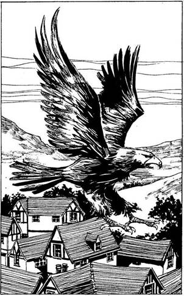
248.
Egy óriási fehér sas ragad a karmai közé. Támadóid hamarosan kis pontokká zsugorodnak lent az utcán. Magasan a háztetők fölé emelkedtek; messze délkeleten egy hegycsúcsot látsz egy fennsík tetején. Egy hangot vélsz hallani: Mindenek Anyja szól hozzád. - Az ott az Égigérő hegy, oda kell eljutnod. A csúcsán találod a kaput, amelyen át majd visszajutsz a saját világodba. - Átvillan az agyadon, hátha a sas elvisz egészen a hegyig, de a Talizmán ólomgolyóként húzza a nyakadat. A sas leszáll a Raktár utca egyik elhagyott sikátorába. Mielőtt köszönetet mondhatnál neki, újra felszáll és már magasan a város fölött repül. Mágikus láncinget viselsz? Ha igen, lapozz a 375-re. Ha nem, lapozz a 258-ra.

249.
Az Ingoványi kapuhoz sietsz. Egy csapat harcos őrzi, férfiak és nők vegyesen, mindannyian zöld ruhában. Ők Mindenek Anyjának követői, akiknek Lillantha elmondta, hogy nézel ki. Kiengednek a kapun, kilépsz az éj sötétjébe. Nyersz 1 SZERENCSE pontot, mert kijutottál a városból. Lapozz a 8-ra.
250.
A nehéz nap után kimerülten megállsz, hogy kifújd magad. A láthatatlan ellenfél támadása készületlenül ért. Körülnézel és csendben hallgatózol, hátha megint megtámad valaki. Az éj leszálltával hálát adsz, mikor egy üres istállót találsz. Bemész és a szalma közé kuporodsz éjszakára. Lapozz a 91-re.
251.
Odakapsz és félrelököd a fiatal tolvaj kezét. Elejti a tőrét; az hangos csörömpöléssel legurul a lépcsőn. - Érzelgős bolond! - csattan fel. - Az őrök bizonyára meghallották! - Egy újabb tőrt húz elő a csizmájából. - Siessünk, kevés időnk maradt - mondja a Sebhelyes. - Továbbsiettek. Lapozz a 283-ra.
252.
- Ha valóban azt akarnánk, hogy elgyere, megmondtuk volna a biztonságos utat, nem gondolod? - szól az egyik tolvaj, akit felismersz a Vörös Sárkány fogadóból. AZ arcán a fülétől az álláig sebhely húzódik. A tolvajok köréd gyűlnek. - Ilyen fogadtatásban részesítjük az efféléket - folytatja. - Ha a hátadat a falnak vetve kardot rántasz - lapozz a 242-re. Ha leülsz és azt mondod, hogy megölhetnek, de akkor nagy üzlettől esnek el - lapozz a 209-re.
253.
A folyó a dombok közt kanyarog. Sokáig gázolsz benne, mert tudod, hogy a Sötét Elfek így majd elvesztik a nyomaidat. Később kimászol a túlsó parton, és folytatod az utat. Lapozz a 331-re.
254.
Utolsó csapásod nem ütközik ellenállásba. A csontvázból csak egy kis kupac marad a földön. Minden csendes, csak a szél süvít. Megpihensz és lassan kihevered a megrázkódtatást. Ha veszítettél ÜGYESSÉG pontot, most egy híján mindet visszakapod. Óvatosan mész tovább a Raktár utcán, aztán ráfordulsz a Könyves sétány nevű fasorra. Két hatalmas, szürke kőépület áll az út két oldalán. Egy csoport kék tógás fiatalember megy be a szemközti házba. Egy ősz öregember vezeti őket, aki halványkék köntöst visel. A közelebbi épületen zászló leng, rajta könyvek és papírtekercsek. Ez lehet a könyvtár, gondolod. Ha megnézed, milyen információt találhatsz a könyvtárban - lapozz a 346-ra. Ha megvizsgálod a másik épületet, hogy kiderítsd, mit csinálnak ott a fiatalok - lapozz a 279-re.

255.
Ahogy a lekaszabolt nő teste vércsíkot húzva maga után lecsúszik a templom lépcsőjén, legnagyobb rémületedre Hawkanát, a hollófekete hajú Főpapnőt pillantod meg. Hawkana varázsigéket sikolt, hogy segítségül hívja Istennőjének hatalmát. Fell-Kyrinla segítségével tűzoszlopot zúdít rád. Porrá égsz. Lapozz a 109-re.
256.
Belépsz az erdő zöldellő félhomályába. Kis idő múlva egy tisztásra találsz. Meglepetten torpansz meg a látványtól. Egy nagy fehér Nőstényfarkas szoptatja két kicsinyét. Majdnem akkora, mintegy póniló. Félretolja őket és vicsorogva jön feléd. Mit teszel?
Hátrálsz és elmész? Lapozz a 218-ra.
Adsz neki egy kis szárított
húst? Lapozz az 52-re.
Megtámadod? Lapozz a 232-re.
257.
Késő délutánig lovagoltok egy szürke, elhagyatott ingoványon át. Előttetek egy Város védőfalai emelkednek. Az őrök tisztelegnek, amikor a megerősített falba épített bolthajtásos kapuhoz értek. A Kapitány kettéosztja a csapatot; egyik felét hátrahagyja a kapunál őrségben. Hozzád fordul és így szál: - Most elviszünk Hawkanához. Lesz hozzád néhány kérdése. - Ha az első adandó alkalommal elmenekülsz - lapozz a 318-ra. Ha csöndben velük mész, várva, mit hoz a jövő - lapozz a 334-re.

258.
A Raktár utca az Ingoványi kapu folytatása. Ha végig- mész a Raktár utcán az Ingoványi kapuhoz - lapozz a 237-re. Ha a Tudós házában vacsoráztál, kérdezd meg, merre van a temető. - Lapozz a 261-re.

259.
A Gyilkos megadja magát. - Úgy látom, benned emberünkre akadtunk, harcos - mondja a Sebhelyes. A tolvajok bizonyos tisztelettel és csodálattal néznek rád. Ha megkérdezed, merre van a Tolvajok Klánja - lapozz a 236-ra. Ha közlöd velük, hogy van egy elintézetlen ügyed, amelyben segítségre lenne szükséged - lapozz a 246-ra.
260.
Továbbmész a folyosón, amelyik újra balra kanyarodik. Mikor befordulsz a sarkon, dübörgő hangot hallasz a szobából, ahonnan éppen kijöttél. Visszaszaladsz és látod, amint a mennyezet lezuhan. Egy csomó hegyes karó áll ki belőle. Egy kőtömb ereszkedik az ajtó elé, végleg elzárva a kijáratot. Hangos csattanással ér földet, aztán minden elcsendesedik. Most már csak előre mehetsz. Lapozz a 120-ra.
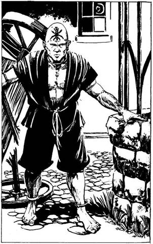
261.
Megállítasz egy tanulót, aki útbaigazít a temető felé. Idegesen futsz végig a Gyászoló soron, amint a városból menekülsz. Mikor a temető közelébe érsz, egy ökrösszekérnek kiesik a kereke, és felborul előtted; szinte teljesen elzárja az utat. A temetőfal és a szekér közti rés felé futsz, de egy borotvált fejű ember elállja az utadat. Buggyos, skarlátvörös, térdig érő nadrágot és ugyanolyan színű kabátot visel, fekete pamutövvel. Homlokára skarlátvörös imádkozó sáskát tetováltak. Nem Úgy nézi ki, mint aki út akar engedni. Mit teszel?
Udvariasan megkéred, hogy engedjen
át? Lapozz a 338-ra.
Rászólsz, hogy takarodjon az
utadból? Lapozz a 311-re.
Megtámadod? Lapozz a 288-ra.
262.
Ahogy kinyitod a könyvet, a sorok megcsillannak és változtatni kezdik a színüket. A Balszerencse könyvét tartod a kezedben, amelynek a betűi baljóslatúan derengenek. Becsapod a könyvet, de már késő. Érzed, amint a gonosz varázslat bosszúja beteljesedik rajtad. Ősi Átok áldozata lettél! Vesztesz 1 SZERENCSE pontot! Undorral hagyod ott a Tanulás Céheit. Lapozz a 186-ra.
263.
Lezuhansz és esés közben többször nekicsapódsz a sziklafalnak. Mire leérkezel egy lila kúszónövény mellé, már halott vagy. Lapozz a 43-ra.
264.
Mikor leszáll az est, végigmész a Hét Bűn utcáján, egészen a Vörös Sárkány fogadóig. Egy zömök ember jelenik meg az ajtóban, és kiborít egy vödörnyi mocskosvörös fűrészport. - Sajnálom, zárva vagyunk! - morogja és becsapja az ajtót. Mielőtt bármit is tehetnél, észreveszed, hogy valami megbolygatta a fűrészport. Egymás után lábnyomok tűnnek fel benne, s feléd közelednek. Mit teszel?
Hangosan felkiáltasz, hogy magadra vond
a figyelmet? Lapozz a 297-re.
Felmarkolsz egy csomó sarat és a
lábnyomokra hajítod? Lapozz a 348-ra.
Megvárod, hogy mi fog
történni? Lapozz a 208-ra.
265.
Tyucsev egy macska fürgeségével, hatalmas kardja egyetlen suhintásával hárítja első támadásodat. Kardja majdnem akkora, mint te magad. Fekete köpenye miatt, amely testét borítja, nehéz megmondani, tulajdonképpen hol is van. Kasszandra és Thaum a háttérből elégedetten szemlélnek. Tyucsevvel kell megküzdened!
Tyucsev ÜGYESSÉG 10 ÉLETERŐ 12
Az első sikeres támadásod után lapozz a 301-re.
266.
Az alkimista az aranyadért cserébe átnyújtja neked a Szerencse Kövét. Amint a kezedbe veszed, érzed az erejét. Nyersz 1 SZERENCSE pontot! Ha még nem próbáltad volna, megveheted a többi portékáját is.
Kéregbőr - 7 arany Lapozz a 306-ra.
Gyorsaság Gőzei - 10 arany Lapozz a 233-ra.
Élet Vize - 12 arany Lapozz a 360-ra.
Ha nem akarsz semmi mást vásárolni, hanem kilépsz az üzletből és folytatod utadat, lapozz a 28-ra.
267.
Óvatosan osonsz előre, de a száraz avar itt-ott megzörren a lábad alatt. Szerencsére az alvó Sárkánygyík nem vesz észre. Egy pillanatra ugyan felpattan a szeme, s ettől egy kis egér, mely éppen ott fut át, lelassul és kővé dermed. Gyorsan továbbsietsz, nehogy te is ugyanígy végezd. Lapozz a 270-re.
268.
Késő délutánig lovagoltok egy kietlen szürke ingoványon át. Előttetek egy város védőfalai emelkednek. Az őrök tisztelegnek, amikor a megerősített falba épített, boltíves kapuhoz értek. A Kapitány szól, hogy szállj le a lóról, és utadra küld. Lapozz a 296-ra.
269.
Lábujjhegyen lopakodsz előre. Fölemelsz három levedlett sárkánypikkelyt. Mindegyik akkora, mint egy felnőtt ember alkarja. Óvatosan kiosonsz a barlangból, és továbbmászol föl a hegyre. Lapozz a 310-re.
270.
Az ösvény két domb között kanyarog, míg végül egy nyirkos, mohos völgybe torkollik. Az alján a harmat már algás pocsolyává gyűlt össze egy vadgesztenyefa tövében. Halk sírásra leszel figyelmes. Egy öregasszonyt pillantasz meg a tó közepén, nyakig a vízben. Csapzott haja a tó zöld habjától lucskos. - Segítség, megfulladok! Belegabalyodtam a hínárokba - esedezik meghatóan. Ha segítesz neki - lapozz a 230-ra. Ha nem törődsz vele és továbbsietsz - lapozz a 65-re.

271.
Támadásod meglepetésként éri, hatalmas csapást mérsz rá. Felszisszen a dühtől és fájdalomtól, s feléd indul hosszú, hegyes kardjával. Meg kell küzdened a Halál Követével. Valahányszor eltalál, a megszokott ÉLETERŐ veszteségen kívül vonj le 1 ÜGYESSÉG pontot is.
Halál Követe ÜGYESSÉG 8 ÉLETERŐ 4
Ha legyőzted, lapozz a 254-re.
272.
- Hát akkor meg honnan tudnánk? - kérdezi a Sebhelyes. - A többiek felröhögnek és hátat fordítanak neked. Ha visszamész a csaposhoz és megkérdezed, hogyan lehet eljutni a Tolvajok Klánjába - lapozz a 295-re. Ha inkább megkocogtatod a Sebhelyes vállát, és azt mondod: - Ugyan, nem árulom el senkinek - lapozz a 167-re.
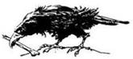
273.
A Tudós házának kapujához érsz. Bekopogsz. Néhány perc elteltével egy szolgáló nyit ajtót. Elmondod neki, hogy a Tudóshoz jöttél látogatóba. A szolgáló kéri, hogy mutasd fel a jelképet. - Van nálad ilyen? Ha van - lapozz a 6-ra. Ha nincs - lapozz a 131-re.
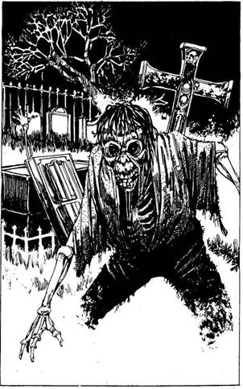
274.
Kerülgeted a mohos sírhantokat és fejfákat. Mikor közelebb érsz a fényhez, az megremeg és a sötétben lebegve elindul feléd. Teljesen elbűvölt. Megigézve követed a lidércfényt egy szürke sírhanthoz, ahol egy összeaszott emberi kéz nyúl ki a földből és megragadja a bokádat. Rácsapsz, de ekkor egy újabb foszladozó kéz fog meg. A Pokoli Ghoul csikorgó zajjal emelkedik ki a sírjából. Több zombi is felkel körülötted nyughelyéről. A rettegés erőt ad, és kiszabadítod magad a zombik kísérteties gyűrűjéből, de a Ghoul rád támad! Meg kell küzdened vele!
Ghoul ÜGYESSÉG 7 ÉLETERŐ 8
Ha öt Forduló után legyőzöd a Ghoult - lapozz a 343-ra. Ha öt Forduló után még mindig él - lapozz a 298-ra.

275.
- Hogy mered az Egek Urát fenyegetni, alantas halandó? - bömböli. Mielőtt válaszolhatnál, számodra ismeretlen nyelven egy különös szót mormol. Hirtelen erős szél kerekedik, szinte ledönt a lábadról. Tedd próbára a SZERENCSÉDET! Ha SZERENCSÉD van - lapozz a 93-ra. Ha nincs SZERENCSÉD - lapozz a 112-re.
276.
A néma csendet Vagrant hangja töri meg. - Ez valóban felbecsülhetetlen érték. - Hirtelen elhatározással parancsokat ad ki. - Expedíciót indítunk, mielőtt még máshová vinnék a Talizmánt! Ma vásár van - jó az időzítés. Sebhelyes, Patkány Jemmy, Lord Min és Véresszívű! Ti kíséritek el a barátunkat! - Néhány órával később, miután befejezték az előkészületeket, elindultok. Mikor kilépsz, egy vérrel festett falfirkát veszel észre: Tolvajok közt nincs becsület! Megfogadod, hogy résen leszel. Lapozz a 241-re.
277.
Egy kisebb kő eltalál és lesodor a keskeny lépcsőről. Vesztesz 2 ÉLETERŐ pontot! Ha még élsz és nálad van az Ölyv tolla - lapozz a 231-re. Ha nincs nálad a toll - lapozz a 263-ra.
278.
Belépsz az ékszerészhez. Különös módon úgy látod, nincs itt semmi értékes dolog. Az ékszerész apró, monoklis ember, éppen a pult mögötti páncélszekrényt zárja be. A ZÁRVA tábláért nyúl, de mielőtt megszólalhatnál, a három tolvaj, akiket kihallgattál, kardot rántva beront az üzletbe. Ha a tolvajokhoz állsz és elfogod az ékszerészt - lapozz a 309-re. Ha az ékszerész segítségére sietsz és megtámadod a tolvajokat - lapozz a 286-ra.
279.
Besurransz a hatalmas épületbe és óvatosan végigosonsz az üres folyosón. Egy olvasószobát találsz és úgy döntesz, belenézel néhány tekercsbe. Az egyikből megtudod, hogy a harcosnők, akik
a városba hoztak, Fell-Kyrinla követői. Egy másik a varázslás különböző módozatait és azok űzőit nevezi meg: ezek varázslók, halottidézők, mágusok, sámánok, boszorkányok, csodatévők, illuzionisták, démonidézők, jósok és mások. A halottidézők varázslatai érdekelnek, mert ők azok, akik hatalomvágyukban emberáldozatot mutatnak be, és hasonló elmondhatatlan szörnyűségeket tesznek. Észreveszel az asztalon egy piros, tarka szalagokkal átkötött könyvet. Hívogatóan fekszik előtted. Ha kinyitod a könyvet - lapozz a 262-re. Ha kimész, mielőtt felfedeznének - lapozz a 186-ra.
280.
Bemutatkozol a Gonosztevők vegyes társaságának. Nem válaszolnak. Nem tágítasz, közlöd velük, hogy csak néhány percre zavarnád őket. Egyikük, akinek az arcán a fülétől az álláig sebhely húzódik, mereven rád bámul és érdes hangon megszólal: - Mi itt nem sokat törődünk a törvénnyel, hát úgy vigyázz! Lehet, hogy meghalsz, mielőtt észrevennéd, hogy megmozdultunk. - Mit teszel?
Megkérdezed, hogyan juthatsz el a
Tolvajok Klánjába? Lapozz a 145-re.
Azt mondod, van egy elintézetlen ügyed és némi
segítségre lenne szükséged? Lapozz a 246-ra.
Bátran azt feleled, hogy nem félsz a
fenyegetéseiktől? Lapozz a 167-re.
281.
A Sebhelyes felnevet. Leveszik a kezüket a tőreikről, S egy fiatalember lép elő a hátad mögül és leül. - Hát persze, hogy tolvajok vagyunk - mondja. - Mi más lenne a Vörös Sárkány, ha nem tolvajtanya? - Meghívnak egy halra, amit elfogadsz. Egyikük elmondja, hogy a Tolvajok Klánjának bejárata egy csatornanyílás, amely a Kereskedő sor közelében a csatornába vezet. Megkérdezed, nem lehetne-e most rögtön odamenni, de nemet mondanak, így hát megegyeztek, hogy holnap délben Ott találkoztok. Beszédbe elegyedsz velük. Lapozz a 169-re.
282.
Felvánszorogsz a legközelebbi domb tetejére. Csupán néhány perced van, hogy kifújd magad, mert az Orkok máris rád támadnak. Szerencsére fegyelmezetlen bandával állsz szemben, csak egyesével támadnak. Sorban kell megküzdened az első hárommal. A harmadik, szemmel láthatóan a vezérük, hatalmas, behemót állat. Görbe, sárgás agyarai vannak, kezében recés élű handzsárt tart.
ÜGYESSÉG ÉLETERŐ
Első Ork 5 6
Második Ork 5 4
Ork Vezér 7 7
Ha legyőzted őket, lapozz a 111-re.
283.
Halkan osontok végig a fordulón a lefelé vezető lépcsők felé, mikor hirtelen harangzúgás töri meg a
csendet. - A riadó - morogja a Sebhelyes. - Megdermedsz. Hátrapillantasz és megdöbbensz, mert nem látod a tolvajokat, akikről azt hitted, hogy mögötted állnak. Csak árnyakat látsz. Egyedül vagy. Ha visszamész, hogy megkeresd a tolvajokat - lapozz a 213-ra. Ha lerohansz a lépcsőkön - lapozz a 180-ra.
284.
Semmi sem történik. Lapozz a 292-re.
285.
A Sárkány felüvölt fájdalmában, de a hátán lévő vastag pikkelyek valamennyire megvédik, még a Sárkányölővel szemben is. A farkával legyint egyet, a csapása válladon talál el. Vesztesz 2 ÉLETERŐ pontot! Megrettensz, amint a Sárkány hátrafordítja fejét; sárga szemében fájdalom és bosszúvágy tükröződik. - Ezért a gyáva támadásért most meghalsz! - üvölti. Mit teszel?
Visszarohansz az alagúton? Lapozz a 335-re.
Megpróbálod felkapni néhány
pikkelyét? Lapozz a 398-ra.
Megpróbálsz felmarkolni valamennyit a
Sárkány kincséből? Lapozz a 38-ra.
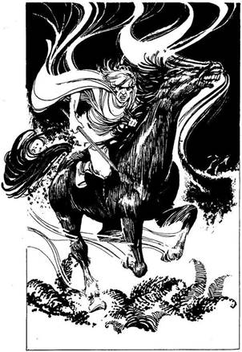
286.
Két tolvaj fordul szembe veled, míg a harmadik, egy menyétképű, az ékszerészért indul. Egyszerre kell megküzdened a két tolvajjal.
ÜGYESSÉG ÉLETERŐ
Első Tolvaj 6 7
Második Tolvaj 5 6
Ha megölted az egyiket, lapozz a 299-re.
287.
Egyre nehezebben jutsz előre és a sötétlő égbolt egyáltalán nem vidít fel. A Talizmán minden lépéssel egyre nehezebb, a zuhogó esőben bőrig ázol. Szinte hálát adsz, mikor leszáll az éj, és a páfrányok közé fekhetsz. Sajnos álmodat vad nyerítés zavarja meg. Fölugrasz. Egy szilaj, fekete mén vágtat feléd, szemei lángolnak. Zabláját megfeszítve, izzó hamufelleget lehel. Lovasa egy púpos, torz, sötét szellemalak, akinek a teste anyagtalan. Érzed, mennyire gyűlöl minden élőlényt. Elfutsz előle, remélve, hogy nem tud átvágni a nehéz terepen - lapozz a 219-re. Ha fáklyát gyújtasz és bevárod - lapozz a 207-re.
288.
Ez az ember a Skarlátvörös Imádkozó Sáska Rendjének szerzetese, a fegyvertelen harc művésze. Ütései és rúgásai halálosak. Valahányszor megnyer egy Fordulót, dobi egy kockával. Ha 5-öt Vagy 6-ot dobsz, lapozz a 366-ra.
A Skarlátvörös Imádkozó
Szerzetes ÜGYESSÉG 9 ÉLETERŐ 8
Ha legyőzted, lapozz a 325-re.
289.
Hunyorogva lépsz ki a késő délutáni nap vakító fényébe. Nyersz 1 SZERENCSE pontot, mert meglátogattad és túlélted a Vörös Sárkány Fogadót. Újra a Hét Bűn utcáján állsz. Ha találkoztál a Tudóssal, aki meghívott vacsorára - lapozz a 229-re. Ha nem hívtak meg, vagy nem akarsz elmenni, elindulhatsz nyugatnak a Macskakő sétány nevű mellékutcán - lapozz a 195-re, vagy északnyugat felé végigmehetsz a Kereskedők utcáján - lapozz a 394-re.
290.
A remegő fáklyafényben elolvasod a háromszög alakú pillérre írt szöveget:
Foglald el a majom helyét.
Balra veszély; a bálvány életre kelhet.
A három kőpillér hirtelen eltűnik. Meglepetten lépsz hátra. A szoba továbbra is üres marad, semmi kellemetlen nem történik, ezért úgy döntesz, hogy továbbmész. Lapozz a 339-re.
291.
- És hol őrzik ezt a felbecsülhetetlen értékű ékszert? - kérdezi Vagrant. - Ha azt mondod nekik, hogy kövessenek és megmutatod - lapozz a 349-re. Ha azt mondod, hogy Fell-Kyrinla templomában található - lapozz a 333-ra.
292.
Thaum kezéből élénk színű fénycsóva csap a szemedbe és teljesen elvakít. Kasszandra szíven szúr, míg Tyucsev lecsapja a fejedet a nyakadról. Lapozz a 109-re.
293.
Vársz egy ideig, igyekszel ügyet sem vetni az izmaidban egyre növekvő fájdalomra. Semmi sem történik. Úgy döntesz, megkockáztatod, hogy kitörj rejtekedből és átkelj a folyón. Lapozz a 331-re.
294.
Erre kardot rántanak és rád támadnak. Lapozz a 368-ra.
295.
- Én elmondtam, de ez hat aranyadba fog kerülni, egy ezüsttel sem kevesebbe - feleli a csapos. - Ha van ennyi pénzed és fizetsz - lapozz a 323-ra. Ha nincs ennyi pénzed, vagy nem akarsz fizetni - lapozz a 312-re.
296.
Az Ingoványi kapu nevű utcán mész be a városba. A világosszürke kőből épült házak többsége igen nagy. Az utcákon hemzsegnek az emberek; vásárlók, fiatal lányok és fiúk, kezükben könyvek és tekercsek. Ha a Raktár utcán, az Ingovány kapu folytatásán mész tovább - lapozz a 357-re. Ha balra fordulsz a Kovács utcára - lapozz a 303-ra.

297.
Az emberek rád se hederítve sietnek tovább. A léptek tovább közelednek, és egy tompa, rekedtes hang szólal meg: - Én a holtak lelke vagyok. Megszámlálhatatlanul sokan vagyunk! - Hirtelen szörnyű ütés taszít hátra. Vesztesz 2 ÉLETERŐ pontot! Meg kell küzdened a Láthatatlan Támadóval.
Láthatatlan Támadó ÜGYESSÉG 9 ÉLETERŐ 8
Ha legyőzted, lapozz a 250-re.
298.
Még javában küzdesz a Ghoullal, amikor látod, hogy a többi Zombi feléd közeledik. Hamarosan bekerítenek. Hideg, halott kezek tömkelege ragad meg. Egy frissen ásott sírba fektetnek. Sikítasz, míg rád lapátolják a földet. Nemsokára már a Halál kopár földjén jársz.
299.
Az ékszerész véres, rövid karddal a kezében diadalkiáltással lép hátra, mikor támadója összeesik. Meglep, hogy egy ilyen kis öregember milyen ügyes. Ezt látva, másik ellenfeled eldobja a kardját és kirohan a boltból. Fölveheted a tolvaj kardját. Az ékszerész feléd fordul és megköszöni a segítséget; monoklija a derekánál lóg. Benyúl a pult mögé és átad egy 10 aranyat tartalmazó erszényt meg egy apró, bársony borítású dobozkát. A dobozban egy gyönyörű rubinkő van. - Ne mondja senki, hogy Oliol, az Ékszerész fösvény - szól. - Alig hiszel a szemednek, megköszönöd az ajándékot és továbbmész. Nyersz 1 SZERENCSE pontot! Lapozz a 304-re.
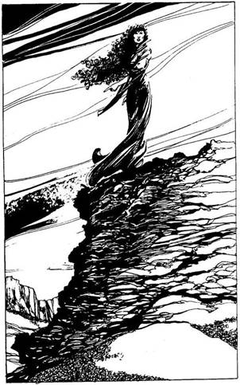
300.
Amikor továbbmész az úton, s magad mögött hagyod a lakott vidéket, elered az eső, és a poros Út sártengerré változik. Délutánra úgy döntesz, letérsz az útról, és a vadonon keresztül kelet felé haladsz tovább. Egynapos nehéz menetelés után letáborozol éjszakára. Rosszul alszol. Hawkanáról álmodsz, aki halotti köntösét viseli, a sebei még véreznek. A Halál völgyének szélén áll, haja lobog az üvöltő szélben. Hív, hogy kövesd, azután megfordul és lemegy a kopár völgybe. Idegesen ébredsz, úgy érzed, még jobban kimerültél. Vesztesz 2 ÉLETERŐ pontot! Lapozz a 116-ra.
301.
Amint megsebzed Tyucsevet, látod, hogy Thaum különös mozdulatokat tesz. Tyucsev láthatatlanná válik. Meglepetten hőkölsz hátra, de Kasszandra már kardjával feléd döfve rád támad. Tyucsev a hátad mögé kerül, kardját sújtásra lendíti. Thaum újra varázsolni kezd. Úgy érzed, minden oldalról támadnak, keményen kell védekezned. Ha segítségért fohászkodsz az egyik Istenhez - lapozz a 330-ra. Ha úgy gondolod, hogy saját ügyességed is elegendő a győzelemhez - lapozz a 292-re.
302.
Előrelépsz és a remegő fáklyafényben egy szöveget olvasol a négyzet alakú kőpilléren:
A skarabeus bogár mérgétől legtávolabb
Halálosabb mérget lelsz, mint a sárkány tüze.
Míg a különös üzenet jelentésén töprengsz, kevés
por hullik a hajadra. Fölpillantasz és látod, hogy a mennyezet recsegve süllyedni kezd. A sziklából kiálló, olajozott fémtüskék merednek feléd. Az egyiken karóba húzott, összezúzott csontváz van. Előreugrasz, mert hatalmas robajjal egy kőtábla ereszkedik a kijárat elé. Már csak abban reménykedsz, hogy ki tudsz csusszanni az egyre szűkülő nyíláson. Dobj két kockával! Ha a kapott összeg kevesebb vagy Ugyanannyi, mint ÜGYESSÉG pontjaid száma - lapozz a 103-ra. Ha a kapott összeg nagyobb, mint ÜGYESSÉG pontjaid száma - lapozz a 215-re.
303.
Végigmész a Kovács utcán. Egy bádogosműhely mellett a páncélkovács műhelyét pillantod meg. Ha belépsz - lapozz a 139-re. Ha továbbmész - lapozz a 104-re.
304.
Továbbmész az Ezüst utcán, elhaladsz a bezárt ékszer- bolt előtt, aztán balra fordulsz a Könyves
sétány nevű fasorra. Két hatalmas, szürke kőépület áll az út két oldalán. Egy csoport kék tógás fiatalember megy be a szemközti házba. Egy ősz öregember vezeti őket, aki halványkék köntöst visel. A közelebbi épületen zászló leng, rajta könyv és papírtekercs rajza látható. Ez lehet a könyvtár. Ha megnézed, milyen információt találhatsz a könyvtárban - lapozz a 346-ra. Ha megvizsgálod a másik épületet, hogy kiderítsd, mit csinálnak ott a fiatalok - lapozz a 279-re.
305.
Amikor kifelé indulsz a fűrészporral felszórt padlójú helyiségből, hallod, hogy Tyucsev megkérdezi a csapostól: - Ki volt ez az ijedt nyulacska? - Odasétál a tolvajokhoz. Ha kisietsz erről a tolvajtanyáról és örülsz, hogy életben maradtál - lapozz a 289-re. Ha kardot rántasz és azt kiabálod: - Ki az ijedt nyulacska? - lapozz a 294-re.

306.
Az alkimista egy kenőccsel teli korsót ad az aranyadért. - Azonnal dörzsöld a karodra és a mellkasodra. Ettől majd egy hétig olyan kemény lesz a bőröd, minta fakéreg - mondja. - Megfogadod a tanácsát. Miután az egészet a bőrödre kened, elkezd égetni. A fájdalom szinte elviselhetetlen, a
bőröd felhólyagzik. Vesztesz 2 ÉLETERŐ pontot! Ha még élsz, Alembic kissé aggódva megjegyzi: - Ajaj, lehet, hogy megavasodott. Majd elmúlik. Én becsületes ember vagyok. Itt a hét aranyad. Talán próbálj ki valami mást. - Visszakapod a pénzedet. Ha még nem tetted, kipróbálhatod a többi portékáját is.
Szerencse Köve - 10 arany Lapozz a 266-ra.
Gyorsaság Gőzei - 10 arany Lapozz a 233-ra.
Élet Vize - 12 arany Lapozz a 360-ra.
Ha undorodva otthagyod a boltot, lapozz a 28-ra.
307.
A bokrok közé bújsz, remélve, hogy az Elfek nem tudják követni a nyomodat. Tedd próbára a SZERENCSÉDET! Ha SZERENCSÉD van - lapozz a 293-ra. Ha nincs SZERENCSÉD - lapozz a 344-re.
308.
Épp időben lapulsz a sziklafalhoz. A kövek lezúdulnak melletted és nem sokkal alattad csattannak a lépcsőkön. Óvatosan folytatod az utadat fölfelé a lépcsőkön. Lapozz a 192-re.
309.
Az ékszerész a pult mögé nyúl a kardjáért, de a te gyorsaságoddal nem vetekedhet. Megragadod a kardot és a pengét a torkának szegezed. Az ékszerész megfeszül és rimánkodni kezd. - Ott a páncélszekrényem. Vigyél el mindent, csak ne bánts! - A szoba végében álló páncélszekrényre
mutat. Az egyik tolvaj, egy vékony, sunyi alak megkötözi az ékszerészt. Ha akarod, megtarthatod a kardját. A másik két barna nadrágos gonosztevő hűvösen tekint rád. Ha magadnak követeled a zsákmány tekintélyes részét - lapozz a 66-ra. Ha csak kis részesedést kérsz - lapozz a 354-re.
310.
Van nálad egy fiolával a Borostyánfenyő Gyantájából? Ha igen - lapozz a 385-re. Ha nincs - lapozz a 369-re.
311.
Ez az ember a Skarlátvörös Imádkozó Sáska Rendjének szerzetese, a fegyvertelen harc művésze. Ütései és rúgásai halálosak. Valahányszor megnyer egy Fordulót, dobj egy kockával! Ha 5-öt vagy 6-ot dobsz, lapozz a 366-ra.
A Skarlátvörös Imádkozó
Sáska Szerzetese ÜGYESSÉG 9 ÉLETERŐ 8
Ha legyőzted, lapozz a 325-re.
312.
Sajnos a tolvajok meghallották. A legfiatalabb egy falikárpit mögé rejtőzve hangtalanul mögéd oson. Izzó fájdalom hasít a hátadba. Mérgezett tőrrel szúrt le. A földre rogysz, képtelen vagy megmozdulni. Az ifjú tolvaj közömbösen elveszi a pénzeszacskódat. Lapozz a 109-re.

313.
Amikor átvágsz a kietlen síkságon, az ég elszürkül és esőcseppek szakítják meg töprengésedet. Az eső egyre sűrűbben esik; lehajtott fejjel mész, hogy az arcod száraz maradjon. Nem veszed észre, hogy egy nagy szárnyas szörny készül lecsapni rád. Leterít - vesztesz 2 ÉLETERŐ pontot! Ha még életben vagy, fölugrasz. Egy sasfejű szárnyas oroszlánnal találod szembe magad. Fel akar falni. Meg kell küzdened a Griffel.
Griff ÜGYESSÉG 8 ÉLETERŐ 14
Ha 6-ra, vagy az alá csökkented az ÉLETEREJÉT - lapozz a 94-re.
314.
Felmarkolsz néhány pikkelyt, de a nagy sietségben megbotlasz egy fekete gyöngyökkel megrakott aranyládában. A Sárkány feléd fordul. Míg föltápászkodsz, tüzet okád rád. A kicsapó lángnyelvek körülölelnek és hamuvá égsz. Lapozz a 43-ra.
315.
- Ó, igen? - mondja Vagrant. - És mi légyen az? - Ha azt válaszolod, hogy még nem mondhatod meg, mi az, de Fell-Kyrinla templomában található - lapozz a 370-re. Ha megmondod nekik, hogy a Haláltalizmánról van szó, és kész vagy megosztani velük a zsákmányt, amikor hozzá jutsz - lapozz a 276-ra.
316.
- Nem hagyhatod itt Tyucsevet! - Felugranak, kardot rántanak és rád támadnak. Lapozz a 368-ra.
317.
A Sárkány lágy hangja igen kellemes, nyugodtan elbeszélgetsz vele. Elmondja, hogy ő a kapu őre. Közlöd, hogy át kell menned a kapun. Elámító bűbájától el vagy ragadtatva, ezért amikor azt mondja, hogy itt kell hagynod a fegyvereidet, mielőtt elindulsz, teljesíted a kívánságát. Amint hátat fordítasz neki, a Sárkány rád veti magát és összeroppantja a nyakadat, akár egy gallyat. Lapozz a 43-ra.

318.
Még mindig Elvira mögött ülsz, amikor az Ingoványi kapu nevű utcán belovagoltok a Tanulás Városába. Szürkecéhekbe. A legtöbb világosszürke kőépület igen nagy. Sokféle embert látsz. Néhány férfi világoskék tógát visel, ezek tudósok és professzorok a Tanulás Céheiből. Errébb fiatal fiúk és lányok sétálnak, kezükben könyvek és tekercsek. Nyolc harcosnő még mindig veled van. Ha leugrasz a lóról és megpróbálsz megszabadulni tőlük - lapozz a 362-re. Ha meggondolod magad és csendesen velük mész, hogy találkozz Hawkanával - lapozz a 351-re.
319.
Erőlködsz, hogy kiszabadulj a tóból, de egy lágy, megnyugtató hang azt sugallja, hogy békés álomba merülsz. Semmit sem érzel, mikor a hűvös, zöld vízbe gázolsz. A Gyilkos Fűz elbájolt. Vesszőivel csapkod, amint a víz alá merülsz. Vesztesz 4 ÉLETERŐ pontot! A fájdalom fölráz álmodozásodból és kivergődsz a tóból. Fölpillantasz és látod, hogy a Fűz törzséről két nagy, zöld szem bámul rád. Meg kell küzdened vele.
Gyilkos Fűz ÜGYESSÉG 8 ÉLETERŐ 12
Ha sikerül négyszer eltalálnod, lapozz a 26-ra.
320.
A másik két tolvaj elmenekül, amikor látja, hogy milyen könnyedén küldted a másvilágra vérengző barátjukat. Egyedül maradsz az üzletben a halott ékszerésszel. Néma szemrehányással néz rád. Ha kiteszed a ZÁRVA táblát és megpróbálod kinyitni az ékszerész páncélszekrényét - lapozz a 341-re. Ha azonnal elmész, mielőtt még gyilkosság gyanújába keverednél - lapozz a 304-re.
321.
A remegő fáklyafényben egy feliratot olvasol a henger alakú pilléren:
A jelkép mögött, az első ajtón
Találod azt, amiért az életed kockáztatod.
A három kőpillér hirtelen eltűnik. Meglepetten hőkölsz hátra, de semmi más baljóslatú dolog nem történik, a szoba üres marad. Úgy döntesz, továbbmész. Lapozz a 339-re.
322.
- Honnan jött a karaván? Talán a Baljóslatú Ormoktól? - kérdezi az őrjárat Kapitánya. Mit mondasz, honnan jött?
Az Ormoktól Lapozz a 173-ra.
A Végzet Rónáinak Városából Lapozz a 123-ra.
Serakubból Lapozz a 191-re.
323.
Mohón elveszi a pénzt és azt mondja: - A bejárat egy nyitott csatornanyílás, amely a Kereskedő soron a csatornákba vezet. A helyedben én most nem mennék oda, de holnap déltájban már biztonságos lesz. - Megköszönöd neki és indulni készülsz, amikor két Új vendég lép be a söröspince félhomályában. Az egyik nagyon magas, inas férfi, hátán fekete köpeny, amelytől még sötétebb lesz körülötte a félhomály. Az egyetlen színfolt rajta göndör, szalmaszőke haja. A másik egy csinos
fiatal nő, aki furcsa vértezetet visel. A csapos morog valamit a bajsza alatt, aztán mosolyt erőket az arcára. - Tyucsev, Kasszandra! Isten hozott benneteket! - kiáltja alázatosan. A söntéspult túlsó végébe megy, hogy kiszolgálja Tyucsevet, aki egy kancsó Rá pálinkát rendelt. Kasszandra egy közeli üres asztalhoz ül, és Tyucsev csatlakozik hozzá. Mit teszel?
Kimész a fogadóból? Lapozz a 363-ra.
Leülsz és kiiszod a sörödet? Lapozz a 2-re.
Bemutatkozol nekik? Lapozz a 374-re.
324.
Felemelsz egy pikkelyt, de megbotlasz egy tűzopálokkal megrakott serlegben. Amint visszanyered az egyensúlyodat, felkapsz három pikkelyt és mielőtt a Sárkány megfordulhatna, visszafutsz a szűk, kanyargós folyosón. Amilyen gyorsan csak tudsz, kisietsz a barlangból és folytatod az utat a hegyen fölfelé. Lapozz a 310-re.
325.
Kardod végighasítja a mellkasát és a szerzetes elterül a földön. Átlépsz a holtteste fölött és elmész a szekér mellett. Visszanézve legnagyobb meglepetésedre látod, hogy a szerzetes talpra szökken és elfut. Nyilván csak tetszhalott volt. Vállat vonsz és továbbmész. Lapozz a 392-re.

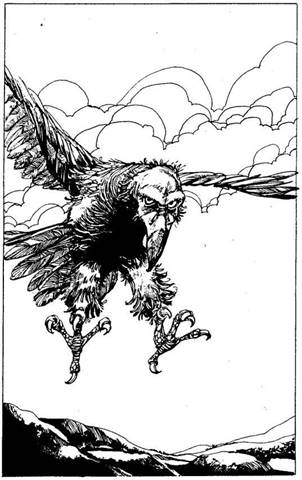
326.
Hegységhez közelegsz, mely délre elnyúlva bíbor derengésbe vész. Előtted fekszik a fennsík. Hirtelen sötét árnyék borul rád. Fölnézel. Egy hatalmas madarat látsz, amint éppen lecsapni készül. A csőre önmagában nagyobb, mint te magad. Mit teszel?
Állva küzdesz meg vele? Lapozz a 18-ra.
Féltérden küzdesz meg vele? Lapozz a 27-re.
A földre hasalsz? Lapozz a 37-re.
327.
Egy pillanatra elárulják érdeklődésüket. Tyucsev hűvösen így szól: - Nincs időm ilyen kalandokra - de a kíváncsisága nyilvánvaló. Eltöprengsz, hogy talán hiba volt elmondani nekik. Fölállsz és távozol. Amint mész fölfelé a lépcsőkön, még látod, hogy Tyucsev odamegy a tolvajokhoz. Lapozz a 289-re.
328.
Amint fölfelé mászol, a lépcsőkön, egyre nagyobb lesz a meleg és a páratartalom. Csorog rólad a verejték. Amikor fölnézel, látod, hogy a sziklafal teteje már csak alig hatvan méternyire van fölötted. Hirtelen néhány szikla zúdul le a tetőről. Dobj két kockával! Ha a kapott összeg kevesebb vagy ugyanannyi, mint az ÜGYESSÉG pontjaid száma - lapozz a 308-ra. Ha a kapott őszszeg nagyobb, mint az ÜGYESSÉG pontjaid száma - lapozz a 277-re.
329.
Megmotozod a két tolvajt és 6 aranyat találsz náluk. Lapozz a 304-re.
330.
Melyik istenhez fohászkodsz?
Avatarhoz, az Egyetlenhez Lapozz a 347-re.
Az Életszellemhez Lapozz a 284-re.
Rochevalhoz, a Lovagok
Istenéhez Lapozz a 361-re.
Mindenek Anyjához Lapozz a 248-ra.
Sorshoz Lapozz a 389-re.
331.
A folyó a dombok közül széles síkságra folyik, ahol északnak fordul. Nyugatnak tartasz a vad, füves sztyeppén keresztül. Mikor már azt hiszed, leráztad üldözőidet, egy csapat gyorsan közeledő alakot pillantasz meg. Bajszod alatt szitkozódva rádöbbensz, hogy újra a sarkadban vannak. Makacsul tovább mész, de a fáradtságnak megvan az ára. Vesztesz 2 ÉLETERŐ pontot! Már éppen elhatározod, hogy szembefordulsz az ellenfeleiddel, mikor porfelhőt pillantasz meg a távolban. Hamarosan már jól látható húsz lovas alak. Feléd vágtatnak. A lovak patáinak dübörgését feléd hozza a szél. Az Elfek ezt látva felhagynak az üldözéssel és visszahúzódnak. Nyilván nem akarnak találkozni a lovasokkal. Örülsz, hogy a hátukat látod és úgy döntesz, bevárod a lovasokat. Ahogy közelebb érnek, látod, hogy egy csapat harcosnő jön feléd,
akik láncinget és bőrpáncélt viselnek. Zord arckifejezésük nem sok jót ígér, amint körülötted körözve egyre szorosabb gyűrűbe fognak. A Kapitány feléd léptet a lován és röviden megkérdezi, mit keresel itt, az ingovány szélén. Mit felelsz?
Megkéred őket, hogy segítsenek a
küldetésedben? Lapozz a 101-re.
Azt mondod, hogy egy másik világból
csöppentél ide? Lapozz a 73-ra.
Azt hazudod, hogy egy megtámadott karaván
Egyetlen túlélője vagy? Lapozz a 322-re.
Süketnémának tetteted
magad? Lapozz a 35-re.
Követeled, hogy vigyenek Ingoványi
Szürkecéhekbe? Lapozz a 95-re.
332.
Az ajtó mögött puszta kőfalat találsz. Ezt az ajtót befalazták. Becsukod. Úgy érzed, mintha a majom az ajtón gúnyosan vigyorogna rajtad. Választhatsz egy másik ajtót. Melyiket választod?
Amelyiken a kígyó van Lapozz a 168-ra.
Amelyiken a skarabeus bogár
van Lapozz a 377-re.
Amelyiken a sárkány van Lapozz a 352-re.
333.
- Megőrültél? Nincs az a pénz, amiért én kirabolnám Fell-Kyrinla templomát - válaszolja Vagrant. - Ha beszélsz nekik a Haláltalizmánról - lapozz a 276-ra. Ha inkább blöffölsz és azt mondod, majd találsz mást, akivel megoszthatod a zsákmányt - lapozz a 367-re.
334.
Az Ingoványi kapu nevű utcán belovagoltok a Tanulás Városába, Szürkecéhekbe. A legtöbb világosszürke kőépület igen nagy. Sokféle embert látsz. Néhány férfi világoskék tógát visel, ezek Tudósok, és professzorok a Tanulás Céheiből. Arrébb fiatal fiúk és lányok sétálnak, kezükben könyvek és tekercsek. Rájössz, hogy így fegyvertelenül nem sokra mennél ezekkel a harcosnőkkel, így hát nincs más választásod, velük kell tartanod. Lapozz a 351-re.
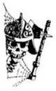
335.
A Sárkány meg sem próbál követni. Kirohansz a barlangból és továbbmászol a csúcs felé. Lapozz a 369-re.
336.
A tudós az Istenek Könyvéhez vezet, egy nagy bőrkötésű könyvhöz, arany lapokkal. Az aranyozott szélű lapokat forgatva rájössz, hogy Orbnak sok Istene van. Az egyik oldalon felismersz egy jelképet, amit a harcosnők viseltek. Az ő istennőjük - Fell-Kyrinla, a mennyek vívómestere. Jó Rochevalnak, a Lovagok Istenének esküdt ellensége. Izgatottan fedezel fel egy utalást a Talizmánra: „Némelyek úgy hiszik, segítségével parancsolni lehet a Halál élőholt szolgáinak.” Lapozol egyet. Itt Mindenek Anyjára találsz utalást, aki a Természet maga, az élet őrzője, aki mindenkivel törődik. A következő gazdagon illusztrált oldal Anarchillal foglalkozik, az erkölcs felrúgójával, aki megveti a rendet. Éppen Avatarnál, az Egyetlennél tartasz, aki a fény maga, amikor rájössz, hogy jócskán besötétedett, míg te itt olvastál. Megköszönöd a Tudósnak és gyorsan elindulsz, remélve, hogy találsz egy biztonságos helyet éjszakára. Lapozz a 186-ra.
337.
Már szemmel láthatóan nem érdekled őket, és átülnek az asztalodtól a hat tolvajhoz beszélgetni. Úgy döntesz, távozol a Vörös Sárkány Fogadóból, amíg lehet. Lapozz a 289-re.
338.
Nem enged át. Ha arrébb lépsz, és megengeded, hogy ő menjen át elsőnek - lapozz a 379-re. Ha kevésbé udvariasan felszólítod, hogy takarodjon az utadból - lapozz a 311-re.

339.
Végigpróbálod az összes ajtót, de csak egyet tudsz kinyitni. Nincs más választásod, be kell menned a következő szobába. Széles csarnokba lépsz, amely hosszan elnyúlik jobbra-balra. A szoba közepén rettenetes bálvány áll. Talapzata egy feltekeredett kígyófarok. Izmos törzséből négy karmos kéz áll ki, tetején két rémisztő fej, hátán denevérszerű szárnyak. A földön olvasható felirat szerint ez itt Damolh, a Semmi Istenének, az Üresség Szájának fia. A szemben lévő falon négy ajtót látsz, kettőt balra, kettőt jobbra. Mindegyik ajtón egy-egy jelkép van. Balra, a legtávolabbi ajtón egy zöld kígyó képe látható. A következőn egy vigyorgó majom, a harmadikon egy fekete skarabeus bogár, jobbra, a legtávolabbin pedig egy tüzet okádó vörös sárkány van. Melyik ajtót nyitod ki?
Amelyiken a kígyó van? Lapozz a 168-ra.
Amelyiken a majom van? Lapozz a 332-re.
Amelyiken a skarabeus bogár
van? Lapozz a 377-re.
Amelyiken a sárkány van? Lapozz a 352-re.
340.
Egyebek között tolvaj is vagyok - mondja Tyucsev. - Miért akarsz tolvajokkal találkozni? - Elmondod neki, hogy van egy elintézetlen ügyed és némi segítségre lenne szükséged. - Ó, értem - mondja -‚
de rám most szükség van a templomban. Nem érdekel. - Ha fölállsz és kimész az utcára - lapozz a 289-re. Ha megemlíted, hogy a Haláltalizmánról van szó - lapozz a 327-re.
341.
Amint megérinted a páncélszekrényt, vakító lángcsóva borít el. A páncélszekrényen tűzcsapda volt - megégtél. Lapozz a 109-re.
342.
Tyucsev közétek lép. Kardja majdnem akkora, mint te magad, de ő csak lazán fél kézzel fogja. Kasszandra hátralép, kezét karba fonja. - Nehéz harcod lesz, Tyucsev! - lihegi.
Tyucsev ÜGYESSÉG 10 ÉLETERŐ 12
Ha Tyucsev ÉLETEREJÉT 4-re vagy az alá csökkented, lapozz a 355-re.
343.
Egyetlen hatalmas kardcsapással a Ghoul sápadt, nyálkás nyakába vágsz és lefejezed a szörnyet. Végre holtan rogy a földre. Amilyen gyorsan csak tudsz, visszarohansz a falhoz a feléd botorkáló zombik elől, mert tudod, hogy amilyen gyorsan csak lehet, meg kell találnod a hátsó kaput. - Lapozz a 99-re.

344.
Pillanatokon belül hallod, hogy az Elfek köréd gyűlnek. Kardjukkal döfködni kezdik a bokrokat. Rájössz, hogy nincs más esélyed, szembe kell nézned velük. Fölállsz és kardot rántva rájuk rohansz. Egyikük különös mozdulatot tesz. Hirtelen fájdalom hasít beléd, a földre zuhansz. Az Elfek aljas, sötét mágiát használnak. Képtelen vagy ellenállni, csak nézed, amint kezed-lábad megkötözik. Visszavisznek magukkal a Hasadékba és soha többé nem látod meg a napvilágot. Küldetésed itt véget ér.
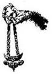
345.
A remegő fáklyafényben egy szöveget olvasol a kocka alakú pilléren:
A skarabeus bogár mérgétől legtávolabb
Halálosabb mérget lelsz, mint a sárkány tüze.
A három pillér hirtelen eltűnik. Meglepetten lépsz hátra. A szoba üres marad, semmi baljóslatú dolog nem történik, így hát úgy döntesz, hogy továbbmész. Lapozz a 339-re.
346.
A könyvtár első terme tele van asztalokkal, ahol íródeákok dolgoznak: másolják a könyveket és tekercseket. Az egyik ablakmélyedésben, egy plüssfotelben ráncos öreg ül, aki a tudósok halványkék köntösét viseli. Elég idegennek érzed magad páncélban itt, a könyvtárban, ahol legfeljebb a tollak sercegése töri meg a csendet. - Üdvözöllek a Járóföld legnagyobb könyvtárában - szólal meg a Tudós. - Válassz ki bármilyen könyvet vagy tekercset, amit elolvasnál. Akarod, hogy segítsek? Mit tanulmányozol? - Ha az Istenekről kérsz valami olvasnivalót - lapozz a 336-ra. Ha Szürkecéhek történelméről akarsz olvasni - lapozz a 196-ra.
347.
Semmi sem történik. Lapozz a 292-re.
348.
A sár, amit odadobtál, egy láthatatlan alakról pereg le. Egy három méter magas, vékony, emberszerű teremtmény alakja rajzolódik ki előtted. Szinte gépiesen tart feléd, és csak akkor döbbensz rá, hogy meg akar támadni, amikor már föléd tornyosul. Meg kell küzdened a Láthatatlan Támadóval!
Láthatatlan Támadó ÜGYESSÉG 7 ÉLETERŐ 8
Ha legyőzted, lapozz a 250-re.
349.
- Mit gondolsz, ki vagy te? Isten talán? Maga Vagar, a Csaló? Takarodj! - mondja vicsorogva Vagrant. - Kezével elutasítóan int. Lapozz a 367-re.
350.
Észreveszed, hogy a szarkofág alja üreges. Áttörsz rajta, és egy folyosóra bukkansz ki alatta. Leugrasz és követed a dohos, kanyargó falat. Végül napfényt látsz magad előtt. Újra a lépcsőkhöz jutsz, nem sokkal a dübörgő vízesés fölött. Továbbmászol. Lapozz a 328-ra.
351.
Végigvisznek az Ingoványi kapu utcán, különböző élelmiszer- és fazekasüzletek előtt, azután a nyüzsgő Raktár utcán. Ott jobbra kanyarodtok az Őr utcára és megálltok egy szürke, zömök épület előtt. Ez az őrség épülete. Az őrök leszállnak a lóról és bevezetnek. Lapozz a 78-ra.
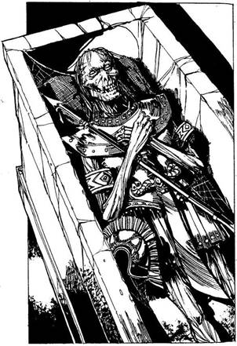
352.
Kinyitod az ajtót és belépsz egy átjáróba. Csak néhány lépést teszel, amikor leeső lánc csörrenését hallod, amint a hátad mögött lezuhan a rács a folyosóra, és elzárja a visszafelé vezető utat. Csak az előtted nyíló kis szobába mehetsz. Ez nem más, mintegy dohos kripta. A végében egy szarkofág áh, rajta szürke penész. A helyiség minden zegét-zugát átkutatod, de nem találsz kijáratot. Csapdába estél. Végül úgy döntesz, fölemeled a szarkofág tetejét. Az emberemlékezet óta bezárt levegő orrfacsaró bűze émelyítően édeskés. Odabent egy harcos mumifikált maradványait látod: a bőre rászáradt törékeny csontjaira. Csontváz keze ősi, smaragdokkal kirakott handzsárt ölel át, mellén keresztben egy elefántcsont hegyű, ébenfa lándzsa fekszik. Ha a kardot veszed el - lapozz a 387-re. Ha a lándzsát választod - lapozz a 395-re.
353.
Utolsó csapásod nyomán vér serken Tyucsev oldalából. Hátraugrik és felkiált: - Anarchil, erkölcs felrúgója, segíts! - Az Istenét hívja segítségül. Mielőtt rámérhetnéd a halálos csapást, a pince megremeg. A földrengés hatalmas hasadékot nyit a padlóban. A leomló fal dübörög, a helyiséget por
árasztja el. A nagy összevisszaságban Tyucsev és Kasszandra nyugodtan elmenekül. Mikor a rengés abbamarad, fölmész a lépcsőkön és távozol. Lapozz a 289-re.
354.
A sunyi képű tolvaj a szerencsétlen ékszerész hátába mélyeszti a kardját, és mintha mi sem történt volna, hozzád fordul. - Hát, nem is tudom. Még csak nem is vagy tagja a Klánnak. Ennek ellenére megmondom: ha kinyitod a páncélszekrényt, megkapod a részedet. A páncélszekrényt mágikus róna védi. A következőt kell mondanod, hogy megtörd a varázst: „Nem tettem meg.” - Ha odamész a páncélszekrényhez, ahogy mondta, remélve, hogy te vehetsz először a zsákmányból, akármi legyen is odabent - lapozz a 341-re. Ha visszautasítod és azt mondod, hogy inkább próbálja meg ő - lapozz a 364-re.
355.
Utolsó csapásod nyomán vér serken Tyucsev oldalából. Hátraugrik és felkiált: - Anarchil, erkölcs felrúgója, segíts! - Az Istenét hívja segítségül. Mielőtt rámérhetnéd a halálos csapást, a pince megremeg. A földrengés hatalmas hasadékot nyit a padlóban. A leomló fal dübörög, a helyiséget por
árasztja el. A nagy összevisszaságban Tyucsev és Kasszandra nyugodtan elmenekül. Mikor a rengés abbamarad, felmész a lépcsőkön, és az átkozott tigrisamulettet a földre dobva kilépsz a vakító napfényre. Lapozz a 289-re.
356.
A Sárkány elmondja, hogy ő a kapu őrzője és átenged téged a Talizmánnal. - Nem látod többé hasznát a fegyvereknek, hagyd hát itt őket - mondja mézesmázos hangján. Mit teszel?
Teljesíted a kívánságát és leteszed a
fegyvereidet? Lapozz a 373-ra.
Rárontasz és megtámadod? Lapozz a 146-ra.
Elmenekülsz? Lapozz a 380-ra.
357.
A Raktár utcában vagy. Mindenfelé vásárlók nyüzsögnek, de egy nő kelti fel a figyelmedet, aki tűnődve néz rád. Egyenes szálú haja meglehetősen rövidre van nyírva és nem visel ékszereket. Átvág az utcán és halk, de tiszta hangon, udvariasan megszólít: - Azt hiszem, te idegen vagy ebben a városban. Ki vagy és merről jöttél? Ha elmondod, hogy szent küldetésben jársz és a vadonon át jöttél - lapozz a 198-ra. Ha azt feleled, hogy csak átutazóban vagy itt és gyorsan továbbmész - lapozz a 130-ra.
358.
Lágy hangját feléd hozza a szél: - Én semmit sem tudok a Halálról; ő nem érhet el. Én az őr vagyok, akit az Istenek helyeztek ide; sem több, sem
kevesebb. Ha beszélsz neki a Talizmánról és fontosságáról - lapozz a 211-re. Ha megtámadod a Sárkányt - lapozz a 382-re.
359.
Futsz, amilyen gyorsan csak tudsz, de kimerítettek előző erőfeszítéseid. Nem találsz búvóhelyet, ezért szembe kell nézned a Sötét Elfekkel, akik már majdnem utolértek. Egyikük különös mozdulatot tesz. Hirtelen fájdalom hasít beléd és a földre zuhansz. Az Elfek aljas, sötét mágiát használnak. Képtelen vagy ellenállni, csak nézed, amint kezed-lábad megkötözik. Visszavisznek magukkal a Hasadékba, és soha többé nem látod meg a napvilágot. Küldetésed itt véget ér.
360.
Az alkimista egy palackot ad át cserébe az aranyrúdért, és azt mondja, idd meg, amíg friss. Úgy döntesz, hogy itt és most megiszod. Vad fokhagyma csípős szaga árad belőle. Mikor megiszod, úgy érzed, Új erőre kaptál. Kezdeti ÉLETERŐDHÖZ adj hozzá 2-t és állítsd vissza ÉLETERŐ pontjaidat erre az Új maximumra. Úgy érzed, nem hiába költötted el ezt a pénzt, mintha újjászülettél volna. Ha maradt pénzed, és még nem tetted meg, kipróbálhatod az alkimista egyéb portékáit is.
Kéregbőr - 7 arany Lapozz a 306-ra.
Szerencse köve - 10 arany Lapozz a 266-ra.
Gyorsaság gőzei - 10 arany Lapozz a 233-ra.
Ha tovább akarsz menni Lapozz a 28-ra.
361.
Semmi sem történik. Lapozz a 292-re.
362.
Leugrasz és behátrálsz két üzlet közé egy sarokba, így nem tudnak egyszerre megtámadni. A Kapitány és Elvira leszállnak a lóról és kardot rántanak, miközben egy másik visszavágtat az Ingoványi kapuhoz. Először ezzel a kettővel kell megküzdened.
ÜGYESSÉG ÉLETERŐ
Kapitány 8 10
Elvira 6 8
Ha bármelyik Fordulóban a Kapitány támadóereje 10 vagy ennél több és eltalál - lapozz a 393-ra. Ha legyőzted. őket, lapozz a 376-ra.
363.
- Maradj - mondja Tyucsev, és egy erőszakos mozdulattal visszaparancsol a helyedre. Ha mégis kimész - lapozz a 316-ra. Ha visszaülsz, ahogy mondta - lapozz a 374-re.
364.
- Szégyen - mondja. - Meg kellett volna ölnünk. - Ezzel a két nagydarab tolvaj rád támad. Meg kell küzdened velük.
ÜGYESSÉG ÉLETERŐ
Első Tolvaj 6 7
Második Tolvaj 5 6
Ha megölted az egyik tolvajt, lapozz a 391-re.
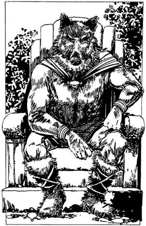
365.
A falu néhány előkelő házból áll, amelyek agyaggal tapasztott vályogból épültek. Mély, száraz árok és hegyes cölöpkerítés veszi körül őket. Keresztülvezetnek a falun egy részben zöld horzsakőből épült kétszintes házhoz, amely bizonyára a Disznófő lakhelye. Nem messze nagy, sáros pocsolyát látsz. A Disznófő faragott kőtrónuson ül; kékesfekete bőre alatt csak úgy dagadoznak az izmok. Vörös köpenyt visel, ezt egy borostyán nyaklánc fogja össze vaskos nyakán. Elégedettnek látszik, de megkérdezi, hogy te, egy ember, mit keresel itt a fennsíkon. Ha azt feleled, hogy nem akarsz rosszat nekik, csak az Égigérő hegy kapuit keresed - lapozz a 110-re. Ha azt mondod neki, hogy egy elveszett város után kutatsz - lapozz a 90-re.
366.
A szerzetes az erőlködéstől nyögve a bal lábával a csuklódba rúg és lefegyverez. Még mielőtt a bal lába földet érne, a jobb lábával állon rúg és te összerogysz, mint a rongy. Mikor magadhoz térsz, az ökrös szekér kocsisa éppen hideg vízzel locsolgat. Még mindig cseng a füled. - Attól tartok, kirabolt - mondja a paraszt. Kétségbeesetten ellenőrzöd, megvan-e még a Talizmán, de a szerzetes csak azt a gyűrűt vitte el, amit Hawkanánál találtál. Lapozz a 392-re.
367.
- Akkor sok szerencsét hozzá! - mondja a Sebhelyes. A tolvajok még mindig rád szegezik az íjpuskáikat. Vagrant távozik és úgy döntesz, okosabb lesz, ha te is elmész. Nincs más választásod, egyedül kell megbirkóznod Fell-Kyrinla templomával. Elindulsz, hogy megkeresd. Lapozz a 383-ra.
368.
Tyucsev kardja majdnem akkora, mint te magad, de ő csak lazán, fél kézzel fogja. Kasszandra hideg fénnyel dereng. Ahányszor eltalál, 3 ÉLETERŐ pontot kell levonnod.
ÜGYESSÉG ÉLETERŐ
Tyucsev 10 12
Kasszandra 9 10
Ha Kasszandra ÉLETEREJÉT 4-re vagy az alá csökkented, Tyucsev eléje lép, hogy fedezze. Ha Tyucsev ÉLETEREJÉT 4-re vagy az alá csökkented - lapozz a 353-ra.
369.
A ritka levegőtől lihegve továbbmászol, végül eléred a hegytetőt. A látvány Szinte hihetetlen. Az egész fennsík előtted fekszik, akár egy óriási terepasztal. Trópusi erdők, hegyek és széles tavak csillognak a napfényben. Harminc méterre tőled egy ragyogó ezüst téglalap lebeg a levegőben, noha semmi sem tartja. Felismered: ez a kapu. Ahogy közelebb lépsz, szélzúgásra leszel figyelmes. Felnézel és az ősöreg Vörös Sárkányt látod, amint leszállni készül a kapu mellé. Most még
hatalmasabbnak és félelmetesebbnek látszik, mint a barlangjában: meleg és erő árad belőle. - Engem az Istenek bíztak meg, hogy a kaput őrizzem. Addig a napig élek, míg valaki át nem megy rajta. Sajnos nem engedhetlek át - mondja élvezettel. - Amint előrelépsz, hogy harcolj, mély lélegzetet vesz. Süvítve tódul ki a levegő hatalmas tüdejéből. Mielőtt megtámadhatnád, lángnyelvek ölelnek körül. Porrá égsz. Küldetésed véget ért, pedig már ott voltál a célnál. Lapozz a 43-ra.
370.
- Köszönöm - mondja Vagrant. - Most, hogy tudjuk, hova kell mennünk, rád már nincs szükség. - Ujjaival csettint egyet. Íjpuskalövedékek záporoznak feléd; holtan rogysz a földre. Lapozz a 109-re.
371.
A múmia összeesik és csak egy halom törött csont meg néhány koszos rongy marad utána. Megvizsgálod a handzsárt és a lándzsát. A lándzsa nyelébe a „Sárkányölő” szót vésték és nyilvánvaló, hogy mágikus ereje van. Úgy döntesz, hogy magadhoz veszed. Ha használod, adj 1-et az ÜGYESSÉG pontjaidhoz. Lapozz a 350-re.
372.
Alembic üdvözöl és vidáman azt mondja: - Te igencsak kalandos kedvű embernek látszol. Nem akarsz venni valamit? - Megkérdezed, hogy mit lehet nála kapni. A következő dolgokat mutatja neked, mindegyiken kis árcédulával. Mit veszel?
Egy kis üveget „Élet vize” felirattal
12 aranyért? Lapozz a 360-ra.
Egy „Kéregbőr” feliratú kenőcsös kancsót
7 aranyért? Lapozz a 306-ra.
A „Szerencse Kövét”
10 aranyért? Lapozz a 266-ra.
Egy kis fiolát „Gyorsaság Gőzei” felirattal
10 aranyért? Lapozz a 233-ra.
Ha úgy döntesz, hogy inkább továbbmész, lapozz a 28-ra.
373.
A Sárkány hagyja, hogy elmenj, de mikor kimész, mintha rosszindulat csillanna a szemében. A félelem tovább ösztökél. Gyorsan kisietsz a barlangból, és folytatod az utat a csúcsra. Lapozz a 369-re.
374.
Bemutatkoznak: a nevük Tyucsev és Kasszandra. - Idegen vagy itt a városban. Miért jöttél a Vörös Sárkányba? - kérdezi Tyucsev. - A gyönyörű Kasszandra egy tőrt vesz elő a csizma szárából és dobálni kezdi. Mindig a hegyénél kapja el. Ahogy a válaszon gondolkodsz, újra feldobja, de most nem kapja el. A kezedtől egy centire fúródik bele az asztalba. Mit teszel?
Azt mondod, hogy tolvajokkal akarsz
találkozni? Lapozz a 340-re.
Azt mondod, hogy egy sörre
jöttél be? Lapozz a 386-ra.
Közlöd vele, hogy törődjön a maga
dolgával? Lapozz a 397-re.
375.
A Raktár utca, az Ingoványi kapu meghosszabbítása: ahhoz a boltívhez vezet, amelyen bejöttél a városba. Vásári tömeg hömpölyög az utcán; idegesen nézel körül. Mit teszel?
Végigsietsz a Raktár utcán az Ingoványi
kapuhoz? Lapozz a 237-re.
Estig lefekszel egy
sikátorban? Lapozz a 126-ra.
Ha a Tudóssal vacsoráztál, megkérdezed,
merre van a temető? Lapozz a 261-re.
376.
A többiek nagy lármával elvágtatnak. Végigrohansz a Raktár utcán, aztán visszafordulsz egy Sötét sikátoron, amely az Ingoványi kapuval párhuzamos, és elbújsz egy rakás régi hordó mögé. Egy ideig vársz, míg ki mersz bújni rejtekedből, és óvatosan visszamész az Ingoványi kapuhoz. Ha végigmész a Raktár utcán - lapozz a 357-re. Ha balra fordulsz a Kovács utcára - lapozz a 303-ra.
377.
Az ajtó nem nyílik. Ahogy újra megpróbálod kinyitni, zajt hallasz a hátad mögött. Megpördülsz, méghozzá épp jókor, mert látod, hogy a bálvány felreped, mint egy tojás, közben kőszilánkokat szór
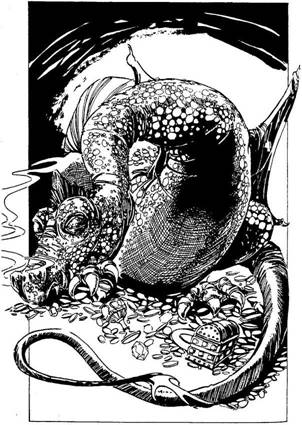
szét a szobában. A belsejéből Damolhnak, a Semmi Istenének, az Üresség Szájának szörnyűséges fia vonaglik elő. Lassan, de biztosan közeledik feléd. Harcolsz vele, de sebezhetetlen. A kardod nem tesz benne kárt. Rájössz, hogy egyetlen esélyed van: ki kell menekülnöd az egyik ajtón. Hátraugrasz. Melyik ajtót próbálod meg?
Amelyiken a kígyó van? Lapozz a 168-ra.
Amelyiken a majom van? Lapozz a 390-re.
Amelyiken a sárkány van? Lapozz a 352-re.
378.
A folyosó továbbvezet, balra kanyarodik és lejteni kezd. Amint befordulsz az egyik sarkon, egy hatalmas Sárkánnyal kerülsz szembe. Nehéz szemhéjai csupán résnyire vannak nyitva és kénes füstfellegek szállnak fel az orrlikaiból. Körülbelül tizennyolc méter hosszú és vörös pikkelyek borítják. Farka nagy kupac kincs körül tekereg - ékkövek, arany, serlegek és vázák hevernek mindenfelé nagy összevisszaságban a Sárkány terjedelmes teste alatt. Mit teszel?
Odaosonsz hozzá? Lapozz a 115-re.
Megdobod a lándzsáddal, ha van
nálad ilyen? Lapozz a 82-re.
Visszamész és földeríted a szűk
oldaljáratot? Lapozz a 22-re.
Kimész és továbbmászol a
hegyre? Lapozz a 369-re.
Megpróbálsz ellopni egy keveset a Sárkány
kincséből? Lapozz a 38-ra.
379.
Hátralépsz és átengeded a szerzetest. Gőgösen megy el melletted, egyetlen szó köszönet nélkül. Lapozz a 392-re.
380.
Elfutsz, de átjár a félelem, amikor a Sárkány gonoszul utánad kiált: - A kapunál találkozunk, ember! - Épségben eléred a barlang bejáratát és továbbmászol a Csúcs felé. Lapozz a 369-re.
381.
Amint kimondod a szavakat és a páncélszekrényhez nyúlsz, vakító tűzcsóva borít el. A páncélszekrényt tűzcsapda védte és te megégtél. Lapozz a 109-re.
382.
Amint rárontasz a Sárkányra, az forró lángcsóvákat lehel feléd. A pajzsod mögé kuporodsz, amely megvéd a tűztől. Mielőtt megtámadhatnád, a Sárkány dühösen üvöltve mancsával a pajzsra sújt. Dobj két kockával! Ha a kapott összeg kevesebb, mint ÜGYESSÉG pontjaidnak száma - lapozz a 34-re. Ha a kapott összeg nagyobb vagy Ugyanannyi, mint ÜGYESSÉG pontjaid száma - lapozz a 79-re.
383.
Észreveszed az egyik harcosnőt, akiről tudod, hogy Fell-Kyrinla híve. Azt reméled, hogy a templomba igyekszik, ezért a nyomába eredsz és távolról követed. Végül egy nagy fehér kőépület elé érsz, amelyet szürke oszlopok szegélyeznek. Lépcsők vezetnek a bejárathoz, ahol két oszlop között egy őr áll. Mit teszel?
Megtámadod az őrt? Lapozz a 234-re.
Azt mondod, hogy fontos üzenetet hoztál a
Főpapnőnek? Lapozz a 202-re.
384.
Átvágsz a bozóton, de a sűrű, tüskés bokrok lassúvá és nehézkessé teszik a haladást. Nehezen kapsz levegőt és az erőfeszítéstől megéhezel. Enned kell - húzz ki egy adag Élelmet a Kalandlapodról. Ezért az étkezésért nem kapsz vissza egyetlen ÉLETERŐ pontot sem. Továbbmész. Lapozz a 65-re.
385.
Megállsz egy vízmosásban és megvizsgálod a pikkelyeket. Összeilleszted őket pajzs alakúra és a Borostyánfenyő Gyantáját használod ragasztónak. Lapozz a 69-re.
386.
- Egyedül? - kérdezi Tyucsev. - Idegenek nem jönnek a Vörös Sárkányba csak azért, hogy igyanak egyet. Nem tudod, hogy mi itt mindnyájan tolvajok vagyunk? Mit keresel itt? - Ha közlöd vele, hogy törődjön a maga dolgával - lapozz a 397-re. Ha mentegetőzöl, hogy csak tévedésből jöttél be és kimész - lapozz a 289-re.

387.
Amint megpróbálod kihúzni a kardot a Múmia kezéből, szorítása hirtelen megkeményedik, vasmarokkal tartja a kardot. Az ősi halott felül, a por lepereg róla. Rémülten lépsz hátra, mikor a Múmia kilép szarkofágjából és kardját meg lándzsáját megragadva megtámad, amiért ki akartad rabolni a kriptáját. Meg kell küzdened vele.
Múmia ÜGYESSÉG 9 ÉLETERŐ 10
Ha legyőzted, lapozz a 371-re.
388.
Ügyet sem vetnek a fenyegetésedre és a tűzön át feléd ösztökélik lovaikat. A lángok közé veted a Talizmánt, de semmi sem történik. Az egyik kísértet kiveszi az izzó parázsból és megérint vele.
Lelkedet beszívja a Talizmán, tested pedig szétporlik. Most már csak a Talizmán része vagy.
389.
A fejedben egy hangot hallasz: - Segítek neked, de téged most elragad a Halál. Ami elrendeltetett, annak meg kell lennie. - Lapozz a 292-re.
390.
Az ajtó mögött csupasz fal van. Ez az ajtó nem valódi. Úgy látod, mintha a majom gúnyosan vigyorogna rajtad. Mielőtt megmoccanhatnál, súlyos, zöld csáp tekeredik a mellkasod köré. A földre zuhansz, Damolh erős farka összezúz. Még életben vagy, amikor a sakálszerű fejek nekilátnak, hogy felfaljanak és lelkedet beszippantsa a fekete üresség. Kalandod itt véget ér.
391.
Látva halálos kardforgató tudományodat, a harmadik tolvaj kimenekül az utcára. A másik, kardját eldobva kegyelemért könyörög. - Én tudom, mi a helyes szöveg - hadarja. - Csak azt kell mondanod: „Vas és tűz kosara vagyok!” - Ha ezekkel a szavakkal próbálod kinyitni a páncélszekrényt - lapozz a 381-re. Ha ráparancsolsz, hogy nyissa ki - lapozz a 399-re.
392.
Sötétedik, amikor a temetőbe érsz. Elkezded végigkutatni a városfalat a hátsó kaput keresve. Nem nézel a fejfákra, mert félsz, hogy az egyik nyitott síron a te neved szerepel. Ekkor a sírok közt egy oszlopon mintha lámpást látnál. Ha odamész a lámpáshoz - lapozz a 274-re. Ha ügyet sem vetsz rá, és tovább keresed a kijáratot - lapozz a 99-re.
393.
A Kapitány élve akar elfogni, ezért közelebb lép és pajzsával a kardforgató kezedre sújt. Mielőtt újra támadhatnál, kardja markolatával oldalról a nyakadra vág és te ájultan esel össze. Hátrakötik a kezeidet és Újra elindultok. Lapozz a 351-re.
394.
Elmész néhány stand mellett, ahol gabonakereskedők árulnak, de egy szürke kis bolt sokkal érdekesebbnek látszik. Cégér hirdeti előtte: „Alembic az Alkimista”. A kirakatban csak egy fémtál van, rajta öt mogyorónak látszó bogyó, meg egy kitömött hiúz. Bekukucskálsz és egy embert veszel észre. Ujjatlan fehér köntöst visel, amelyet egy tűzből felemelkedő főnix képe díszít. Ha belépsz az üzletbe - lapozz a 372-re. Ha továbbmész - lapozz a 28-ra.

395.
Elveszed a lándzsát. Közelebbről megvizsgálva észre- veszed, hogy a „Sárkányölő” szót vésték bele. Nyilvánvaló, hogy mágikus ereje van - amikor ezt használod, nyersz 1 ÜGYESSÉGI pontot. A Múmia fölemelkedik a szarkofágban, öreg csontjai recsegnek. Handzsárját szorosan fogva részegen botorkál feléd, hogy elpusztítsa sírjának tönkretevőjét.
Múmia ÜGYESSÉG 8 ÉLETERŐ 10
Ha legyőzted, lapozz a 350-re.
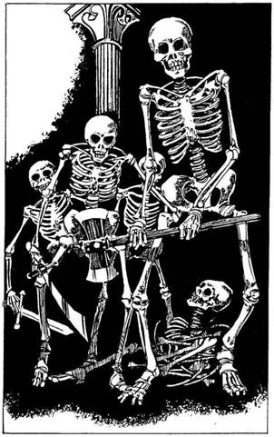
396.
A koponyát szilánkokra zúzod, de Mortphilio sem tétlen. A szoba fala nem bambuszból van, hanem a halottidéző áldozatainak csontjaiból. Őket hívja most életre, hogy megtámadjanak. Hamarosan csontváz harcosok vesznek körül, ezért úgy döntesz, inkább elfutsz, mielőtt még felülkerekednének. Az egyetlen szabad út egy hosszú kőfolyosó, amely egy fekete függönyös, boltíves ajtóhoz vezet. Félrelököd a függönyt, átrohansz és a meglepetéstől eláll a lélegzeted. Lapozz a 97-re.

397.
- Ezt még megbánod - sziszegi a fogai között Tyucsev. Ekkor Kasszandra halkan így szól: - Azt hiszem, idegen, jobb lenne, ha bocsánatot kérnél tőle. Nem? Mit válaszolsz? Ha azt, hogy - Nem szoktam bocsánatot kérni az efféléktől - lapozz a 294-re. Ha azt, hogy - Ó, igen, bocsánatot kérek - lapozz a 337-re.

398.
Tedd próbára a SZERENCSÉDET! Ha SZERENCSÉD van - lapozz a 324-re. Ha nincs SZERENCSÉD - lapozz a 314-re.

399.
- Ha muszáj - mondja a tolvaj és elindul a páncélszekrény felé. Akrobatikus ügyességgel hirtelen átugorja a pultot és egy szemvillanás alatt kint van az üzletből. Ha megpróbálod kinyitni a páncélszekrényt és azt mondod: - Vas és tűz kosara vagyok - lapozz a 381-re. Ha elmész, mert lehet, hogy a gonosztevő elmondja az őrségnek, hogy megölted az ékszerészt - lapozz a 304-re.
400.
Mielőtt átlépnél a kapun, szemed még egyszer utoljára beissza ennek a fantasztikus világnak a látványát. A csillogó tavak és smaragdzöld erdők mintha remegnének a felszálló párában. A Talizmán súlyosan nehezedik a melledre. Egy utolsó imát küldesz Mindenek Anyjának, és arra a négy keresztes lovagra emlékezve, akik ezzel a küldetéssel megbíztak, átlépsz a kapu ezüstös síkján. Nem ütközöl akadályba. Minden elsötétül előtted, aztán egészen más látvány tárul eléd. Nagy kövek gyűrűjében állsz. Az illatok, a levegő, a madarak csicsergése - minden olyan különösnek tűnik, de tudod, hogy visszataláltál a Földre. Hős vagy, Orb megmentője, de nincs itt senki, aki hírül adná jöttödet. Amint elindulsz, a kövek közül egy hangot hallasz. A két lény, aki megidézett az Orbon, megköszöni, hogy megmentetted a világukat. Végül elmondják, kik ők. Az Idő, a Legöregebb Apa, a Legfiatalabb Fiú valamint a Sors, az Egyensúly Fenntartója. Mindketten Orb Istenei. Amint elhagyod ezt a szent helyet, utolsó szavaik visszhangzanak füledben: - Lehet, hogy újra hívunk!